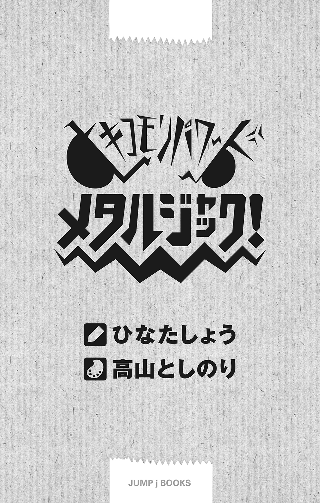

| ヒキコモリパワード メタルジャック！ | |
| ひなたしょう | |
この本は縦書きでレイアウトされています。
また、ご覧になる機種により、表示の差が認められることがあります。

ＣＯＮＴＥＮＴＳ
ヒキコモリパワード メタルジャック！
jNGP'08 Spring テーマ部門（テーマ・めがね）金賞受賞作
「なん......だと......？」
朝起きて、何気なく鏡の前に立ったら、ダンボールをかぶったパジャマの男が映っていたりする。
――誰だ......？ いや俺だ。そう心の中で呟いて、俺は、鏡の前で停止していた。
そのダンボールには、ぽっかりと穴があいていた。ちょうど両目にあたる位置に。それによって前が見えるようになっているのだ。しかし、鏡を覗きこんでも穴の中は暗くて自分の顔が見えない。
「どうなっているんだこれは......？」
さらに、両目となる穴の下にはギザギザの口がついていた。両目の穴同様、そこからも自分の顔は見えない。ごっ、とダンボールがぶつかるほど鏡に近づいても、中は真っ暗なのである。
今現在、寝起きの俺の首から上を覆っているそれは、ハロウィンにカボチャをくりぬいて作るジャック・オ・ランタンにどこか似ていた。それのダンボール版とでもいおうか。そんなものを、なぜかすっぽりとかぶっているのだ。
「ふう......」
溜息をつき、鏡の前で「やれやれ」と首を振った俺は、すっと両手で――
「うおお、取れねえ!?」
緊急事態であった。両手を使って脱ごうとしても、頭部を覆ったダンボールはビクともしない。俺は混乱した。一体全体これはなんだろう？ その前にどういう状況なのだろう？ 鏡の中で、ダンボールをかぶった男がもがいているのが見える。両手にぐいぐい力を入れて、必死になってもがいている。滑稽で憐れな姿だ。ギザギザの口は、横から見ると恐竜のようであった。パッカンパッカン開閉を繰り返すそれは、ティラノサウルスが大きく口を開けているみたいに見える。カオスだ。どうして寝ている間にこんなことになっているのか。どう寝ればこうなるのか。
「超」がつくほどのひきこもりで不登校の俺。ダンボールには少なからず縁がある。外に出て買い物に行くという概念がないので、欲しいマンガやゲームを買うときにはいつもネットショップを利用している。その為、部屋の隅には届いた荷物のダンボールが常に散乱していた。
――まさか寝ている間に、寝惚けてそのダンボールに頭を突っこんだのか......？
そんなことを考える。ありえないようなことだが、ひきこもりも末期なのかもしれない。いよいよ俺もヤバイのかもしれない。
そうだ。商品を固定するため、ダンボールの底に糊がついている箱もあった。それに髪の毛がくっついてしまったということも......いや、やっぱりさすがにないか。それはなかろうて。いくら俺でもそれはなかろうて。
第一、髪の毛にはさらさらとした感触がある。ひっぱっても痛くはない。とても糊づけされてしまっているとは思えない。なのになぜ脱げないのだろうかこの箱は。
俺はとりあえず落ち着いてみることにした。そうだ、こういうときには焦ったら負けだ。とあるニートもこう言っていた。働いたら負けだ――と。だからどうしたっていうんだ。困ったぜ。まったく、クソの役にも立たないアドバイスだ。ああ、だがしかし、わかるぜ。こういうときはきっと焦ったら負けなのだ。
ひとまず冷静になって行動してみることにする。
ギザギザの口から手を突っこんでみる。指先が鼻に触れた。相も変わらず穴の中は暗く、鏡には鼻も指の先も映ってはいないが、そこに確かにある。
視界も良好。呼吸もできる。食べることもできる。ならばよし、とりあえず歯を磨こうではないか。
起きたてで口の中が気持ち悪い。歯磨きをしながらゆっくりと考えてもいいんじゃないかな。ダンボールをかぶったまま優雅に洗面。たまにはそんなスローライフがあってもいいんじゃないかな。うん。
左手にプラスチックのコップ。右手に歯ブラシ。ギザギザから歯ブラシを突っこんで、歯を磨くダンボールの怪人がそこにはいた。
「あ......」
とそこで俺は気づく。
「顔が洗えないや......」
口をゆすぐことはできるが、この状態では顔を洗うことができない。もしこれが脱げなければ、俺はこの先死ぬまでずーっと顔が洗えないではないか。くそう。どうして神はこれほどまでに困難な試練を与えるのだこの俺に。どうしよう......。そんなふうに、俺が人生の危機に直面していると、
『大丈夫ですよー。完全防水なのでザバーっと洗ってくれちゃって構いません。それどころかそのまま入浴もできますし、海水浴だってできるんですよー』
そんな声が聞こえた。
「そうか。よーし......！」
ぱかっ、と開いたギザギザの口から顔を洗う。下を向いてばしゃばしゃと。
「......ふう」
内部にタオルを持った手を突っこんで、ごしごしと。ぱっと顔を上げたと同時に開いていたギザギザの口はまた閉じて、鏡の中には再び怪奇ダンボール男の姿が――
「............え？」
意外や意外、鏡の中に映っていたのはなんとも奇妙な格好をした女の子であった。
スクール水着（旧タイプ）のようにも見えるその服は、アニメなどで女の子がロボットに搭乗するときに着るパイロットスーツみたいな、なんともＳＦチックな雰囲気だ。
そしてさらにその上に、白衣を羽織っている。脚部にはなんと、ニーソックスと思われるものまで装着している。
そんな、およそ常人では理解できない個性的すぎる出で立ちの女の子がそこにはいた。
だが、驚くべきところはそこではない。女の子は女の子でも、彼女は人間の女の子ではないのだ。アニメなのだ。二次元なのだ。つまりは絵なのだ。絵に描いた餅ならぬ絵に描いた女の子がそこには映っていたのだ。
――はて？ 俺はいつから美少女になったのだろうか。さっきまで恐怖ダンボール男だったじゃないか。そしてなぜアニメ絵だ。
あらゆる疑問が脳内を駆け巡る。こんな不可解なことがあってたまるものか。第一、俺にはまだダンボールをかぶっている感触がある。なのになんだこの鏡は。なぜ俺が映っていないのだ。あれ、これテレビ？ なに、こんな時間にアニメやってたの？ いやいや、鏡でしょう。いくらなんでもテレビと鏡は間違えないわ。
ここで俺はピンときた。こんな状況をたったひと言で説明できるあの言葉を。
――夢なのだ。
そう、これは夢だ。夢ならこのようなワケのわからないことが起きても納得がいく。この間も家の中に大量のゾンビが現れた夢をみた。武器となるのはなぜかパイプ椅子だった夢だ。凶暴なゾンビにパイプ椅子で立ち向かわなければならぬその理不尽さ。現実世界であったらもっとも有効であろう「家から出る」「外に逃げる」という選択肢のなさ。そして、夢の中ではそれを当然のこととして受け取ってしまう自分がいる。だが、夢とは、そういうものなのだ。長いこと不登校でひきこもりだから自分の部屋や家の中などにいるリアルな夢もここ最近特によくみるようになった。これもきっとそのたぐいに違いない。
でなければ、朝起きていきなりダンボールをかぶっているなんてことはありえない。それで、完全防水だからって言われて顔洗って、ぱっと顔上げたらなぜか二次元美少女になっていたなんてことあるはずない。なんという夢。意味がわからない。まさに夢だこれは。
『どうですか？ 完全防水でしょう？』
先ほど聞いた声と同じ声が前方から。いや、ていうかさっきから俺に話しかけてんの誰!? あばばヤバイヤバイ。幻聴だよコレは。いや夢なんだ。夢だからおかしくないんだ。
『あれ、もしかして顔洗ったのにまだ寝惚けてます？』
目の前のアニメ絵が......！ 噓だろおい......!?
鏡の中で、女の子がきょとんとしていた。俺はそんな顔していないのに。表情変えていないのに。てか俺の顔見えねえし。
――いや、だからこれは鏡の中ではない。
信じられない光景だが、鏡の前に四角い窓があって、その中にいる女の子が、しゃべっていたのだ。この俺に向かって。
彼女は、俺と鏡の間に存在していた。四角い画面が、映像が、宙に浮いている。
「......夢？」
『一応計測しときますけど、脳波は正常ですよ。これはバッチリ覚醒してますね』
「え、なにこれ......」
アニメの幽霊？ だとしたらなんて斬新な霊だ。画面のまま切り取られてきたかのような。あれですか。俺が新作を観るたびに浮気をするから化けて出てきたんですか？ そこまで俺は二次元に想われていたということですか？
そんなとりとめもないことを考えていると、
『森内メタルさん』
と彼女が俺の名を呼んだ。
『いかがですか我が社の商品は？』
「商品？ いや、それよりもどうして俺の名前を......？」
『それは知っていますよ。なんていったって大切なテスターですからね。ではちょっと手元にあるデータを読みあげてみましょうか？』
画面の中で、どこからともなく書類の束を取り出した彼女。ぱらぱらとめくりながら話しだす。
『森内メタル。生まれついてのひきこもりで、不登校のスペシャリスト。現在高校二年生。あ、ちゃんと通学していれば――ですね。その学校での遭遇率は、トキワの森におけるピ○チュウの出現率よりも低いとされている。家の前を通学路としている女子高生・仲羽良吉乃の姿を窓から見守るのが日課であり、生きる喜びである。......すごいですねいろいろと。特にラストが』
「そうか、彼女は仲羽良吉乃さんというのか......！」
『あう......ストーカーに情報を与えてしまいました......』
「仲羽良吉乃......仲羽良さん......なんて美しい響きだ――ってお前なぜそれほどまでに俺の個人的情報を!? お前――ええっと......？」
指先が、逡巡する。目の前にいる二次元生命体（？）をなんと呼べばいいのか。
『ああ、申し遅れました。私はパンドラ社の自立支援用パワードヘッド・メタルジャック付属のヘルプＡＩで、レウイシア２Ｄと申します。レウって呼んでくださいね』
――お前は何語でしゃべっているのだ？
何を言われたのかさっぱりわからない。どうやら夢ではなさそうだが、目の前にいるアニメの絵と普通に会話しているところとかが、俺にはいまだに信じられない。
『つまりですね、宙に浮くしゃべる取扱説明書なのですこの私は』
「説明書って、なんの......？」
『それですよそれ』
びしっと彼女――レウイシア２Ｄとやらが、俺を指差した。正確にはそう、俺の頭部――脱げないダンボールをだ。
「お前のしわざかァァァッ!?」
思わずつかみかかる。が、レウのいる四角い窓はひらりと俺の手を躱した。そのままつんのめり、俺はダンボールを鏡にぶつけた。
『正確には我がパンドラ社ですね』
「聞いたこともない名前の会社を――」
体勢を立て直し、ふわふわと宙に浮く画面を睨みつける。
『それはそうです。パンドラ社はこの世界とは別の世界にある会社ですから』
話が......ああ、なんだろう。いや、わかるのだけれど。
「くっ、異世界か......！」
『まあ、そういうことになりますね。理解が早くて助かります』
生まれたときからマンガやアニメ、ゲームに映画......そういったものが溢れている時代だからな今は。そういう話だってどこか理解はできるのだ。というか、異世界から女の子がやってくる作品なんて掃いて捨てるほど見ているからな俺は。
『我々の世界は、この世界よりも技術が進んでいまして、特にパワードスーツの分野においてはそれはそれはすさまじくてですね......あ、わかります？ パワードスーツ』
「わかるが、まあＳＦだな」
『現実なんですこっちの世界では』
にっ、と白い歯を見せてレウが続ける。
『多くの企業が今、パワードスーツの開発競争をしているという状況でして、パンドラ社もまた、そんな企業のひとつなのです』
「ほう」
『そこで今、とある一大プロジェクトが始まったのです。その名も〝パワードＴＶ〟』
びしっと。
『異世界を舞台に――あ、ここで言う異世界というのは、私たちの世界から見た異世界ですからメタルさんの住むこの世界のことです。ええっと、異世界を舞台に様々な企業がパワードスーツを出演させ、自社製品の優秀さをアピールするというテレビ番組です』
「テレビだと？ どこにカメラが？」
『カメラはそれはもう至る所にありますよ。あらゆる場所からテスターの様子を撮っています』
「さっきもちょっと言っていたような気がするが、その『テスター』ってのはなんのことだ？」
『メタルさんのことです』
「俺はテスターだったのか......？ いや、そうじゃなくて『テスター』ってどういう意味なんだ？」
『テスターとは、そうですねテストパイロットと同じ意味ですね。メタルさんが我がパンドラ社のテスターです。ちなみにこれも先ほど言いましたが、メタルさんには自立支援用パワードヘッド・メタルジャックを装着してもらっています』
な ん で す と !?
「え、俺の様子が全異世界に中継されているとか言わない......よね......？」
『中継されてますけど？』
「なぜそれを早く言わないんだ!? くそっ、こうしちゃいられねえ！」
俺は急いで部屋に戻ると、クローゼットを全開にした。
「寝起きの姿を見られたうえに、いつまでもパジャマのまま映っているなんてっ！ ああっ、着る服がないっ！ まともな服がないっ！」
がさがさと服をあさっている俺のもとに、レウが移動してきた。ふわふわと浮いている。こいつは本当に薄いな。背後から見るとちゃんと後ろ姿が映っているものの、横から見ると厚みがまるでない。本当に画面だ。
『そんなの気にしていたらこの先もちませんよー』
「まともに見える服が高校の制服しかねえっ」
『いつもどんな格好で生活してるんですか......』
クローゼットの奥から、数回ほどしか袖を通したことがない制服を取り出した俺は、あわててそれに着替えた。
『あー、なにかあったらモザイクかけますんで。それにどうせ着替えのシーンなんて切られますから』
「『どうせ』とか言うな」
まったく......俺のナマ着替えを楽しみにしてくれている視聴者がいたらどうするんだ。......いたら嫌だなそんな視聴者......。
しばらくして、鏡の前にダンボールをかぶった学生服の男が登場した。もちろん俺のことだが。
「ひさびさに着たなコレ......」
真新しい、新品同然の学生服。考えてみれば、この制服もかわいそうだな。学生服は毎日学校に行けることが本分であり幸せであるはず。俺のような不登校児が持ち主だなんて、ついてないヤツだ。
俺が久方ぶりの学生服に感慨深い思いを抱いていると、レウが、
『さあ、じゃあ学校にでも行きましょうか？』
「なんでだよっ!?」
何を考えているのだこいつは。ひきこもりの不登校児が制服に着替えたところで学校になんて行くわけがないだろうに。
『なんでってテスターが外出してくれないと困るんですよ』
「だからテスターってなんなんだよ!? なんで俺がこんなダンボールをかぶって生活しなくちゃならないんだ？ 異世界人は何考えてんだ？ 何これ？ お笑い番組なの？」
『ダンボールではなくてメタルジャックです』
「俺の名前が『メタル』で、商品名が『メタルジャック』だから俺をテスターに選んだとか言うなよ？」
『それもありますけど......』
レウのそのひと言で、脳裏に俺こと森内メタルの知られざる誕生秘話が。
当初、俺の名前を『森内デスメタル』にしようってほざいていたらしい親父。
いくら音楽が好きだからって、自分の息子の名前にそれはないだろ親父。
親戚一同からはネタかと思われていたけれど本気で役所に行こうとしていた親父。
周囲の人間から激しい抵抗を受けてなんやかんやで『メタル』で妥協した親父。
息子の名前に妥協すんのかよ親父。
俺は一生その名前を使わなくちゃならないんだけどな親父。
でも、そのとき止めてくれた周囲の人間ナイスだったよな親父。
そんな親父は、今はもう......いない。
突如として自分は魔界の住人であるとか言いだしたかと思ったら、一日中悪魔のメイクをして過ごすようになった。
人間の顔をしていたあの頃の親父はもう......いない......。
そんなことを思いながら俺が遠い目をしていると、
『決め手はやはり、メタルさんがありえないほどのひきこもりというところですかね』
レウがそう続けた。
「俺がひきこもりで不登校で、仲羽良さんのことが好きだということが、どうしてメタルジャックのテスターになることと関係あるんだ？」
『なんでさりげなく告白してるんですか!?』
「.........？ なにをだ？」
『素で言ってた!? 本当にこの人にして平気だったのでしょうか......』
「おい。何をぶつぶつ言っている？ なんで俺が外に出なくちゃならないんだ？ こんな、こんな格好で――」
改めて鏡を見る。
ふう......今日も相も変わらずいい男だぜ。やはり俺は何を着てもよく似合う。制服姿の俺はどうですか異世界人の皆さん。そしてこのお肌の......なんというかこのすべすべ感。まるでダンボールのようだああああああ俺の顔見えねええええええ。
ううう。い、いやだ。不登校でひきこもりのうえに、頭にダンボールをかぶっている男なんて。
それではまるっきり――そうそれは変態。ザ・変態。
ただでさえ親父があれなのに、そのうえ俺までこれとか。二世。受け継ぎし者。魔界帰りの伊達息子。そういった不名誉な称号の数々がすぐそこに。それはもうご近所的どころか世界的に見てもザ・変態親子列伝なわけで。
おいおい。もうそんな格好の獲物、マスコミが放ってはおかないよ。取材が来るよマジで。おもしろすぎだもん。国内からだけでなく海外からも来るかもしれないレベルだよマジで。なんならもう異世界からも来ちゃうよ。異世界来てたよ。
『大丈夫ですかメタルさん？』
「あまり大丈夫じゃない......」
というか、アニメの女の子と会話している時点で、世間的にはもう駄目な位置だと思う。いや、もはや再起不能の位置だと思う。
「うう、出たくない......外になんて出たくない......外怖い......」
俺がカタカタ震えながら「ウーッ、ウーッ」とうなっていると、レウが、
『大丈夫です。その為のメタルジャックです』
画面の中でぐっと拳を握りしめてそう言った。
『言ったでしょう？ 自立支援用って。メタルジャックはひきこもりが安心してお外に出られるように開発されたのです』
「だから俺がテストパイロットなのかチクショォォォ」
『かぶるだけというお手軽さ。人類の弱点である頭部を守ることにより生まれる圧倒的な安心感。メタルジャックはまさにかぶる家なのです！ ひきこもりながら外に出られるがコンセプトなのですっ！』
「開発者を呼んでこい。今すぐにだ！」
『それはできません。開発者がこちらの世界に来ることはルール違反ですから。パワードスーツにまったく触れたことのない人間でもお手軽にラクラク使える――というところのアピールをしたいわけです。それよりもさあ、早く外に出ましょう。パンドラ社のメタルジャックさえ装着すれば、どんなひきこもりとて元気に外出できるというところを、テレビの前のよい子たちにアピールしましょう！』
「うう、なんで俺がこんなことを......。それにこの商品を欲しがっている時点でテレビの前のよい子たちの未来は絶望的だよ......」
『早く行きましょうメタルさん。メタルジャックはこう見えて防弾性能もあるんですよ？ 外に出ても全然平気ですから』
「なんで俺はスナイパーに狙われてる前提なの？ 俺が何したっていうの？」
『いや、外が怖いと嘆いていたので......そうなのかなと......』
「極端だなお前は!? 出た瞬間パーンじゃそりゃ怖いわっ！」
死ぬし。
するとレウが深刻な表情になり、声をひそめた。
『......いったい何をしたんです？ 殺し屋に狙われるなんて――』
「いや何もしてないわ！ むしろ何もしないからひきこもりって言うんだ！ てか狙われてないからね俺は」
『なら早く出ましょう。善は急げと言うじゃないですか』
「何この善の押し売りは......!?」
ぱっと明るい表情に戻ったレウ。アニメなので表情がコロコロと変わる。まったく、うるさくてしょうがない。レウにまくしたてられながら、俺は渋々と階段を降りた。
『せっかく制服を着たんだし、時間もちょうどいいので学校に行きましょうね』
確かに、俺は毎朝家の前を通る美少女・仲羽良さんをそっと見守る為に規則正しく起床しているが......。
「ううッ!? だ、駄目だ......！ 学校はバッドだ。腹が痛いしな」
腹を押さえて、うずくまる。
『学校』という単語には、俺の腹を悪くする魔力がこめられている。
『そうですか、それじゃあ......』
画面の中で、レウがいつの間にか手にしていた赤いスイッチを押した。
何かと思って見ていたら――
「ふむふぁああああああ!?」
次の瞬間、俺の口の中に大量の粉が流しこまれた。
「ぼふふぅぅぅっ」
ダンボールの中でむせ、咳きこむ。白い粉が、ギザギザの口とついでに目の部分からも盛大に飛び出して宙を舞う。
「あがああああ!? おぶふううううう!?」
さらに水と思われる液体がどこからともなく俺の口内に。口を閉じようとしても何かに口をこじ開けられる。
「な、ん、だこれは、げはぁ!? ごはっ、がはっ、ひいい、一体何が......!?」
床に手をつき呼吸を整えていると、俺の視線の位置まで降りてきたレウが、嬉々として語った。
『メタルジャックは常に装着者の健康に気を遣います。とりわけ我がパンドラ社ではひきこもりの人が外に出ようとすると起こる謎の奇病・腹痛を治す薬の開発に成功しています。それを飲めばもう安心です。これで学校に行けますよ』
ニコニコとそんなことを。
俺がプルプルと無言で首を振っていると、
『ついでに栄養ドリンクも飲みましょう。やる気がでますよー』
画面の中で、無邪気な顔をしたレウが再びスイッチを押した。
「ほんぎゃあああ!? おぼえええ、悪魔の発明やでえええゲボォ」
抵抗すらできずに胃の中に大量の栄養ドリンクを流しこまれる。
――二分後。
そこにはたぷんたぷんになった腹とともに泣きながら「学校へ行きたい」と連呼する男がいたという......。
『それでは行きましょう』
レウに言われて、しかたなく俺は外に出てみることにした。なぜだかわからないが、外に出ないと死ぬような、そんな気がしたからだ。
「うっぷ、とりあえず、お母さんに挨拶をしておこうオエ」
言いながら、一階に降りた俺は、リビングに入る。
椅子とテーブルの向こう。キッチンで、お母さんがちょうど朝食の支度をしているところだった。
「お母さん。学校へ行ってくるよ」
「息子の頭部が!?」
ごふっと何かを吐いてのけぞるお母さん。しかし、さすがは母である。このような姿でもひと目で我が子と見抜く。
母は偉大なり。あの親父と結婚したくらいだものな。偉大だ。
俺の姿をひと目見、そのまま白目となり気絶した母にそっと毛布をかけ、俺は颯爽と玄関に向かう。
「ふう、いよいよか......出るときがきたか......」
ドクン、と心臓が。
「ほおおおおおっ」
お母さん、今まで育ててくれてありがとう。森内メタルは、いよいよ今日というこの日に、外の世界へと飛び立ちます。安心してください。行き先は学校です。樹海じゃありません。
勢いよく、目の前のドアを開けるッ！
「ぬあっああああああああああああ」
一歩、前へ。
俺は今ッ、片足だけ外に出るという偉業を成し遂げているのだ。全人類の夢を。未来への一歩を。
「ほあっほああああッ」
もう片方の足もまた。
「出たあああああああッ」
動きだしたら、もう止まらない。そのまま躍り出る。背後で、バタンとドアが音を立てて閉まった。
俺、外出。
完全に、室内とは隔離されたこの空間こそ、外。
すうーっと深呼吸する。鼻で吸って、口から吐く。
「すばらしい空気だ......」
これほどまでに、違うものなのか。
ダンボールひとつで、世界はこうも変わるものなのか。
かつてない安心感。居心地のよさ。
味わったことのないようなこの感覚はなんだ。
あたたかな陽の光が降りそそぎ、今日も大地に安寧をもたらしている。ああ、ありがとう太陽。ありがとう空気。そしてすべての命よ、ありがとう。世界は、大スペクタクルロマンだと、俺はそのとき悟った。
青い空が、白い雲が、美しい。ただ、そこにあるだけで美しい。ありのままが、美しい。外は、広い。世界は、広い。望みさえすれば、俺は、人間は、どこまでもどこまでも進んでいけるのだボエッウオエエエエエエエエエッ。
口の中から蛇口をひねったかのように、大量に黄色い液体が溢れだした。
それは、栄養ドリンクのなれの果て。
あばば言いながらギザギザの口から滝のように噴き出す。これはもう駄目かもしれんねと死を予感させるほど噴き出す。
そんな状況でも頭だけは妙に冷静で、前の家のブロック塀、こんなに背が低かったかなとか、そんなとりとめもないことを思考していた。
しばらくして。
戦慄の水芸を終えた俺は、敷地の外――表札の下で体育座りをした。
『どうしたんですかメタルさん？ 遅刻してしまいます。早く学校へ行きましょう』
否と思った俺はぷるぷると首を振った。
「まだだ。まだ進むわけにはいかない」
『なんでですか？ ......はっ、まさか!?』
そのまさか。
すなわち、仲羽良さんを待つ！ ここで！
「俺の日課だ。今日はここで待つ！ 彼女をここで見送る！ そして俺は彼女の後をつけていく！ なぜならそう、彼女は俺と同じ高校だからだフゥッフゥ！」
『仲羽良さん逃げてッ！』
「無駄だ。彼女は俺の存在すら知らない。それに俺は別に怪しい者などではない。ただ、彼女と同じ方向に、同じ場所に用があるだけだ。よって、彼女の後をつけること――これすなわち合法。合法......なんて心躍る響きだ......」
『......メタルさん』
「なんだ？」
『警察のお世話になることだけは避けましょう。企業のイメージが――』
「大丈夫だ。職務質問以外は」
とはいえ俺にはひとつの不安があった。なにせこの格好だ。脱げないまま流れで外に出てきてしまったものの、冷静になって考えてみれば今の俺の不審者レベルはおそらく国内最強に近い。ダンボールをかぶった学生服の男。こんなのが歩いていたら間違いなく職務質問は免れないだろう。
しかし、その心配をレウに告げると、
『それは大丈夫です。奇抜な格好をして変に注目されるなんてこと、ひきこもりの人に耐えられるはずがありませんからね。もちろんメタルジャックはそれを考慮して設計されています』
「というと？」
『カモフラージュみたいなものですかね、他の人たちにはダンボールをかぶっているようにしか見えないはずです』
駄目じゃん。
絶句したね。
あれ俺やばくない？ 変態確定のカウントダウンが――
『ああ、説明不足でした。つまりですね、メタルさんはダンボールをかぶっている。周囲の人間にはそれが普通のこととして映るのです』
ダンボールをかぶっている状態が普通ということは、それはつまり――
『ダンボールをかぶっていて当然なんだ。この人はそういう人なんだ。そういうキャラなんだくらいにしか映らないということです』
誰も必要以上につっこみを入れないということ。おかしくはないということ。怪しまれたりはしないということ。すなわち職務質問はうけないということ。
それはつまり『ダンボールの人』というポジション。
不登校で、ひきこもりのうえに、頭にダンボールをかぶっている男。これはマズイ。すごいマズイ。ザ・変態だものな。
だが――
外に出ることによって、そしてちゃんと学校へ通うことによって、そのうちのふたつが解消されるとしたら......？
すなわち、真面目に通学をし、取り立ててひきこもりでもないダンボールの男。
大丈夫だ。
これはすごい大丈夫なのではなかろうか？
外に出ても職務質問されないというプラス要素が合わさった今の俺はもはや無敵。ダンボールをかぶることにより俺は今、無敵の生命体へと進化したのかもしれん......。やるなメタルジャック――いや、相棒。
「ふへへへ、うへへ」
『どうしたんですか急にっ!?』
「これで仲羽良さんと同じ墓に入る準備が整ったというわけだ......」
『怖いっ！ この人怖いっ！ ホント怖いっ！』
「しかしおかしいな......」
俺は体内時計で仲羽良さんの出現が遅いことに気がついていた。
「なぜ来ないのだ仲羽良さん......！」
『きっとメタルさんが待っているから来ないんです』
「会ったこともないのに、ぶっちゃけ存在すら知られていないのに俺はそこまで嫌われているというのか......？」
なぜだ仲羽良さん？ だが好きだ！ そんなところも好きだ！
「ぐぬう......どうすればいいんだ......！ 仲羽良さんを見られないのなら、もはやこのまま外出している意味はないな......。帰ろうか――」
『が、学校に行ってみましょうっ。ひょっとしたらもう学校にいるのかもしれませんよ』
「ふむ。それもそうだな。よし行くか」
『単純な人でよかった......』
校門の前には、ジャージを着た教師が立っていた。
「オラァ、遅刻するぞ。走れ走れっ」
門を閉めながら、生徒たちに喝を入れている。
「急げ急げッ！ チャイム鳴るぞぉ。おい、お前、後でその髪型直しとけよー」
閉まりかけた門を小走りに通過していく生徒たちに声をかけている。なんて恐ろしい光景だろうか。
電柱の陰に隠れ、じっと様子を窺っていた俺は、まるで門番がごとく立ちはだかる教師の威圧感にひるまされていた。
だが、今の俺は不登校でひきこもりだったあの頃（およそ20分前）の俺とは違うのだ。今の俺には心強い味方――そう、異世界の技術を結集させ開発されたこのパワードヘッド・メタルジャックがあるのだ。メタルジャックを装着した俺には、もはや怖いものなどなにもないっ！
「森内メタル――登校を開始する」
ざっ、と歩を進める。
「まったく、学生がチャラチャラした頭して......」
やれやれと溜息をついて顔を上げたジャージの教師と目があった。
校門前に――
俺、降臨。
「なんだお前その頭ァァァッ!?」
「流行の最先端です」
「噓をつけェェェッ」
くそう。バレおった。さすがは教師。子供たちを教え導く存在。
「おまっ、こんなダンボールかぶって神聖なる学舎に御入場してしまっていいと思っているのかッ!? なんてクレイジーな野郎だッ！」
カモフラージュはされているため、即警察ということはないものの、どうやら教師的にはちょっと奇抜な髪型の生徒みたいな位置に見えるらしい。さて、これは困った。
チャイムが、鳴った。それが、戦闘開始の合図となった。
「ほおおおおっ」
俺はダッシュした。校内に入ればこっちのものだ（根拠なし）。
「行かせねえよ」
「おぎゃああっ!?」
ガシャアアアアアアアアアアアアアアアン。
勢いよく閉められた門に、首を挟まれる。
「甘い......甘いわ。そんな頭で学校に、ひいては社会に受け入れてもらおうなどとは......まさに言語道断！」
「うう......抜けん！ 抜けん！」
ダンボールの頭のみを敷地内に。門に阻まれ挟まれ首から下を敷地外に。そんな姿で、俺はジタバタともがいていた。
そんな俺を見下ろして、ジャージの教師は言い放つ。
「わきまえるがいい己の愚行を。二時限目が終わる頃合いまでそこでそうしているがいい」
教師がそう言って去っていく。
チャイムが鳴り終わる。余韻を残しながら。
「待て......待ってくれっ！」
俺は叫んだ。教師の背中に。
「俺はこれがないと駄目なんだ！ これを禁止されると外に出られず学校にも来られないひきこもり不登校野郎に逆戻りなんだ！ 頼む......！ 俺からパワードヘッドを――メタルジャックを取りあげないでくれっ！」
ぴたり、と教師の足が止まる。
「不登校......？ お前、もしかして森内か？ 森内メタルなのか？」
「先生っ......なぜ俺の名前を？」
「教職に就く者で、お前の名前を知らない者はいないさ。日本一の不登校児――森内メタルよ」
そう言って、ジャージの教師は門を開ける。校門という名の縛めを解かれた俺は、その場に尻餅をついた。
「入るがいい。思う存分登校するがいい。そして――よく......来てくれたな」
「先生......しかし......！」
「パワードヘッドを装着して通学してはいけないなんて、そんな校則はないんだ、ぜ？」
「先生ッ」
俺はあまりの感動に失禁しそうになった。立ち上がり、礼を言う。
「ありがとうございます」
「ああ、そうだ森内――」
「はいっ」
「お前留年してるからな」
「はい......？」
俺はあまりの絶望に失禁しそうになった。
そんな俺を見て、教師は続ける。
「だってお前全然単位足りないし、一年と一緒にやり直してもらわないと――」
「いやですっ！ なんで年下連中と一緒に机を並べなくてはならないのですかっ!?」
「いや、世の中には自業自得って言葉があってだな」
「ヒィヒィィィ嫌だァァァッ！ せっかくやる気が出たのにッ！ 登校してきたというのにあんまりだァァァッ！ 帰りますよッ！ 俺はもう帰りますッ！ もう家から出ないッ！」
泣き崩れる俺の前にレウが出現する。空中に画面が表示される。
『それは困りますっ！ ちゃんと外に出てバリバリと学校生活を送っているところをアピールしてもらわないと！』
「なんでだよォ。なんなんだよォ。俺はただ平穏な毎日を送りたいだけなのによォォォ」
声をあげて泣いていると、レウが『やれやれ』と頭を振った。
『メタルさん。メタルさんはこれから一年生の教室に行かなくてはならないんですよね？』
「ひいい、それがどうしたって、言うん、だ、よおおおお！ 俺は二年生なのにっ、年下のっ、やつらと、同じ教室にいいいっ！」
『――仲羽良さんは一年Ｂ組です』
「さあ、早く行こうか？ 授業に遅れてしまう。でしょう先生？」
ダンボールの下でニコリと微笑んだ俺は、立ち上がると昇降口に向かう。
『なんてわかりやすい......』
なにやら言いながらレウも俺に続く。
「おいちょっと待て森内！」
後ろから教師に呼び止められた。
「なんでしょうか先生？ 俺――いやボクは早いところ教室へと赴き仲羽良さんというビューティフルな生命体と同じ空気を吸わなくてはならないのですがね」
「仲羽良？ それはうちのクラスの仲羽良吉乃のことか？ いや、それよりもお前――」
「あなたが!?」
驚いた。まさか目の前にいるこのジャージ姿の教師があの仲羽良さんの担任だったとは。
「『お義理先生さん』と、そう呼ばせていただいてもよろしいでしょうか？」
「お前は何を言っているんだ......。一体なんの義理なんだ......？ いや、それよりもお前は一年Ｄ組だぞ」
「お前が何を言っているんだッ!!」
ひさびさにブチギレたね俺としても。
「おまっ、教師に向かって『お前』とか......。しかもさっきまで義理がどうとかやたらと丁寧だったのに......」
「ちょっ、お願いしますよー。なんで俺がＤ組なんですか!? Ｄ組なんてあれですよ？ 人間の屑みたいなやつらの集まりじゃないですか！」
「お前にＤ組の何がわかるんだよっ!? 謝れ、Ｄ組のみんなに謝れ」
「嫌ですっ、とにもかくにも嫌ですっ！ すべてが嫌です！ 俺はＢ組がいいんだ！ Ｂ組になれなければ死ぬッ」
「先生こんな生徒初めて見たよっ！ やめるんだ森内っ、命は大切にしろ！」
「こんな人生辞めてやるっ！ 仲羽良さんフォーエバー！」
自ら首を絞めるという最終奥義。無論、すぐに後ろから羽交い締めにされた。
「わかったっ！ わかったから生きろッ！」
「俺は仲羽良さんと同じクラスがいいんだあ！ うあああ！」
「お前ってやつはそれほどまでに仲羽良のことを......！ なんという男気ッ！ なんという純愛ッ！ わかった森内......。先生が裏から手を回してやる！ 安心してＢ組に、先生のクラスに来いっ！」
なんという恩師。まさに恩師の中の恩師やで〜。
羽交い締めから解放された俺は、何度も土下座をして感謝を伝えた。頭を下げるたびにギザギザの口がパッカンパッカンいう。
「さあ森内。ホームルームの時間だ。一緒に教室に行こう。な？」
「はいっ」
「学校もひさびさだろ？ 慣れるまで大変だとは思うが、これから一緒にがんばろうな」
「一生ついていきます！ 俺は一生先生のクラスにいますっ！」
「卒業してくれ」
「はいっ」
なんていい先生に出会えたのだろうか。この人なら俺はこれからやっていけるかもしれない。学校生活にも馴染めるかもしれない。
「まあ今日はお前の好きな仲羽良は欠席だが、明日からは――」
「先生っ」
「なんだ森内？」
「早退しますっ」
「............」
そんな感じで俺は登校初日を終えた。
その日、俺はといえばすさまじいまでにイライラしていた。どれくらいイライラしていたかというと、
「すっげー。マジすっげー。超ダンボールなんですけど」
とか言いながら群がってきた一年Ｂ組の男どもを、
「うるせえ黙れっ」
とひとりずつ個別に頭突きで沈めていった――と、今日の俺はそのくらいイライラしていたのだ。
ちなみにそれ以降俺の周囲には誰も寄ってこなくなった。元不登校の俺としては周囲に人の輪ができるよりもこれくらいのほうがちょうどいいのでよしとしよう。
で、なんでそんなにイライラしているのかというと――
「うぐぐぐ......なんでだ......なんで今日も欠席なんだ仲羽良さん......！」
というしだいである。
登校二日目。
今日こそはあの素晴らしく美しい少女・仲羽良さんと同じ教室で勉学ができるぜと張りきって学校にやってきた俺。が、そんな俺を残酷な運命の悪戯が待ちうけていたのだ。
すなわち――
仲羽良さん、再びの欠席。
「一体どうしたというのだ仲羽良さん......？」
俺はダンボール（注・「頭」のこと）を抱えて机に突っ伏していた。ちなみにこの席、仲羽良さんの隣である。視線を右に向ければそこにはぽっかりとあいた仲羽良さんの席が。俺が今座っているこの席には、さえない委員長顔をしたメガネの男がいたのだが、一年先輩であるにもかかわらず俺が平身低頭しながら誠意を持って交渉（頭突きでメガネを叩き割る等）した結果、親切にも譲ってくれた。きっと仲羽良さんへの俺の愛が彼にも通じたのだろう。
「もう二日も彼女を見ていないぞ。病気かもしれん。後でお見舞いに行かなくては......！ いや、『後で』だなんてそんな悠長なことは言ってられないッ！ 今だ！ 今すぐにだ！ これは今日もまた早退するべきだな......」
『だから昨日も言いましたけど困りますって！ メタルさんにはパワードＴＶのアピールをしてもらわなくてはならないんですから！』
上から、レウの声が聞こえた。
異世界のテレビ番組――パワードＴＶ。
あらゆる企業が参戦しているパワードスーツの活躍を放送する番組。
ある日突然、不登校でひきこもりの俺こと森内メタルは、異世界の一企業パンドラ社が開発した自立支援用パワードヘッド・メタルジャックのテストパイロットにされてしまったのだ！
まあ「ある日突然」っていうか、昨日のことだが。
見た目どう見てもダンボールなメタルジャックだが、なるほど、異世界の技術を結集させているだけのことはある。これをかぶると俺のような万年ひきこもり人間でも外に出て人としゃべるのが怖くなくなる。そのお陰でこうして俺は学校に来れているのだ。
これを脱いでしまえば――といっても、勝手に脱ぐことはできないのだが――俺はまた元の不登校児に逆戻りだ。メタルジャックは必要だ。なのでレウの言葉も無下にはできないのはわかっているのだが――
しかしこのレウ。フルネームはレウイシア２Ｄ。宙に浮かんだ四角い画面の中に存在するアニメ絵の彼女は、スク水（旧タイプ）にも見える服にニーソ的なもの。さらにそこに白衣を羽織るという、開発者の心の闇が垣間見える格好をしていた。おそらくではあるが、開発者は徹夜明けだったのだろう。そうでないとこのデザインはできまい。
そんな彼女、このパワードヘッド・メタルジャックの取扱説明書だという。まったく、世も末だな。
「ほら見てあれ」
「すっごーい。ホントにダンボールだー」
ぴくり、と耳が反応する。別のクラスの生徒なのだろう。視線を向けるとそこには廊下で俺のことを指差しながらクスクスと笑っている女子の姿が。
俺の斜め上あたりに浮いているレウには誰も関心を寄せないというのに。
『とにかく、今日は早退しちゃダメですからね』
アニメーションであるレウはなめらかに動き、ころころと表情を変える。おまけに顔がアップになったり全身が映ったりと自由自在な様子だ。
――糞開発者め。なんで取扱説明書のほうにこんなに予算使ったんだ。
俺は内心毒づいた。まったく、レウのほうがカモフラージュされていてどうするのか。そういえば昨日も先生気にしなかったな。
そして一応この俺のメタルジャックにもカモフラージュ機能がある......らしい。ついていなければ警察を呼ばれているか、それ相応の場所に連行されるかしているはずなので、とりあえずは機能しているらしい。クラスの連中は俺がダンボールをかぶっていても不審がることはないというわけだ。
だが、不審がることはないが、それだけなのである。
――くそう、弄られるのは嫌なんだ俺は。
先ほどまで俺の周囲に群がっていたやつらの様子を窺う。誰かの席を中心に、あるいは教室の隅で、それぞれが数人で固まって、何やら話していた。
自室にひとりでいるときとは違って、教室内では嫌でもヒトの会話が耳に入る。断片しか聞こえてこないから詳しい内容はわからないが、やれ次の授業はなんだとか、やれ芸能人がどうしたとか、やれ新しいケータイがこうしたとか、やれ犬派か猫派かどっちだとか、やれ三次元か二次元かだとか、やれきのこだとかたけのこだとか、ひどくどうでもいいような内容の話で盛りあがっていた。そんな話をしていて、一体何が楽しいというのか。もっと何か他に話すことはないのか。
『もうっ、聞いてますかメタルさん？』
そんなことを考えていると、またレウが怒り出したので、俺は投げやりに答えた。
「ああ、聞いてる聞いてる。早退をしないっていう話だったな？ でもなレウ......それは否だ」
『なんでですかっ!?』
「彼女が病気かもしれないんだぞ？ 他に理由がいるか？」
『理由も何も、メタルさんは仲羽良さんに直接会ったことすらないじゃないですか！ 仲羽良さんはメタルさんの存在すら知らないんですよっ！』
「おかしいな......俺は仲羽良さんと何度も楽しくおしゃべりをしたがな」
『落ち着いてくださいメタルさん！ それは脳内、もしくは夢の中での話ですっ！』
「今こそお見舞いイベントが必要だと、俺はそう思うがね」
『落ち着いて冷静になって今一度よーく考えてみてくださいメタルさん。仲羽良さんの立場になってよーく考えてみてくださいよ。病気で寝ているところに、見ず知らずのダンボール男がいきなりお見舞いにやってくる――彼女は一体どう思うでしょうか？』
「なんという紳士！ 結婚したいっ！ と思うだろう」
『勘弁してくださいよ。思いませんよ。だいたいですよ、面識のないメタルさんがそこまでして仲羽良さんに会いに行く必要がどこにあるっていうんですか？』
「俺は仲羽良さんに生きる希望をもらったからな。今こそそのお礼をしなくてはと......」
『ストーカーってこういうふうに生まれるんですね』
「ストーカーじゃねーよッ！ 違うよ、あるんだよエピソードが！ 仲羽良さんのお陰で俺が生きる希望を取り戻したという、心温まる感動のエピソードがあるんだよ！」
俺はそこでひと息つくと、窓の外を見つめながら物語った。
「......いつもと変わらない毎日。いつもと同じ景色。俺は、ただひたすらそこに――」
『あ、いいです』
レウが手を振って俺の話を遮る。
「オイ！ 『いいです』じゃねーよ!? ここからだよ？ 始まったばかりじゃねーか！」
『そんなメタルさんの妄想だかどうだかもわからない主観的な話を聞いて一体何になるっていうんですか？』
「ちくしょう、なんて辛辣なコンピューターだ！ 俺の想いまでは計算できまいッ！」
『計算なんてしなくても、いきなり会いに行くのはおかしいですって！ どう考えたっておかしいですって！ とにかくおかしいですって！』
「ぐぬう......そうまで言われると、なんか一理あるような気がしてきた......」
『ようやくわかってくれましたか......。もっと現実的に考えてくださいよ』
「ああ、確かにな。物事は現実的に考えないとならないものな。しかたない。それならば彼女の家の前で薔薇をくわえながら立っているだけにとどめるべきか......」
『全然現実的じゃない!? 捕まりますよっ!?』
「じゃあ俺は一体どうすればいいんだ？」
『どうもしなくていいんです......！ 授業を......授業を受けましょう......ただただ黙って、おとなしく......！』
「くそう。せっかく外に出られるようになったのに、これじゃあつまらないな」
ふて腐れる俺にレウがひと言。
『せっかく仲羽良さんと同じクラスになったのに、ちゃんと単位を取らなかったらまた留年しますよ』
これは効いたね。レウの言葉に俺は愕然としたよ。
そうだ。仲羽良さんは普通に二年生になるだろうから、俺だけまた留年してしまっては超がつくほどの遠距離恋愛になってしまう。ただでさえ今までも俺は単位がなく遅れているのだ。これ以上学校をサボるわけにはいかないのだ。
ちゃんと登校し、仲羽良さんと同じクラスで青春ラブコメディをエンジョイし、一緒に進級するのだ。
だから俺は今こうして学校に来ているのだ。
ええいしかたない。早退するのはやめだやめだ。出席簿め、今日のところは勘弁してやる。
――すまない仲羽良さん......。俺はこの戦いから逃げるわけにはいかないんだ。
ちらりと空席になっている仲羽良さんの席を確認し、俺は仲羽良さんに幸あれと心の中で祈った。
よし。
がんばって授業を受けることにしよう。そして彼女とともに卒業するのだ。
「俺、卒業したらあの椅子を......仲羽良さんが座ったあの椅子を記念にもらうんだ」
『メタルさんは常に未来に生きてますね......』
昼休みのことである。
生まれて初めて真面目に授業を受け、心身ともに疲労困憊だった俺は、昼食を摂るためにふらふらと教室を出た。
と同時に後ろからふたりの男に両腕を捕まれて連行された。
「な、何をするッ!? は、離せッ！」
連れてこられたのは廊下の端にある階段の踊り場。その裏。ちょうど死角になっていて人目につきにくい場所であった。
「てめえ、さっきはよくもやってくれたなあ転校生」
見るからに悪そうな二人組であった。前に茶髪。そのやや後ろにオシャレ坊主。壁際に追い詰められるカタチとなった俺は、ふたりに遮られ逃げることもできない。
「なんのことだ？ というか誰だ？ それに俺は転校生じゃない。留年生だ」
「はっ、留年〜？ 馬鹿なのかテメェは」
「先輩じゃないっスか〜」
ニヤニヤと。まったく。むかつく顔だ。どれ、メタルジャックで頭突きでもしてやろうかと俺はふたりのにやけ顔を睨みつけた。
よく見るとふたりとも鼻の頭に湿布を貼っている。まるでどこかにぶつけてケガでもしたみたいだ。流行っているのかそれ？
それにしてもこのふたり、どこかで見たことあるような顔をしているのだが......？
「なんなんだ一体。だから誰なんだお前らは。俺は早いところ食事をしたいのだが......」
「とぼけるんじゃねェ！ 顔面に頭突き入れといて忘れましたじゃすまねーんだよダンボール先輩よォ」
ああ!? そうだ。同じクラスにいたやつだ！
ぺちぺちと頭――メタルジャックを叩かれながら、俺はふたりの存在を思い出した。
「じゃあ、まあとりあえず......」
ぺちぺちと叩いていた掌が、今度はポンと肩に来る。力が強い。まるで押さえつけられているかのようだ。もうひとりはこの様子を見てただニヤニヤと笑っている。なんだコレは？ 最近の若者は何がしたいのか意味がわからないなまったく。
「殴らせろやッ」
なんてバイオレンスな野郎だッ!?
がぁぁぁぁん。
と、気がついたら鈍い音を立てて顔面を殴られていた。そして、目の前で拳を押さえてうずくまる男がひとり誕生した。
「うがぁあぁあああ手があああああ......！」
悲痛なうめき声。銃弾すら弾く（らしい）メタルジャックを貴様ごときの力で殴れると思うなよっ。
「ちくしょう......ちくしょう......ブッ殺してやる......！」
涙目になりながらすさまじい形相で茶髪に見上げられた。
「クソがァァァ！ やりやがったなてめぇマジ殺すぞコラァァッ！」
ニヤニヤしていたオシャレ坊主のほうもまた、ブチギレ気味だった。
「お前が勝手に殴ってきたんだろッ!?」
まさかの殺害予告（ふたり分）にたじろぎながらも、俺だって言い返す。理不尽だからだ。こんな理不尽なことで殺されてはたまらないからだ。
「きっとアレだよほらアレ。人を傷つけたら己にすべて返ってくる的な？ 因果オーホー的な？ 殴った拳のほうが痛いんだみたいな？ キミの拳は泣いているんだよきっと。だから......な？ もうやめよう。憎しみは憎しみしか生まないとかよくマンガでもあるだろそういうの。それなんだよ今のお前らはさ。囚われてはイケナイ......憎しみに囚われては――」
「ウルセェ!!」
穏やかな口調で語る俺を一蹴しやがったこいつら。
拳を痛めた茶髪が立ち上がる。ふたりとも尋常じゃないくらい殺気立っている。
「このままナメられっぱなしでいるわけにはいかねェ！」
「テめマジこロッぞおアァアアん!?」
とにかくものすごい殺気だ。もう片方なに言ってんのかよくわからないもん。
なんだこいつら超こえーよ。超やべーよ。なんでウチのクラスにこんなやべーやついるんだよ。てか、こんなやべーやつに頭突きした数時間前の俺死ねっ。なに考えてんだ頭おかしい。はっ、そうだ。マイエンジェル仲羽良さんのことを考えていたんだ。じゃあしょうがないな。むしろ俺の愛の思考を邪魔したこいつらが悪いんだ。お前ら頭突きくらいで済んでありがたいと思いなさいよ逆に。そう逆に。お前俺がアレだったらお前らもうすでにアレだったよほんと。俺の仲羽良さんを想う気持ちはあああああああああ内臓がヤバイほど痛いいいいいいいいい。
「ウッ。腹はやめろっ！ ウッ」
「ハッハー！ こいつ頭以外無防備だぜェェェ！」
「オラァ！ やっちまえっ！」
ドスッ。ドスッ。と腹にパンチが。内臓がシェイクされているような、死ぬんじゃなかろうかと思われる痛みが全身を駆け抜ける。
「ウッ。やめろッ！ これ以上ウッ、俺に手を出すと、病院へウッ、行くことになるぞ（俺が）」
「上等だコラァ！ 安部公房みたいな顔しやがって。ナメてんじゃねェぞッ！」
「ウッ。ウッ。......『箱男』って言いてえのかッ!?」
くそ。不良のくせに知的なツッコミを入れてきやがる。ウッ。一瞬何言っているのかわからなかったぜ。
「もうやめろウッ！ 後悔することになるぞっ!? 数秒後に無様な姿で地面に這いつくばるのが誰なのか......わかるだろう？」
「お前だろ」
「そうですすいませんもう許してください殺さないでくださいウッ」
無様な姿でリノリウムの床に這いつくばった俺は泣きながら許しを請うた。その甲斐あってか、ふたりは気を静め、いやしい俺という存在そのものを許してくださった。
「じゃーなダンボール先輩。二度と初対面のやつに頭突きするんじゃねーぞ」
「............」
「返事ィィィ」
「ウッ。はいぃぃぃっ！」
ふたりとも人間だ。同じ日本人だ。話せばわかってくれるものだ。いや〜いい人たちでよかったよホント。
『大丈夫ですかメタルさん？』
這いつくばる俺の目の前に、画面が現れる。
「今頃出てきやがって......」
『私は取扱説明書ですので無力なんですよー』
二次元は無力なのか......。ああ、それにしても全身が痛い。骨という骨が軋む。内臓がひっくり返ったみたいだ。
『あ、薬飲みます？』
「やめて死んじゃう......」
ますます食欲が失せた。今食べたらたぶん吐くなとかそんなことを考えながら、俺はしばらく床に横たわっていた。
結局何も食べられないまま昼休みを終えた俺は、重い足取りで一年Ｂ組の教室へと向かっていた。
「うう......教室に入るのが怖い......。またあのふたりに殴られるかもしれん......。もう家に帰りたい......。一生外に出たくないマジで......」
『しっかりしてくださいメタルさん。ただでさえ無様な姿が放送されてしまっているんですから』
「ああ、そうだった。もう嫌だ。死にたい......」
しくしくと泣きながら歩いていると、廊下の遥か向こう側から誰かが走ってきたのが見えた。
なにやら腕をぶんぶんと振りながら叫んでいる。俺に何か言っているのか......？
よく見ると、先ほど俺をボロ雑巾のようにしやがった二人組だった。
「イギッヒィィィ!? ヤツらが殴りにきおったァァァッ!!」
ドドドドド！ と靴音が聞こえるかのようだ。恐ろしい形相をした二人組が、俺目がけて突っこんでくるのだ。まるで鬼神のようだ。俺は腰を抜かしてその場に尻餅をついてしまった。
「ひぃひぃぃぃ助けてぇぇぇっ」
「何やってんだッ!? 早く逃げろよッ！」
茶髪が、腕を振りながら叫んでいる。どうやら「行け行け」というジェスチャーであったらしい。
ワケがわからない俺は、尻餅状態のままその場を動けずにいた。
「ああもうっ、しょうがねえなァ！」
茶髪野郎にいきなり首根っこをつかまれた俺は、そのまま引きずられていく。
「ヒィィ!? 殺さないでッ！」
ものすごい力で引きずられていく。床と制服に、摩擦が起きる。
「ふぁああああ熱ッ!? ほぉああああ熱ッ!?」
両手をジタバタさせるも、容赦なく引きずられる。
廊下を曲がって、階段を降りていく。
「おぎゃあああああケツがッ!? ケツがああああ!?」
ガンガンと一段ごとに衝撃が骨に響く。
遅れていたもうひとり・オシャレ坊主野郎が、廊下を曲がったところで見えなくなったと思っていたら、
「あ〜あ〜めがあああ、めがあああああああ!?」
代わりに意味不明な悲鳴が鼓膜に届いた。
「ひぃぃ、一体何が......？」
新手のイジメだろうか？ これはもう永久に不登校になるレベルだなと俺が確信していると、
「くそっ、あいつもやられちまったか......！」
俺の首根っこをつかんで走っている茶髪が意味深なことを呟く。本格的にワケがわからなかった。
そして、連れてこられたのは再びの犯行現場。階段の下。悪夢の再来である。
「あああああ命だけは......命だけはァァァッ！」
「ウルセェ!!」
ごすっ。
と顔面を蹴られる。メタルジャックのお陰でかろうじて一命をとりとめたぜ。
「静かにしろ。やつに見つかる」
声をひそめて言うその調子から、ただならぬ事態が起きていることを俺は理解した。
「なんだ一体......？ どうしたっていうんだよ？」
茶髪が、静かに語りはじめた。
「あれは、そろそろお昼休みが終わるからチャイムが鳴る前に着席をし、次の授業の準備をしとこうと思った、まさにそのときの出来事だった――」
「真面目かっ!?」
安部公房の件といい、どうしてこいつはところどころ知的なのか。くっ、文系か!?
「――突然悲鳴が聞こえたかと思ったら、クラスメイトたちが全員メガネをかけて倒れていたんだ......」
なんなんだそのシュールな光景は？
「信じられるか？ 『俺の視力はマサイ族をも凌駕しているぜ！』が口癖のあの黒目川までもが、メガネをかけていたんだぜ？」
「『あの』って言われても俺そいつ知らねーし......」
ただひとつ言えること。それは、黒目川とはあまり関わり合いになりたくないということ。それのみだ。
「あー、黒目川はあれだ。あんたが十二番目に頭突きを入れたやつだ」
「俺そんなに頭突きしてたの!? 殴られたのがすごい勢いで納得できたわ」
仲羽良さんがいないことで荒れていたとはいえ、みんななんかごめん。今朝のことなのにもう記憶が曖昧なんだ。恋の力......か。
「あれはすごかったぜ。まさに阿鼻叫喚だった。逃げまどう黒目川目がけて銃弾のように回転しながら突っこんでいくダンボール先輩の恐ろしいこと恐ろしいこと......」
「それ本当に俺かっ!? 人間技じゃなくね？ 黒目川マジごめんっ！」
恋の力は物理法則すら簡単にねじ曲げるというのか？
「おっと、脱線したな。続けるぜ」
有意義な脱線ありがとう。あとでみんなに謝って俺は罪を償うよ。
茶髪の話が続く。
「オレは言ったさ。メガネをかけて倒れている黒目川に駆け寄って言ったさ。『どうしたんだ黒目川？ お前、あれほどメガネを憎んでいたじゃないか!? 隙あらば全人類のメガネを木っ端微塵にしてやりたいって、いつもいつも目を輝かせながら語っていたじゃないか！ その視力のいい両目を、無邪気な子供のように輝かせながら言っていたじゃないか！ あの言葉は噓だったのかよ黒目川！』ってな」
「もう黒目川逮捕しろよ。そいつに関してはもう罪悪感がわかないよ。俺嫌だよそんなやつと同じクラスなの」
あるいは息の根を止めておくべきだったのかもしれない......！
まあさすがにそれは冗談として。しかし茶髪もまた多才なのな。再現ドラマ風に語ってきやがる。お前はなんなんだよ。どういう才能だよ。
「とそこへ――あいつが現れたんだ......！」
話が佳境（と思われる）を迎えたところで、再び悲鳴が聞こえた。近い......！
ふっ――
と目の前に何かが。上から下へ。落下してきた。
「うわあっ!?」
人であった。
「なななな、なんだッ!? 誰なんだッ!?」
おびえる俺に、茶髪が答える。
「同じクラスの金髪イケメン留学生・ハワードだ......。酷いことをしやがる......！」
目の前には気絶したハワードが。やはり例によってメガネをかけていた。しかしメガネをかけても外人はだいたいがイケメンで似合うよな。
「うちのクラス本当にいろんなやつがいるな。仲羽良さんいなかったら俺Ｄ組に行きたかったわ......」
俺がそうぼやいていると、
「んんー？ 悲鳴が聞こえたなあー？ どこだぁぁぁ？」
カツン、と階段を降りてくる足音が。
「ヤバイ......！ あいつだ......」
茶髪が息を吞んだ。
カツン、カツン、カツン......。
足音が、迫ってくる。一段一段焦らすように階段を降りてくるのがわかる。口の中が乾く。このままでは呼吸もままならない。
カツン......。......。......。
と階段を降りきったのか、足音が聞こえなくなった。
何事もないまま通り過ぎてくれればありがたいのだが......。
「そこォォォッ！」
気合い一閃。そんな掛け声とともにどこからともなくメガネが飛んできた。もはや超常現象だった。
「ヒィィィ!?」
メガネが、迫る。宙を舞い、一直線に俺目がけて飛んでくる。あまりの意味不明さと恐ろしさに、俺は思わず死を覚悟した。
マンガとかドラマであるような、すべてがスローモーションになるという演出は、どうやら本当のようだ。一瞬が、長い。世界のすべてが、スローになる。俺はここで死ぬのだ。
走馬灯が、浮かびあがる。
俺誕生→部屋にひきこもる→現在。
「もう終わりかァァァッ!? 早いっ、早いよっ！」
部屋にひきこもり、歴戦の不登校児であった俺には、思い出すことなど何もないらしい。思えば、なんと薄っぺらい人生だったことか。人生最期の映像が、迫るメガネとは......。まさか死因が、メガネになるとは......。俺の人生は、一体なんだったのだろうか......。
ぐらっとその視界が揺れた。身体が、真横に弾かれる。
俺の人生最期の映像が、変化した。
俺を横に押して、自ら盾となった茶髪の背中が、叫ぶ横顔が、映し出された。
「お前......なんで......！」
スローな時間が、終わりを告げた。
と、次の瞬間――
「あがぐああああっ！ めがあああああああ!?」
顔面を押さえて絶叫する茶髪の声と、床に倒れる俺。メガネをかけた茶髪が、のたうち回る。俺はすぐさま飛び起きた。
「茶髪ッ!? しっかりしろっ！」
「うう......裸眼の未来を......頼む......！」
そう言って、どさり、と倒れる茶髪。あまりの度の強さに、気絶したのだ。
「何か託されたっ!? どうすればいいの俺はッ!?」
あわてふためく俺のもとに、何者かが近づいてきた。逆光になっていて、顔が見えない。
「見つけたぞ......森内メタル......！」
「なぜ俺の名前を......っ!?」
目の前にいるこの人物こそが、一連の事件（？）の犯人なのだろう。裸眼の人間に度の強いメガネを無理矢理かけさせるというクレイジーな行為を平然とやってのける人間が、今、目の前にいるのだ。そして、そいつはなぜか俺の名前を知っている。俺に用があってこんなことを繰り返していたのだろうか......？ だが、今はヤツが何者なのかはとりあえず置いておくとして、考えるべきことは――
俺は周囲の状況を把握する。
階段と、壁、天井。屋内は危険だ。すべてを囲まれた狭い空間。ひきこもりの真骨頂とはいえ、飛来するメガネの攻撃（なのか？）を躱すには分が悪い。ここはひとまず――
「くっ......とにかく逃げるしかねえッ」
敵前逃亡だ。俺は脱兎のごとく走り去った。
無我夢中で走って、気がつくと中庭に出ていた。周囲を校舎に囲まれたぽっかりとあいた空間だ。
近くにあったベンチに半ば無意識に腰を下ろすと、一気に疲労が押し寄せてきた。心臓がバクバクいっている。呼吸を整える。普段外に出ない俺にとって、いきなりの全力疾走はさすがにキツすぎた。
「はあ、誰、はあ、なんだ、さっきのは......っ」
耳の奥が痛い。喉が渇いた。
『栄養ドリンクを出しますか？』
「殺す......気か......」
昨日の人間蛇口現象を思い出して、俺は力なくうなだれた。あれはキツイ。今やられたらこれは間違いなくとどめを刺されたカタチになる。
いや、そんなことよりも――
「レウ......！」
ベンチに座ってうなだれたまま、俺は目の前にふわふわと浮く画面の中に話しかけた。
「一体何が起こっているんだ？」
その問いに、画面の中で指先を顎に当てながら、レウが答えた。
『おそらくは、パワードＴＶに参戦しているどこかの企業のしわざでしょう』
「じゃあ、まさかさっきのヤツは......!?」
『メタルさんと同じくどこかの企業のテスターのはずです』
「どういうことだ？ パワードスーツを着ているようには見えなかったが......」
先ほど出会った人物の姿を思い出してみる。逆光でよく見えなかったが、確かに普通の人間に見えた。
『ああ、それはみんながみんなメタルさん同様に常時装着型ではないですからね』
「なるほど......それもそうか......」
俺のかぶっているこのどう見てもダンボールの工作にしか見えないパワードヘッド・メタルジャックは、俺のような不登校やひきこもりの人間が外に出るということに主眼が置かれて作られている。よって、俺の場合外にいるときには常にコレを身につけていなければならないわけだが......ん？ そうすると、ちょっと待てよ......。
相手はひと目で俺がパワードＴＶに参加しているテスターだとわかるが、俺はすれ違うその人が一般人なのかはたまたパワードスーツ持ちなのかわからないということになるな。
それはちょっと、いやかなり危険な状況なのではなかろうか......？
嫌な予感がしたので、俺はレウに訊いてみた。
「念のために訊いておきたいんだけど、自社の製品が優秀であることを証明する為に、他社のパワードスーツを見せしめに破壊してやるぜ的な参加者って......いや、さすがにこれは、こんな野蛮なヤツはねえ......いない......よね？」
『ああ、いるんじゃないですか』
「実家に帰らせていただきたい是非に」
あああああヤバイよヤバイよ。さっきのヤツ絶対俺狙いだよ。見てみろこの格好。頭にダンボールそして学生服。もはや異世界だよ。どう見ても異世界の塊だよ。街中でこんなの見かけたら十中八九パワードＴＶの参加者じゃねーか。
汗の量が尋常じゃない。それも冷たい汗なんだこれが。
『なんで帰るんですかっ!? 帰らないでくださいよ。メタルさんが外に出ていることが、我がパンドラ社が優秀だという証明になるんですから』
説教を始めるレウを見て、不安になる。
――もしかしてこいつ、わからないのか？
俺はものすごーく嫌な予感を覚えた。もうなんか昨日から嫌な予感しかしていないような気がするマジで。
あまりにも普通に、人間とまったく同じように会話してきたから麻痺していたが、レウは、レウイシア２Ｄはプログラムなのだ。空気を読むというか、人間の細やかな心の機微を判断するようなそんなこと、できるはずもないのだ。
「レウ......よく聞け」
『なんですか？』
「俺は今、メガネを操るどこぞの企業の標的にされている......！」
短い沈黙の後......。
『ええっ、そうなんですか!?』
「ははは、そうなんですよ」
まいったねこれは。笑っちまったよ。やっぱりこいつピンときてなかった。
『うああ、どうしましょう？ ど、どうすれば......！』
「安心しろ。俺はもはや速攻で帰宅する。そうすれば危険な目に遭わなくて済む」
『そ、そうですねっ。そうするべきですっ！』
ぐっと拳を握りレウがアップになる。
『他社の製品に攻撃をされダウンするのは非常に心証が悪いですからね。なにせ我が社の製品は劣っていますよと声を大にして言っているようなものですから』
「だろ。だからここは逃げるが勝ちってことで。頭は使いようよ」
ふう......今日の俺はやたらと冴えているな。外に出ることによって脳が活性化しだしたのかもしれない。
それにどうであれ得体の知れない相手との戦闘なんて――そんな危険な真似ごめんだからな。俺はただ普通に学園生活を送りたいだけなんだ。仲羽良さんと普通にピュアハートラブストーリーのような生活を送りたいだけなんだ。
「それではさっそく、颯爽と帰宅するとしようか？」
『帰りましょう。あっ――』
「なんだ、どうした？」
立ちあがった俺に、
『――茶髪の人はどうしたでしょうね？』
レウがふとそんなことを言った。
今日会ったばかりのそのクラスメイト。出会ったばかりの俺に頭突きをされて、にもかかわらず（まあ、『お礼』されたけど）何もわからないでいた俺を連れて逃げてくれた茶髪。そして迫る凶メガネから身を挺して俺をかばってくれた茶髪。裸眼である自由を奪われ、あまりの度の強さに意識までも奪われたあの茶髪は、今もあの場所で気絶しているのだろうか......。
下駄箱に向かうはずだった俺の両足は、その場を動けずにいた。
『どうしたんですかメタルさん？』
そうだ。なにがプログラムだからだ。なにが人間の心がわからないだ。レウのこと言えた立場かよ。
長くひきこもっていて、そんなことも忘れてしまっていたのか俺は？
錆びついていた魂が、逃げるなと告げている。
――心が麻痺していたのは、俺のほうじゃないか。
「レウ。お前のおかげで、俺はクソ野郎にならないで済んだぜ」
『え？ どういうことですか？』
「メガネを......迎え撃つ......！」
『えええええええ!?』
アップどころか、画面に収まらないくらいに大きく表示され絶叫するレウ。次の瞬間には、あたふたしながら額から冷や汗をかくレウが映し出された。
『ま、待ってください。何を考えているんですかメタルさんっ』
「俺は二秒に一度くらい仲羽良さんのことを考えている......！」
『多っ!? もう本格的に手に負えないレベル――じゃなくてっ！ もしも相手が戦闘用パワードスーツだったらどうするんですか!? メタルジャックはそもそも戦闘用には作られていないんですよ！ 開発段階からしてコンセプトが違うんですからっ！』
「そのときはそのときで、知恵とか勇気とかその他もろもろを駆使するしかないだろ。なんやかんやでピンチが俺の潜在的なアレを覚醒させることだろう」
『なんですかアレって!?』
「............」
なんだろうな......。
宇宙空間を漂いながら、精神体となって女神・仲羽良さんに出会うような最終回っぽい何か......。
「まあ......ともかく、こんなことをするヤツを許しちゃあおけないね。自分の力をアピールする為に、パワードＴＶ参加者の俺だけならまだしも、何にも関係のない人たちまでをも標的にするヤツなんてな」
「それに――」と俺は指先でメタルジャックをトンと叩く。
「さっきも言ったが、頭は使いようだ。メタルジャックでガードをし、メタルジャックで攻撃をすればいいだけのハナシ。一応スナイパーライフルで撃たれても平気なんだろこの頭は？ 瞬時に相手の間合いに入って全力で頭突きをくらわせてやるさ。それで万事解決だ」
『ガードって......すさまじい体勢になりません？』
「まあ、細かいことは気にするな。ヤバければ本当に逃げるしな。『命は大切に。死んだら愛せない』が俺のモットーなんだ」
『本当にタチの悪いストーカーですよねメタルさんは』
「おい！ なんでそうなるんだっ!?」
『だってなんかもうずっとついてきそうじゃないですか。退き際をわきまえているあたり、キミの為なら死ねるってタイプよりも確実にタチが悪いですよ』
「くそう。取扱説明書なんぞに俺のストイックな愛が理解できるものかっ」
『あーあー、できませーん。したくありませーん』
画面の中で耳を押さえながら声を出しやがる。おのれ二次元め。
「こうなったらかっこいいところを見せてやる。かっこよくメガネを叩き割るッ！ 全異世界の視聴者が、思わずスタンディングオベーションしてしまうくらいになッ」
『そうしてください。メタルさんの言動は実際ブーイングが多いですから。特に若い女性層からの支持率は皆無に等しいですから』
「おいやめろ。これから戦いに赴く俺の戦意を削る発言は。なんでそんなに一方的に嫌われているんだ俺は？」
『えーっとですね、見た目が気持ち悪いという意見が......』
「それパンドラ社のせいじゃね!? それお前らのせいじゃね!?」
『今のはテレビの前の、９歳の女の子からの投書ですね』
「やあ、気持ち悪いお兄さんだよ。今からメガネをエレガントに破壊してくるから、応援よろしくね」
『またです！ ブーイングの嵐ですっ！』
「マジか......」
ネットみたいに、すぐに反応が返ってきやがる。割と傷つくんだぜ。俺はガラスのハートどころか豆腐くらいの強度しかないハートの持ち主なんだぜ。ぐぬう、なんとしてもここで活躍して視聴者の皆様に認めてもらわなければな。
「行くか......パリンパリンにしてやる......！」
俺が校舎に入ろうと歩を進めると同時に。
「その必要はない」
すっ――と中庭にひとりの男が、ゆったりとした足取りで出てきた。
メガネをかけた一見すると地味な雰囲気の男だ。しかし、レンズの向こう――その瞳は鋭く、ひと目で只のメガネ野郎ではないことが窺える。
そしてその顔に、俺は見覚えがあった。
「お前か......」
「そう。わたしだ」
今朝、俺はこの男に頭突きをしていた。同じクラスのメガネの男。旧・仲羽良さんの隣の席着席者。
「委員長っぽい顔のやつ......！」
「くくく......実際わたしは委員長ではないのだがな。よく、言われるよ」
くいっと、細い指先がメガネを上げる。
そのメガネは、テンプルと呼ばれる部分――いわゆるツルが、稲妻のようにギザギザでウェーブを描いていた。ひと目で個性を感じさせるデザインだ。が、今朝のメガネとは違う。それに、今朝のメガネは俺が叩き割ったはず......。
視線から、そんな俺の思考を察したのか、委員長顔は解説をはじめた。
「森内メタル......貴様にメガネを割られ絶望したわたしは、良好でない視界のまま校内を彷徨っていた......」
「それに関しては本当にすまなかったと思っている。うん。ホントにごめんね」
「いいさ。むしろ今では感謝すらしているほどだ。割ってくれて、ありがとうってな」
微笑しながも、鋭い眼光が俺を射貫く。
「割られたおかげで、こうして新しいメガネを手に入れることができたのだからな。それもこの世のモノではない。異世界の技術――超越科学によって生み出された驚異のメガネをな」
「そのメガネが......っ!?」
ずいっと一歩前に出た委員長顔が、指先で再びメガネを上げた。そして、高らかに叫ぶ。
「学歴ッ！ エッリィィィィィト！」
メガネが、光る。委員長顔の全身が、まばゆい光に包まれていく。
「うわっ!? くっ、見えないッ!?」
あまりのまぶしさに俺は両腕で顔を覆う。光の中から、声が聞こえた。
「株式会社ラブメガネ所属、パワードメガネ・ギャリベン！ 偏差値が低い者は消えてしまえ！」
名乗り上げとともに、光が収まっていく。視界が戻る。
そこには、一見すると地味だが、やはりどう贔屓目に見ても委員長顔にしか見えない男が立っていた。
「変化してねえッ!?」
あまりの変わり映えの無さに俺は思わず叫んでいた。だって普通何か叫んで光り出したりしたら、変身かなにかすると思うじゃん。ねえ？ それにあのメガネが変身グッズで、叫ぶと全身に鎧みたいなもの纏うとか、そう考えるじゃん普通。あれ、そういえばさっきよりもより委員長顔のような気もしないでもないのだけれど......気のせいか？
「ギャリベン発動時のわたしは、このようにエリィィィトの中のエッリィィトにふさわしい髪型・七三分けになるのさ」
「ああっ、ホントだ!?」
ほとんど変わっていないから気がつかなんだ。なんなんだこれは。どこぞのメガネを操る企業――っていうか、本当にメガネの会社なのではないか？ 地味な変身（？）だったが、逆を言えばそれはかえってありがたいことなのだ。これでごてごてした鎧みたいのでも着られた日には、十中八九今日が俺の命日になっているところだったのだからな。戦闘用パワードスーツじゃなくてよかったぜ。
そんなことを思考していると、
「エッリィィィトッ！」
ぶん、と委員長顔が、勢いよく頭を振った。スポン、と抜けて顔面からメガネが射出される。
「ごふうッ!?」
べちーん、と顔面にメガネをぶつけられた俺は、そのまま後方に吹き飛ばされた。尻餅をついた俺の目の前で、ブーメランのようにして顔に戻ったメガネを、委員長顔はスチャリとかけ直した。
予想外の攻撃。予想外の強い衝撃。戦闘用でなくとも、パワード技術は馬鹿にならないらしい。メタルジャックの表面をぺたぺたと触って無事なのを確かめてから、怒りにまかせて俺は叫んだ。
「いきなり何すんだこの野郎ッ！ メタルジャックが壊れたらどうするんだこの野郎ッ！ 外で壊れたら大変なことになるぞこの野郎ッ！ どこにひきこもれって言うんだこの野郎ッ！ メガネ！ メガネ野郎ッ！」
そんな俺の罵声には耳も貸さずに、委員長顔は冷静にパワードメガネ・ギャリベンを作動させた。
「四角い顔に似合うメガネを選んでやろう。さあ、何色のフレームがいい？」
委員長顔が手をかざすと、空中に無数のメガネが出現する。
「ひぃぃ!? メ、メガネに殺されるッ!?」
俺は腕をぶんぶんと振りながら、委員長顔に語りかけた。
「待て、待ってくれ！ なぜそうまでして人にメガネをかけさせるんだお前は!?」
「決まっている。幼い頃よりメガネとともに生きてきた。メガネをかけているだけで人はわたしを委員長と呼んだ。わたしは委員長ではないのにッ！ メガネをかけているだけで人はわたしを勝手に博士的キャラと認定する。何かあると『メガネのくせにわからないのかよ』だ。メガネにだってわからないことくらいあるッ！ メガネだってお前らと同じなんだよ。メガネだって時には羽目を外したい。だが、世間はそれを許さなかった。メガネはこうであるべきというガイドラインが、人々の中にできあがってしまっているかのごとく！ だからわたしは思った。いっそ世界中の人すべてがメガネになってしまえばいいのに......と。そして今、わたしはそのチカラを手に入れた。人を、裸眼を、すべてをメガネにするチカラを！」
「黒目川、お前のライバルがここにいるぞ！ 対極の思想の持ち主が！」
人類の平和の為にふたりだけで一生争っていてもらいたいものだ。異次元空間とかで。それにしてもウチのクラスにはなんでこんな変なヤツばかりいるのだろう......？ どう考えてもまともなのは俺と仲羽良さんだけだぜまったく。
「フン、お前ら裸眼の者たちにはわかるまい......このわたしが味わった苦しみなど、生まれついてのメガネの苦しみなどな......」
「だからって、視力がさして悪いでもない人間にあれほど度の強いメガネをかけさせていいということには、ならないぜ......！」
よろよろと、俺は立ちあがる。
「ほう、まだ立てるのか。おもしろい。ならば絶望の数字を聞かせてやろう」
くわっ、とレンズの奥でその双眸が見開かれる。
「わたしの偏差値は、53だ!!」
中庭いっぱいに響く声で。空気が、ビリビリと震えた。
「ご、ごじゅう......さん......だと!?」
俺は、隣にふわふわと浮いているレウと顔を見合わせた。レウもまた、無言で俺の顔を見つめていた。そして――
『普通......ですよね？』
俺はこくりと頷いた。
「ああ、割と......ていうか、びっくりするくらい普通だな。むしろそのくらいあって......ようやく大学受験するとしたらそれの基礎体力が整ったレベルの......。いや、今はまだ高一だし、模試などでも本格的に勉強していないやつのほうが大多数を占めているということを加味して考えると、その中で53だったからといってけしてイイ成績というわけでもないような......」
『むしろメタルさんが意外とモノを考えていて驚きましたよ私は』
「いや、一応同じクラスだけれど俺先輩だし。留年しているだけで本当は高二だからね俺は。大学についてもそろそろ考える頃かなと......」
『すごいですね。ちゃんと将来のことを考えていろいろと調べていたなんて。不登校でひきこもりである自分と決別し、大学に挑戦しようだなんて立派な心意気です』
「ふふ。そりゃあまあ調べるさ。自分のことだものな」
『ギャップが。ギャップがすごいですよメタルさん。今まで情けない姿ばかりでしたからそのギャップがもう。これは視聴者からも反響が来ますよ。かくいう私もメタルさんのことを見直しましたよ。ただの不登校でひきこもりな駄目人間ではなかったんですね』
「当たり前だろう？ 俺はやればできる子だとかつてご近所でも噂されていたほどの男だぜ？ 幼い頃は神童とまで呼ばれていたんだぜ？ そんな俺が立てた働きたくないからとりあえず大学生という肩書きを手に入れてひきこもるという将来設計は完璧さ」
『パンドラ社の社員のブログが一瞬で炎上しましたっ!?』
「なぜだっ!?」
そんな俺たちのやりとりを聞いていた委員長顔が、ここにきてブチギレた。
「ひ、ひひひひ低いだとッ!? わたしの偏差値が低いだとォォォッ!?」
顔を真っ赤にして叫びだした委員長顔。ふらふらと、おぼつかない足取りで、なにやらぶつぶつ呟いている。円周率の暗唱ってわけじゃあ、なさそうだが......。
「ふざけるなよ......ふざけるなよォォォ！」
叫ぶ委員長顔のメガネに、数字が映し出される。何かを計測しているような、そんな感じだ。
「ギャリベンは、見つめただけで森羅万象有象無象、この世のありとあらゆるものの偏差値を判定するッ！ それがたとえ犬や猫、果ては無機物であったとしてもなあッ！」
犬や猫は何をもって偏差値を割り出すというのか。謎だ。
「フフフ、わたしの偏差値が低いだと？ ならばいいだろう。貴様の偏差値をこの場で発表してやろうッ！ 相手よりも偏差値が高ければ高いほど攻撃力が上がる――それこそがパワードメガネ・ギャリベンの特性。さあ、どれだけ攻撃力が上がるかな？」
「偏差値の発表だと!? や、やめろッ！ 全異世界に放送されているんだぞ!?」
ピピピピピとレンズの中で数字が動く。
「森内メタルゥゥゥ！ 見えるッ、見えるぞおおおおお！」
委員長顔がニヤリと笑った。そして――
「お前の偏差値は、22だァァァァッ!!」
「低ッ!? 俺はチンパンジーか何かかッ!?」
「あひゃひゃひゃひゃ、低いっ、低すぎるぞォォォ」
「うう......知らなかった......。俺ってそんなに馬鹿だったのか......」
確かに、ろくに学校にも通ったことのない俺である。ネットでいろいろと調べたりしてはいるものの、やはり普段からちゃんと学校へ行き勉強しているやつには敵わない。いや、そんな当たり前なことはわかっているのだが、でも、それにしても22って......。
「ああ、ちなみにこんなところでせこい噓などつかないからなこのわたしは。あひゃひゃひゃひゃ」
委員長顔が、腹を抱えて笑う。
「どうだ？ ほれ見たことか。人のこと言えるのか？」
二倍しても全然低い偏差値って......。
「なんだまったく、ありえない偏差値出してくれちゃうじゃないの。主要な科目の名前すら言えないレベルだろもはや。あひゃひゃ」
笑い転げながらそんなことを言われたので、さすがに俺も頭にきた。
「そんくらい言えるに決まってるだろッ！ 人を馬鹿にするのも大概にしろよッ！ 先輩やぞ俺はっ！」
「じゃあ言ってみろよホレ。偏差値が53もあるエッリィィィトなこのわたしが聞いてやろう」
「ふざけやがって......！ ええっと英語だろ......国語......それから――」
......あれ、やばい。なんか冷や汗出てきた。
『ど、どうしたんですかメタルさんっ!?』
「――ガン○ム？」
「あひゃひゃひゃ、馬鹿だっ、こいつは本物の馬鹿だっ！ 英語・国語・ガン○ム！ どこの主要三科目だよ？ ヒィッヒィィ笑い、殺す、気か？」
「う、うるさいっ、俺のガン○ム偏差値測ってみろやオラ。モビルスーツ全部言うぞコラァ！」
『メタルさん......もうやめましょう......。これ以上は、もう......』
「ああっ!? なんでだよっ？」
『もう駄目です。しゃべればしゃべるほど墓穴を掘ります。なんならもう埋葬されてます完全に。そこまで馬鹿だったとは......さすがにもう......』
「馬鹿っていうなァァァッ」
依然として、委員長顔は笑い転げている。あまりに笑いすぎて、時々「オエッ」とやりながら笑い続けている。ちくしょう。こうなったら、なんとしてもギャリベンを破壊して汚名を返上するしかねえ。
しかし、このパワードメガネ・ギャリベン。
なかなかの強度だ。先ほど射出されたとき、いきなりとはいえメタルジャックに直撃しても、傷ひとつつかずに主人のところに戻っていった。ぶつけられた俺のほうが吹き飛ばされたほど。そんなモノに易々と頭突きが通じるとは思えない......。
それに、偏差値を測定して高ければ高いほど攻撃力を上げるという先ほどの話が本当ならば、互いの数字が確定した今、ギャリベンの攻撃力は末恐ろしいことになっていると考えられる。さて、どうしたものか......。
「あひゃひゃ、ガン○ム！ ガン○ム！」
よほどツボにはまったのか、委員長顔は俺のミスを連呼しながらキリッと決め顔を作っては笑っている。ぐぬぬ、くそが......なんとかしてひと泡吹かせてやる......！ よーし、みてろよ......。
「ハッ、噓だな。俺の偏差値が22なわけないだろう？ 人間の偏差値じゃないぜそれは」
両手を広げ「やれやれ」と大袈裟な身振りでそう訴えると、
「フン、さっきも言ったが、わたしはそんなせこいことで噓などはつかない。つまりは、正真正銘の22 ！ これはもう間違いようのない事実！」
「どうかな。ギャリベンが正確である保証などない。壊れているんじゃないのかそれ？」
まんまと食いついてきた委員長顔。俺は畳みかけるように続けた。
「異世界の技術で作られたメガネとはいえ、壊れることもあるだろう。その数値は本当に正しいのか？ もしかしたら誤差があるのかもしれないなあ」
「誤差だと？ そんなものあるはずないだろう」
「いーや、わかんないなあ。信じられないなあ」
「フン。どうしても自分の偏差値を認めたくないようだが何度測定したところで同じこと。ギャリベンは正常に動作している。二度も三度も測る必要はない。往生際が悪いぞ森内メタル」
「やっぱり噓なんじゃねーの？ だからもう一度測るの躊躇っているんだろ？」
「くっ、しつこいヤツだ。噓などついていない。いいだろう、ならば測ってやるさ。もっとも、何度測っても同じことだがなッ！」
ギャリベンが、再び計測を開始する。ピピピっと微かな電子音。俺はすかさず、ふわふわと浮いているレウの後ろに回りこんだ。
『えっ、え？ なんですか？』
「いいから。そのまま顔をアップにして前を向いていろ」
俺はレウの後頭部に指示を出す。頭の上に「？」マークを出したレウは（ほんとに映像で出るんだこれが）わけがわからないといった様子で委員長顔と対峙する。
「んん？ 偏差値が......え――？」
委員長顔が、すっとんきょうな声をあげた。すでに、ギャリベンには異変が起きていた。俺の思ったとおりだ。
「上がっている......偏差値53だと!? わ、わたしと同じではないかっ！ どういうことだ？ 貴様、何をしたァァァッ!?」
「本気を出した俺の偏差値がたかが53だと？ ふざけるな。よーく見てみろよ」
「馬鹿な......これは......ご、ごじゅう、さん......偏差値53万だとォォォッ!?」
ギャリベンから、真っ白い煙が上がる。この世のモノではない偏差値を目の当たりにして、ショートしたのだろう。
「ほんぎぇいッ」
――ボン。パリィィィン！
と真っ白い煙が黒煙に変わり、ギャリベンのレンズが、音を立てて砕け散った。陽光を反射しながら、キラキラと輝き落ちるレンズの欠片。
衝撃で気絶した委員長顔が、ドサリと倒れる。
「俺の勝ちだ。ラブメガネ社」
『す、すごいですっ！ 他社の製品を圧倒――これはパンドラ社にとって大きなプラスですっ！』
子供のようにはしゃぐレウ。見ると、画面の中にはキレイな紙吹雪が舞っていた。勝利用？ 余計なところばかりにこだわるなパンドラの開発者は。
『でも、どうして急にメタルさんの偏差値が......？』
「ああ、ありゃあレウ――お前の偏差値だ」
『ええっ？』
驚くレウに、説明する。
「うまくやれてよかったよ。あいつが言ってたろ？ ギャリベンはどんなものでも偏差値を測れるって。それがたとえ犬や猫、さらには無生物ですらって」
気絶する委員長顔を見下ろして、俺は続ける。
「ギャリベンは、電子音を立てて対象をマークするようだな。人間なら顔に焦点をあててロックオンするわけだ。レンズで反転していたものの、それは一度目のときに見ていたからな」
『それでタイミングよく私の後ろに回りこんだんですね』
「ああ。人間でなくとも、人間の姿をしているレウの顔がそこにあれば、たとえ映像といえどもその後ろにいる俺はロックオンされないはずだと思ってね。レウの偏差値を測定した後に誤作動でも起こしてくれれば御の字だったんだが、まさか爆発するとはな」
パンドラ社のコンピューターが、それだけ優秀だったという証明か。何にせよ、これはパワードＴＶ向けのいいアピールになっただろう。
「頭は使いようだよなホントに。最後に勝つのは必ずしも偏差値が高いほうってことばかりじゃないんだな」
校舎に囲まれた中庭から、四角い空を眺めて、俺はそう呟いた。
『人間は数字がすべてじゃないんですね』
「......数字の塊みたいな存在が言うとすごい発言だな」
――翌日。
メガネの騒動は解決し、何事もなかったかのようにクラスの皆も登校していた。パワードＴＶが何らかの措置をとったのだろうか？ 誰もメガネのことについて触れていない。異世界人は記憶を消したりできるのだろうか？ だとしたら末恐ろしいな。
そんなことも考えていた。考えていたのだが、それよりも何よりも、やはり仲羽良さんだった。仲羽良さんは今日も欠席だ。このままではおかしくなってしまう。早いところこの目に仲羽良さんという女神の姿を映さなくては死んでしまう。俺はそんな感じだった。
イライラしていた。すさまじいまでにイライラしていた。ところ構わず頭突きしてまわりたい気持ちに駆られる。日本全国を行脚して頭突きをしたい気持ちに駆られる。
「あぁあぁああ仲羽良さんがああああ仲羽良さんんん」
『やめてくださいメタルさん。まるで墓穴から這い出てきたゾンビのようです』
ガクガクと震えながら手頃な獲物を探して俺の視線は彷徨っていた。メタルジャックがあるので見えないが、おそらく俺の両目は血走っていることだろう。
しかしクラスメイトにこれ以上頭突きをするわけにもいかないので、鬱屈した感情を持てあましながら俺は「ウーッウーッ」とうなったりしていた。
「よぉ」
そんな俺の席に、茶髪とオシャレ坊主の二人組がやってきた。
「小テストの勉強はしないのか？」
前の席を勝手に占拠した茶髪が、手に持っていた単語帳をひらひらとさせながら尋ねてきた。
「テストだと？ そんな話聞いていないぞ」
応じながら、さりげなく仲羽良さんの席に座ろうとしていたオシャレ坊主を横目で確認。一撃でガッ――沈める。
「まったく、油断も隙もあったもんじゃない。いいか坊主おうコラ、俺の許可を取らずに勝手に座るんじゃあないっ！ そこに黙って立っていやがれ！」
『逆になんでメタルさんの許可がいるのかってハナシですけどね』
「決まっている。卒業したらあの素晴らしい椅子は俺のものになるからだ」
レウと会話しながら、俺は茶髪に向き直る。
「しかしテスト勉強しているのか。お前は見かけの割に真面目だな」
「いやいや、点が悪いと補習とか再テストとかあって居残りになるんでな。サボるとうるせーんだわコレが。毎回毎回会うたびにねちねち言われるし呼び出しもかかるし」
「ならしかたがない、俺も少し勉強しとくかな。居残りはめんどくさいものな。帰ってドラマの再放送を観なくてはならないしな」
範囲を教わり、茶髪と、蘇ったオシャレ坊主と共に単語帳を眺めていると、
「やあ、森内くん」
ずいっと背後からメガネが。委員長顔であった。そういえばこいつは、俺の後ろの席になったんだった。
「生きて......いたのか......」
「勝手に殺さないでくれるかな。エッリィィィトなわたしが死んでしまったら、日本の――そして世界の損失だからねえ」
クイッと慣れた手つきでメガネを上げる。
そのメガネ――紛うことなきパワードメガネ・ギャリベン......！
「なっ!? それは......！」
「ふふっ、異世界の技術を、ラブメガネ社をナメてもらっちゃ困るな。このメガネはほんぎえいッ!?」
全力で頭部を叩きつけたら、パリーンといい音がしてレンズが砕けた。意外とやろうと思えば割れるな。さすがはメタルジャックだ。
「待て。まあ、待て。このメガネは――」
ビキビキと音がして、レンズが瞬く間に再生する。
「わああ気持ち悪っ!?」
「このように瞬間再生が可能なのさ」
ふふん、と得意気にニヤつく委員長顔に、俺は警戒心を剝き出しにした。
「くそう......戦うしかないのか？」
立ち上がろうとした俺を止めたのは、意外にも委員長顔その人であった。
「ち、違うんだっ！ 待ってくれッ！ 勘違いしないでくれたまえよ。わたしはもう争うつもりなどない。それというのも――あれからわたしも考えたのだよ。キミに言われたことをね」
「俺が......何か言ったか......？」
「目がいい人にメガネをかけさせていい道理にはならないって言っただろう？ あの後、ギャリベンを割られ裸眼のまま空を見上げながら確かにそうだと思ったよ。メガネは、人にとってよきパートナーでなければならない。長年メガネをかけつづけたわたしが、そんな基本的なことを失念していたとはね。メガネをかけても、前が見えなければ意味がない。それでは、メガネを失って良好でない視界のまま校舎内を彷徨っていたわたしと同じではないか......とね。裸眼でも、矯正視力でも、綺麗な青空が見えるほうが、その人にとっていちばん幸せなことなのだと気づかされたんだ」
俯いて、苦笑しながら、委員長顔は続ける。
「わたしがメガネを愛する心に変わりはない。だが、これからはあんな無理矢理なやり方ではなく、多くの人々にもっとメガネを、そしてメガネをかける人を好きになってもらえるように、何か別のやり方を模索していこうと、そう思うんだ。このパワードメガネ・ギャリベンとともにね」
「お、おお......」
正直、反応に困るよな。
「まあ、そんなわけだから、これからは良きクラスメイトとしてよろしく頼むよ。それでさっそくなんだが......」と委員長顔が単語帳を取り出した。
「エリートなこのわたしを超える偏差値の持ち主である森内くんに、勉強を教えてもらいたくてね」
委員長顔が、さわやかな笑顔を俺に向けてきた。その顔には、晴れ渡った青空のように微塵も曇りがない。
――もしかして、こいつはほんとは馬鹿なのではないか......？
瞬時に俺は思う。こいつは、あのありえない偏差値を、俺の偏差値だといまだに思いこんでいるのではないか、と。
そうなるともう、嫌な予感しかしない。やはりここ最近嫌な予感しかしていない説は本当だったのだ。
「さっきから一体何の話をしてるんだ？ それよりも、そんなに成績いいのかよダンボール先輩は？ そいつはスゲーな。留年しているとはいえやっぱり一年上だけのことはあるな......」
パワードＴＶによってなんらかの措置がとられているらしく、被害にあったはずの茶髪も、委員長顔について何か言うわけでもなく、思い出すわけでもなく、話の関心はすぐに俺の偏差値のことに移ってしまう。
委員長顔が、そんな茶髪に得意気に答える。
「ふふっ、聞いて驚けよ？ なんと彼の偏差値は53万もあるんだなこれが」
「マジかよっ!? それはもはや戦闘力だろ？ いや、戦闘力だったら化け物レベルか......？ いや、まさか留年した理由は暴力沙汰......？ それならばやたらと気性が荒いのも頷けるな......」
茶髪と委員長顔が、真顔でそんな話をしているのが聞こえる。俺は少し気が遠くなった。
「もしかしたらワルの中のワルなのかもしれねーなダンボール先輩は......」
「ふむ。エリートであるわたしとしても納得できる説ではあるな」
「ああ、頷けるぜ」
何度も頷くなよ。てめーは水飲み鳥か。
てかオシャレ坊主しゃべれや。俺を見てガクブルしてんじゃねーぞ。なんでお前はそこにずっと立っているんだ？ 目障りなやつめ。もう一発食らわせてやろうか？
おっと。そうだ。小テストがあるんだったな。馬鹿どもに構っている暇などないのだ。
賑やかな周囲に気を囚われず、俺は単語帳に集中した。仲羽良さんがいないのは寂しいが、これだけ騒がしければ今日一日ぐらいは退屈しないで済みそうだと、そんなことを考える。
――これが、仲羽良さんのクラスか......。
単語帳を開きながら、俺はちらりと隣の空席に視線を向けた。
そこに仲羽良さんが座っていたとしたら、彼女もまた、きっとクラスのみんなと楽しくおしゃべりをしているのだろう。そんな光景を、思い描く。
なるほど。
毎日通いたくなる。いい、クラスだ。
日本晴れというのは、このような空のことを言うのだろう。朝の日射しがまぶしい。俺は、目を細めながらよく晴れた空を見上げていた。
今日はいつもよりも早起きしてしまった。目覚ましのセットもしていないのに、自然と目が覚めてしまったのだ。
そして、てきぱきと身支度を済ませた俺は、トーストに目玉焼きを乗せたものと、レトルトのミネストローネといった軽めの朝食を摂取した。そして、食べ終わってしまうと、もう何もやることがない。新聞やテレビなどをぼんやりと眺めているのもいいが、せっかくなのでいつもよりも早めに、家を出てみることにしたのだ。
それにしても――
ウキウキと、心が弾む。
そう。今日こそ、仲羽良さんに会えると思うと。
昨日も結局休みだった。三日連続で休んでいるのだ。さすがにもう、登校してくる頃合いだろう。今日も休むはずはない。楽しみだ。
「うーん、早起きもなかなかにいいものだな」
玄関を出たところで伸びをしながら、深呼吸する。はあ〜平和だ......。絵に描いたような平和。俺がこうして外に出ていられるのも、この自立支援用パワードヘッド・メタルジャックのお陰なのだ。
メタルジャック。
三日前、突如として異世界にある一企業パンドラ社より託された、ひきこもりや不登校児が身につけるだけで元気に外出できるという超理論の集合体である。俺はメタルジャックのテスターとして、異世界の情報番組である『パワードＴＶ』から映像記録という名のストーキング被害を受けていた。どこにカメラがあるのかわからないというその番組は、二十四時間三百六十五日放送されており、すぐに視聴者からの反応があるような節から考えると、限りなくリアルタイムに近い放送をしているらしい。異世界同士で繫がるＣＳ放送に、ネットを足したみたいなイメージだろうか。世界間にタイムラグがあるのかどうか気になるところだが、それはこのメタルジャック付属のしゃべる取扱説明書・レウイシア２Ｄ――通称レウにでも訊くとしよう。
ああ、それにしても朝の空気は爽やかでいい。
肺いっぱいに空気を吸いこみ、吐き出す。胃の中身と一緒に、吐き出す。
「オロロロロロウボエエエエエエッ!?」
ガクン、と膝をつく。呼吸が荒くなる。予期せぬ事態である。
「な、なんだこの外に出ていながらにして、外に出ているような、そんな感覚は......!?」
俺はこの感覚の正体を知っていた。冷や汗が背筋を伝う。
「あ、ああ、そ、そそそそ、外怖い......！」
頭がクラクラする。胃と腸がひさびさにグレだした。悪くなりやがった......！
「な、なんで......」
その場に倒れこんだ俺は、陸に打ち上げられた魚のようにのたうち回った。
「うあああっ！ 呼吸ができないッ！ 死ぬぅ！」
人よりもちょっと......いやかなり不登校でひきこもりな俺。これはそんな俺が外に出たときに起きる症状そのものであった。
メタルジャックは、そんな俺のようなひきこもりでも安心して外に出られるようになれるという画期的な機能を搭載したまさに身につける家そのもの。少々見た目はチープだが、コレのお陰で今まで俺は外に出ることができていたのだ。
だが、今その機能は停止してしまっている。これではまるっきりただのダンボールではないか。
視界が歪んでいく。気分が悪い。俺はのたうち回りながらメタルジャックをバンバンと叩いた。
「レウゥゥゥ、レウゥゥ、助けてくれぇぇぇっ！」
すると空中に画面が現れた。画面の中にいるアニメ絵の少女レウは、パジャマを着たまま眠そうな目をこすっていた。
『ふぁ？ 何をしているんですかメタルさん？』
「すまない俺は死ぬ」
ガクンと崩れ落ちる。石鹼を丸吞みしたのかと思うくらい、口の中から泡が出てきた。
『えええっ!? ちょ、なんで外に出ているんですかっ!?』
レウの悲鳴を聞きながら、俺の意識はだんだんと遠のいていった。視界がぼんやりと、暗くなっていく。レウの声が遠ざかる。外がこれほどまでに恐ろしいところだったとは......。
ぐぐぐっ、と視界が狭まって、暗くなって、やがては何も見えなくなって、そうしていきなりパッと電気をつけたかのように明るくなった。全身を覆う倦怠感が一瞬にして吹き飛ぶ。
「イィィィヤッホオオオオオ!! 外サイッコォォォッ!!」
がばっと跳ね起き、俺は天に向かって吼えた。なんだこの不自然過ぎる高揚感は。
「祭りじゃあああ外祭りじゃああああ！ 太鼓を鳴らせえええいっ！」
さっきまでのことが噓のように、全身が軽い。
「マーベラス外おおおお！ ヒアウィゴッ！ ゴッ！ ゴッ！」
めちゃくちゃなダンスを踊りながら、俺は叫び続けた。おかしいとはわかっていても、身体が勝手に動いてしまう。動かずには、いられない。
「大地の声をキキナサーイ！ 大地の声をキキナサーイ！ はっ!? 俺は一体何を......？」
十数分ほどで我に返り冷静さを取り戻した俺は、その場に呆然と立ち尽くした。
『すいません......』
ずいっと空中に画面が現れる。白衣を羽織ったいつも通りのレウが申し訳なさそうにしていた。
『いきなりスイッチを入れたので、その......反動が......』
やはり、俺が外に出た時点では、メタルジャックは作動していなかったらしい。苦しむ俺の姿を見たレウが、慌てて作動させた為にこんなことになったようだ。
『スリープモードになっていたもので......』
「お前も寝るのか......？」
プログラムであるレウが寝るとは、ここに来て衝撃の事実であった。確かに家にいる間も、そして俺が寝ている間にもずーっと動き続けている必要はない。
しかし、それにしても――
「お前が寝てたらメタルジャック無効になるのかよッ!?」
ただの浮いている取扱説明書ではなかったのか。
『サポートシステムということで一括なので、まあ、そうですね......』
「中枢じゃねーかっ!? システムの管理してるじゃん！」
聞いてねえぞ。ああ、でもそういえば、あの末恐ろしい量の栄養ドリンクもレウの一存で出てくるんだった......。
俺は初日の水責めならぬ栄養ドリンク責めという、身体に良いんだか悪いんだかまるでわからないようでいて、悪いどころか殺意すら感じる仕打ちを思い出していた。オエ、思い出しただけでまた気分が悪くなってきた。独特な、薬品のようなにおいが、鼻の奥によみがえる。吐き気がする。胃の中はさっきので空っぽなのに......。
俺の中にひとつのトラウマが誕生した、まさにその瞬間であった。
それにしても、レウが動いていないと作動しないなんて......。
そう――
頭に身につける箱と、空中に現れて装着者にアドバイスを送るレウと、そのふたつがそろってはじめてメタルジャックなのだ。人とコミュニケーションを取りながら、ともに歩むパワードスーツ――それこそが、パンドラ社の設計理念。
「とにかく勘弁してくれよ。死にかけたぞ」
『すいません。こんなにも早く起きるとは思わなかったもので......』
まあそれも、先ほどまでの謎のダンスでいつもと同じ時間になってしまったが。となると、気になるのはやはり誰がなんと言おうと、たとえ地球が明日滅びるのだとしても、仲羽良さんだ。
「うーん......仲羽良さん通らねえな......」
門のところから、仲羽良さんがやって来る方向を見つめる。制服姿で鞄を持って歩いてくる仲羽良さんの姿は、しかしそこにはない。
もしかすると、さっきの意識が曖昧なときに、もう先に行ってしまったのかもしれない。さらには俺の創作ダンスまで見られていたことを考慮すると、新たなトラウマが誕生してしまう可能性まで。
これはやばい......。
「とりあえず学校へ向かうかな......」
『あ、メタルさん。待ってください』
と、レウに制止される。
「なんだ？」
『そーっと、気づかれないように向こうを見てください』
「気づかれないように......？」
どういうことなのか意味がわからない。
門の陰に隠れるようにしてそっと覗き見ると、進行方向になにやら人影が。
日本の鎧と、西洋の鎧をミックスしたような、奇妙なデザインの甲冑が、そこにいた。顔は禍々しい面で覆われ、両眼が不気味な色を帯びて光輝いている。その頭部からは、ポニーテールのように――チョンマゲなのだろうか、長い毛髪が垂れていた。
そんな異形の甲冑が、腕を組みながら塀に寄りかかっている。
なんかおる......。
「な、なんだあれは......」
声をひそめながら、レウに訊ねる。
『おそらくはどこかのパワードスーツでしょう。全身を武装しているようなので、戦闘用の可能性が高いですね』
「なんだってそんなやつがここに？」
訝しみながら見つめていると、異形の甲冑は、腰に下げていた刃のない柄をおもむろに持ち上げた。
ブン――とそれを振るう。
存在しなかった刀身が、その姿を現す。それは――異世界の技術によって作り出されたレーザーでできた刃。ありとあらゆるものを焼き斬る必殺の刃。
『ビームカタナですね......。間違いなく戦闘用パワードスーツです』
「なにをしているんだこんなところで......」
進路を塞ぐ甲冑の顔が、刀身から放たれる光によって、不気味に照らされる。自然な動作で、すっと刀を構えた。大気が、ビリビリと震える。一気に、周囲の気温が下がったかのようだ。まるで、氷で作られた檻に閉じこめられてしまったかのような感覚。
それは、紛れもなく殺気そのもの。
喉元に冷たい刃を突きつけられているような、緊迫した空気。
軽やかな動きで、刀を振り下ろしながら、一歩前へ。刀を振り上げて、退く。
「素振りをしておる......っ!?」
あまりのわけのわからなさに、俺はもう恐怖しか感じなかった。
『もしかして、我々が出てくるのを待っているんですかね？』
レウがそんな不吉なことを。
「いや、そんな馬鹿な......」
『ですがギャリベンに勝ったわけですし、ちょっと評価を上げたウチの製品を倒そうとか考えているのかも』
「やめろ。そんなわけあるか、メタルジャックは戦闘用じゃないんだぞ？」
『でも、とりあえず自社の評価を上げるために、手当たりしだいに見つけたパワードスーツを襲う人なのかも......』
「なんでそんな野蛮なやつをテスターに選ぶんだよっ!?」
『それは私に言われてもわかりませんが、戦闘用パワードスーツにふさわしいテスター、自社のＰＲになる人材をと考えたときに、そういう人を選ぶ会社もあるのかも――』
「おいやめろ。偶然そこで毎朝の日課的な素振りをしているだけだ。そうに違いない。ご近所さんなんだきっと」
まあ甲冑着て毎朝ビームカタナ振り回すのが日課のご近所さんも、本音を言うといてほしくはないわけだが。
『でもあれ、明らかに何かを待っているときの、手持ち無沙汰的な行動では......』
「いやいやいや。だって俺の家わかるはずないじゃん。なんで住所バレてんの？」
『メタルさんは常時装着型なので目立ちますし――』
「いやあ、家をわかっているのなら向こうから来るでしょ？ 来てほしくないけど」
『それはほら、いきなりお宅にお邪魔するのは失礼かと考えている人なのかも......』
「野蛮なのか礼儀正しいのかどっちかにしろよそいつ！」
『もしくはレーダー的な能力で、だいたいの場所しかわかっていないのかも......』
「君もしつこいねえ。ヤツが俺狙いって可能性なんて万にひとつも――」
レウの言葉に声を荒らげた俺の耳に、くぐもった声と息遣いが――甲冑の奥から声が、聞こえてきた。
「......名乗ろう。フジヤマテクノロジー所属......パワードヨロイ・殺助三号。中の人・曲伏リナ。パンドラ社のテスター......パワードＴＶの評価を上げる為、恨みはないがその首貰うッ！ ......よし、かっこいいな。こんな感じの台詞でいこう」
素振りを終えてひと汗かいたであろう甲冑が、ぐっと拳を握りしめ、そんなことをほざいていた。
「なんか言った！ 今あいつなんか言った！ 最初のほう聞き取れなかったけど最後のほうなんか言った！ 『殺す......パンドラ社......首......』とか確実に言った！」
殺す気満々やで!!
「やべえなんだあいつ......。どうしよう、学校に遅れてしまう。仲羽良さんに会えなくなってしまう......」
ここにきてあんな危険人物の妨害を受けるなんて......。
「いや、俺はなんとしても学校に、仲羽良さんに会いに行くぞ......！」
『あ、メタルさん』
「なんだ」
『おそらくなんですけど、あの手のビーム兵器を長く押し当てられると、メタルジャックはどろっどろに溶けるかと――』
「きゃあああ!? ってアホか！ なんで戦おうとしてるんだよっ!?」
『え、学校に行くのでは......？』
「そこの塀乗り越えて裏路地から行くだろ普通」
どうしてあんな危険なやつの前に躍り出ていかなくちゃならないんだ。死ぬだろ。どう前向きに検討しても死ぬだろ。
「まあ、探知能力がないことを祈るしかないか......」
追いかけてこられたら謝るか......。それで許してくれるだろうか甚だ疑問だが、そしてそもそも何も謝るようなことすらしていないというのに謝るのか。初対面なのに......。いや、逆にだからこそ急に謝れば相手も「あ、ああ......え......？」みたいな感じになるだろうから、不意を衝いてまた逃げよう。
「敵前逃亡ってことで俺の評価は下がるかね」
『うーん......なんとも言えませんが、そもそもメタルジャックは戦闘用パワードスーツではないですし、逃げたほうが賢明ではないかと。それに、外に出続けることこそメタルジャックの一番の価値であることを考えれば、ここはそれで正解でしょう』
レウに後押しされ、俺は家の裏手から塀の上によじ登ることにした。塀と家に挟まれた空間を進む。並んだゴミバケツをよけると、横から伸びていた木の葉っぱが目の部分を直撃した。
びしっ！
「目がッ!?」
ふらつき、空き缶の入った袋を蹴り倒す。カシャンと袋の中で動いた缶が音を立てた。
『大丈夫ですかメタルさん』
「お前はいいな......」
映像であるレウは、突き出ている木の枝に触れても平然と通過できる。
『気をつけてくださいね』
そんなレウの声を聞きながら、俺はひんやりとした塀に手をかけ自分の身体を持ち上げる。
「ぬぐぐぐ......くそっ、朝っぱらからなんでこんなことを......」
『がんばってくださいっ！』
「ぬぐぅ......おう、そこで応援していろ。俺がそびえ立つ塀を乗り越える勇姿をその目に焼きつけるがいい。ふぅぐわああ」
両腕に力を入れて、次いで片方の足を塀の上に持ち上げる。これでまずはひと安心だ。
呼吸を整えながらふと横を見ると、和室の窓からこちらを見ていたお母さんと目があった。
「お母さんっ!?」
口をぽかんと開けたままのお母さんと、しばし見つめ合う。違うんだ。何もおかしいところなどないんだ。正面から外に出るととても危険なことになるから、あえてこんなことをしているんだ。俺だってほんとはこんなことしたくないんだ。あらゆる言葉が俺の脳内を駆け巡る。ああ、だが悲しいことに何を言っても無駄なのだ。
ひとつ、客観的に考えてみよう。今の俺の状況を。
ある日突然パワードヘッド（お母さん的には頭部にダンボールか？）を装着して学校へ行くようになった息子が、「俺の勇姿をその目に焼きつけろ」などとひとりで叫びながら家の裏手の塀を必死になって登るという光景。
もうダメだ。意味がわからん！
こんな不可解な状況を前にしては、おそらく先ほど思いついたあらゆる言葉の群れなど一瞬にして無意味となるであろう。何を言ってもこの状況は打破できまい。
そんな俺から出たとっさのひと言は、実にシンプルにして爽やかなものであった。すなわち――いってきます！ である。
「いってきまぬおぉっ!?」
グラリと体勢を崩す。
そのまま真後ろに倒れた俺は、後頭部をゴミバケツに直撃させて中のゴミを盛大に撒き散らすという悲劇に見舞われることになった。
さて、数多の試練（主に塀）を乗り越え、なんとか学校へと辿り着いた俺であったが――。
俺が無事に追いかけられることなく学校に到着したということは、あの甲冑はまだあそこで待っているのだろうか。まさか放課後まであの場所にいるとは思えないが、帰りにも気をつけなくてはならないなとか、ストレスを感じることばかりなのだが、そんなことなどもはやどうでもいいくらいに、俺はもう駄目だ。
どのくらい駄目なのかというと、なんか全身がミイラにでもなったのではないかというくらいに駄目だ。
「なかはらさん......なかはらさん......」
俺は机に頰の部分をついて隣の空席を眺めながら、モソモソとそう呟いていた。
――仲羽良さん。
仲羽良さんといえば、すでに全人類がご存じの通り、微笑むだけでこの世から戦争がなくなるレベルの美しさを誇る超絶美少女なわけだが、そんな彼女がここのところ学校をずーっと休んでいるのだ。
そう。
そして、まさかの欠席。今日も欠席。四連続。
一体どうしたというのだ仲羽良さん？ 全日本国民的美少女コンテストに出場すれば開始二秒くらいでナンバーワンになるであろう仲羽良さん。なぜ学校に来てくれないのだ仲羽良さん？ なぜ俺の前にそのエレガンスな姿を現してくれないのだ仲羽良さん？ ああ仲羽良さん仲羽良さん......。
「ぬわ――っっ!!」
叫びながら、がばっと身体を起こした俺は、机をバンバンと叩いた。その後おもむろに立ち上がり、教室の壁にガンガンと頭を打ちつけた。
仲羽良さんのことを想うただそれだけで、なぜこんなにもこの胸は締めつけられるのだろう？ ......美しき仲羽良さん。胸が苦しい......。
「がはっ、ぐはっ、く、苦しい......っ！」
「おいやめろっ、死んじまうぞッ!?」
後ろから茶髪に羽交い締めにされた。見ると、壁かと思っていたそれは、オシャレ坊主であった。
「すまん......」
手を離すと、ずるりとオシャレ坊主が崩れ落ちた。人と壁を見紛うとは、俺もいよいよ末期なのかもしれない。いや、実際に、末期なのであろう。
「な、なな、なかはらさんっ、なかはらさんっ、はらっ、はらっ」
いかん、禁断症状だ。このままでは体内の『ナカハラ酸』を失って生命活動に支障をきたすであろうこと必至！
「お、落ち着くんだダンボール先輩。心配なのはわかるが、まあ落ち着くんだ」
そう茶髪に諭されるものの、俺はまだ納得がいかない。
「四日連続で欠席なんだぞ？ なぜお前らはそうやって平然としていられる？ くそっ......こんなときに国は一体何をやっているんだ？」
「話が急に国家レベルに!? いやだが、ダンボール先輩の言いたいことはわかる。仲羽良は確か皆勤賞だったんじゃねーかな。四日連続で休みなんて確かにおかしいわ......」
「お前......」
俺と目が合うと、茶髪は力強く頷いた。
「なんで仲羽良さんが皆勤賞だなんて個人情報を知っている！ ストーカーかっ!?」
「いや同じクラスだからわかるだろっ!?」
「変質者がッ！ さては貴様、毎日毎日仲羽良さんの出席日数を数えてはほくそ笑んでいたな！」
「なんだそのレベルの高い変態は!? え、てか変態なのそれ？ その前に人の話を――おわっ、アブねえ!?」
俺の頭突きが、さっきまで茶髪の立っていた場所にめりこむ。
「次よけたら殺すッ！ 仲羽良さんを不快にさせるヤツはこの俺が許さん！」
がばっと起き上がって、後退りする茶髪に狙いを定める。
「よけなくても死ぬじゃねーかッ！ ちくしょう、あの惨劇を繰り返させはしないっ......！ みんな、力を貸してくれ！ ヤツを取り押さえるんだッ！」
背後からオシャレ坊主に組みつかれ、そのまま俺は床に倒された。茶髪にダンボールを押さえつけられる。「オギャアアアアア」と叫びながらもがくが、周囲にいた男子生徒たちによって、両腕と両脚を押さえつけられた。
「はなせえええええ、はなせええええ」
うう......すまない仲羽良さん......。力が出ない......。これまでか......ここで俺は死ぬのか......？ せめて君にひと目だけでも会えればこんなヤツら......ひと目でいいんだ......会えれば......会えさえすれば......ん？
――会いに行けば、いいんじゃね？
それは、衝撃であった。さながら夜空を駆ける稲妻のように、俺の脳内を瞬間輝かせたそれは、紛うことなき衝撃であった。すぐに脳内で起こったその一瞬の輝きは、全身のありとあらゆる細胞にまで伝えられ、俺というひとつの生命体を構成するすべてがその考えによって満たされていった。いや、支配されたといってもいい。彼女に会うという――ただ、それだけのことに。
おおおお、なんだか脳内が、ただならぬことになってきた。
そうだ。俺は、こんなところで死ぬわけにはいかないのだ！
柱の陰から、天井裏から、窓の外から、ベッドの下から、ありとあらゆる場所から俺は仲羽良さんを愛すると決めたのだッ！ だから死ねないっ！ 俺は死なないっ！ 誰だいっそのこと死んでくれとか言ったやつ!? あとで体育館の裏まで来いッ！ 俺は行かないけどな。
なぜならば――
俺は今から仲羽良さんの家へお見舞いに行くからだほぉあッ！
上にのしかかっていた、俺を押さえつけていたすべての存在を一瞬にして吹き飛ばす。悲鳴をあげながら机や椅子をなぎ倒し尻餅をついたクラスメイトたちを輪にして、その中心にただひとり俺は立っていた。
「もはや、早退しかあるまい......！」
そして静かに、決意の言葉を――。
ずいっと空中に画面が現れて、その中でレウが叫んだ。
『ええっ、ちょっと、学校はどうするんですか!?』
「生きるか死ぬかの瀬戸際で......まだそんな些細なことにこだわっているのかッ！」
『いやこだわりましょうよそこは。卒業できなくなりますよ!? ってちょっとメタルさん聞いてます？』
レウに構っている暇などない。レウ――パンドラ社側としては、俺がきちんとメタルジャックによって外出できてさえいれば文句はないはずだ。その目的はすでに、そして今も達成されている。たとえ今から仲羽良さんの家へ行ったとしても、だ。何ら問題はない。
俺はすでに早退をして、仲羽良さんの家へお見舞いに行く段取りを頭の中で構築していた。
まず、花屋で薔薇の花束を購入するところからはじめる。そうしてすべての準備が整ったら、俺は仲羽良さんの家へ行くのだ。
いよいよ、その時はきたって感じだな。
そして俺は言うのだ。仲羽良さんの家を訪れていよいよ、この想いを伝えるときがきたのだ。
さて、もうちょっと綿密にプランを立てなければなるまい。なにせ俺の一世一代の晴れ舞台だからな。完璧すぎるプランを立てるくらいでちょうどいいのだ。
俺は頭の中でこれから先のことをシミュレーションしてみる。ありありと情景を思い浮かべながら――
お見舞いに行く。まず、豪華な洋館がそこにはあるだろう。これこそが、美しさは罪を地で行く美少女・仲羽良さんの住まう場所である。仲羽良さんレベルともなると、それはそれは美しい建物に住んでいるものだ。むしろ仲羽良さんが住んでいるからこその美しさといえよう。
巨大な門を乗り越えると、犬が俺を襲う。ドーベルマン的な犬であろう。軍用犬として訓練を積んだスペシャルな犬の群れが、雪崩のように俺に襲いかかるであろうことが予想される。なにせ、世界中の男から狙われるほどに可憐な仲羽良さんのことだ、いつ何時誰の挑戦でも受けるとお父様――否、お義父様はおっしゃっているに違いない。
その為の犬。その為のセキュリティー。
「ふはは、娘はやらん。行けいっ、嚙み殺せっ」
よく躾けられた犬である。合図とともに一斉に攻撃を開始する。が、しかし――犬は飛びかかると同時に空中でブレーキ。海外の動物のアニメを彷彿とさせる動きで攻撃を中断する。「なぜだ？ なぜうちのわんちゃんたちは止まったのだ？」と訝しむお義父様。「はぁうっ!?」声をあげて、そこで気づくお義父様。
「あの若者......なんという綺麗な目をしているのだ......」
そう。お義父様は俺という人間の溢れ出す誠実さを、目を見た瞬間に感じ取ったのだ。犬たちはお義父様よりも先に、本能的にそのことを感じ取っていたのだ。
「君のような存在を待っていた。若者よ、娘を頼むぞ......！」
静かに俺は頷く。固く結ばれる森内家と仲羽良家の絆。お義父様公認という名誉ある称号を得た俺は、颯爽と進む。
そして、俺は木を登り、二階のバルコニーに降りたつ。シャンパンを飲みながら花火を見たりするレベルに広いバルコニーである。曇りひとつない窓から仲羽良さんの部屋を見ると、そこには、豪華な天蓋つきのベッドにアンニュイな表情で横になっている仲羽良さんの姿が。そしてほうら、仲羽良さんが窓の外にいる俺を発見したぞ。まるでロミオとジュリエットのワンシーンがごとく。そして、そのカタチの良い唇が、発音する。天使のような澄んだ声で――
「あなたは......誰......？」
すかさず俺はこう答える。
「名乗るほどの者ではありません。俺です。森内メタルです。通りすがりのただの紳士です。前世からのファンです。公認の許嫁です」
すると仲羽良さんは目を輝かせ、
「素敵！ 今すぐにでも市役所に婚姻届を出しに行きたいっ！」
――と、こんな感じになるはずだ。
そこで薔薇の花束を手渡しながら決め台詞だ！
「キミの瞳に俺はもう無期懲役さ」
――完璧だ。
「お見舞いおみまっ、おみっ、おみみっ、オミィィィ」
『ヒィィ、メタルさんっ!? メタルさんっ!? しっかりしてくださいメタルさんっ！』
「オォォォォミィィィ」
ダッと俺は教室を飛び出し走り出す。善は急げだ。お見舞いも急げだ。急がなければ病気が治ってしまうからな！
仲羽良さんのもとへと急ぐそんな俺の前に、ゆらりと人影が現れた。それも、ただの人影ではない。今朝家の前にいた異形の甲冑である。その面で覆われた双眸を、不気味に光らせる。
『メタルさんっ!?』
レウが悲鳴に似た声をあげる。
同時に、甲冑から、呼吸音とともにくぐもった声が聞こえた。
「ふふっ、そちらから向かってきてくれるとは好都合だ。我が名は――」
「うるせえ今それどころじゃねえんだッ!!」
猛スピードで甲冑の脇を通過した俺の背中を、くぐもった声が追いかけてくる。
「ま、待てっ!? フジヤマテクノロジー所属、はあ、我が名は、はあ」
がちゃがちゃがちゃ。
甲冑の走る、耳障りな音がついてくる。
「こ、ころすけェ......ごほっ、ちょ、はあ、待って......！」
重いらしい。だんだんと、声と音が遠ざかっていく。
「ふぅおおおうっ、待っていてください仲羽良さあああああんっ！ オミィィィッ！」
階段を全段抜かしで飛び降り、着地の衝撃を逃がす為軍人のように転がりながら、俺は走るのをやめない。
後ろから、「ああぁあああッ」という声と、何か重いものが階段を転がり落ちる音が聞こえた。ついでに、これは余談だが、階段の踊り場の壁はガラス張りとなっていて、遠くの景色も一望できてたいへんに素晴らしいのだが、何かがそのガラスを割った音もした。「ああぁあああッ」という声が心なしか遠ざかっていった。
しかしそんなことはどうでもいい。仲羽良さんの家へお見舞いに行くことと比べると、些細なことだ。
俺は振り返らない。立ち止まらない。走るのをやめない。
そうすべては、愛の為に――
「今、盗みに行きますっ！ オミィィッ！」
――あなたのハートを！
しかし、やはり物事というのはなかなか計画通りにうまくはいかないらしく、そんな俺の疾走もまた、妨げられることになるのだ。
「ば、馬鹿な......こんな馬鹿なことがあってたまるか......！」
呆然と立ち尽くした俺は、目の前の現実を受け入れられないまま、ただただその文字を見つめていた。
下ろされたシャッター。そこに刻まれた無慈悲な言葉。
定休日。
「うああああ、開けてくださいッ！ 開けてくださいッ！」
無我夢中で俺は目の前のシャッターを力の限り叩いた。それは、閉ざされた道をこの手で切り開かんとする俺という生物が見せたガンガンガンガン！ ガンガンガンガン！
「開けてくれッ！ 開けろォォォッ！」
『夜の病院でなしに、閉まった花屋さんのシャッターを必死に叩く存在は、おそらく人類初ですよ。よかったですねメタルさん』
そんなレウの声は、どこか冷めていた。
そこは、商店街にある小さな花屋。俺が知っているお花屋さんといえば、ここしかなかった。
「なぜだ!? 核戦争が起きたわけでもないのになんでこの店はシャッターを下ろしているッ!?」
『定休日だからですね』
「こんな......こんな馬鹿なこと、この世にあっていいのかッ！」
『どちらかというとメタルさんのほうが――』
「助けてくださいっ！ 助けてくださいっ！」
ガンガンガンガン！ ガンガンガンガン！
『誰をっ!? ちょ、やめましょうよメタルさん。周囲の人がみんな見てますよ。でも人だかりはできませんよ。それはなぜかわかりますか？ そうです。関わり合ってはいけないタイプの人間だと瞬時にそう判断されているからですよ？ 向かいのお店の店員さんも、道行くおばちゃんも、声すらかけてきませんよ。メタルさん......だから、ね？』
「レウ......このシャッター、頭突きしてぶち破ろうぜ」
『残念ながら私の言葉は例によってこれっぽっちも伝わらなかったわけですけども、そんなことは許せません！ 駄目です。没です。却下です』
「頭突きが......駄目......だと？」
『あ、いや。ぶち破るのほうです』
「そんな、どうすればいいんだ俺は......」
『普通に帰ればいいと思うんですけど......』
「嫌だ！ 俺はお見舞いにオミィィィ！」
『落ち着いてくださいメタルさん！ もはや意味不明になってますよっ！』
花屋のシャッター前で体育座りをして俺がシクシクと泣いていると、画面の中でレウが髪の毛をぐしぐしとやりながら、
『メタルさん、そもそもそんなに花は必要なものなんですか？』
そんなことを訊いてくる。
「花じゃないよ、薔薇だよ。薔薇が必要なんだよ」
『お見舞いに薔薇ですか......？』
「仲羽良さんは薔薇が好きなんだよ。この前そう言っていたよ」
『しっかりしてくださいメタルさん！ それは夢です！』
ひとしきり涙を流し終えた俺は、自らの頭部がダンボールであるという利点を活かして、募金活動ならぬ『募薔薇活動』を決行しようと思いたった。
パカッとメタルジャックの口を開く。
「こうなったら善意ある街の人々に頼るしかない！ 『恵まれない俺という名のひきこもり不登校児に薔薇の花束をあげようの会』の者です！ 薔薇をお願いします！ 薔薇をお願いします！ 薔薇をこのダンボールの中に入れてください駄目だッ！」
俺は四つん這いになると、商店街のタイルに頭を打ちつけた。
「駄目だ！ 駄目だ！ 駄目だ！」
『メタルさん、そろそろ逃げましょう。警察が来ます......』
「駄目だ！ 何故だ！ 何故だ！」
薔薇がない！ 薔薇が欲しい！
おそらく、全世界で今いちばん薔薇を欲しているであろう男――それはすなわち俺であろう。警察だなんてとんでもない。ここまで薔薇を欲しがる俺に、むしろお金持ちの老紳士が薔薇の花束をプレゼントしてくれたっていいくらいに俺は薔薇のことを想っている。そして俺は薔薇以上に仲羽良さんのことを想っている。やがて親切な老紳士が薔薇の花束を授けた俺という名の少年は、世界を舞台に薔薇を持って仲羽良さんを愛する立派な青年へと成長すること必至。サイレンが聞こえてきた。俺は商店街から脱兎のごとく逃げ出した。
逃げ出して、住宅街に出たところで俺は呼吸を整えるために座りこんだ。外は何かと疲れる。この持久力のなさ。持久力――ひきこもり不登校児の辞書には載っているのだけれども印刷ミスで読めない言葉であろう。
「はあ......」
さて、どうしたものか。手ぶらでお見舞いに行くのも格好悪い。かといって薔薇以上にナイスな選択肢を、俺は持ち合わせてはいなかった。
なんとかして薔薇を手に入れなくてはならない......。
立ち上がり、トボトボと歩きながら、俺は考える。
「野生の薔薇を......」
『どこまで行く気ですかッ!?』
「栽培......」
『やめましょうよその長期的スパン』
鋭く俺という存在を戒めるレウ。
「マジシャン......」
『どうしたんですか急に!? え？ 薔薇は!?』
自由自在に空を飛び、人体を切断しても何事もなかったかのように瞬時に元通りにし、挙げ句の果てには選んだトランプのマークのみならず数字までをも言い当てるマジシャンならば、空中から薔薇の花束を取り出すことくらい駄目だッ!!
俺は一体何を考えているんだ？ こんなときこそ冷静にならなくては。もっと現実的に考えなくては。第一、そうそう都合よく通りすがりのマジシャンがいるわけない。ここはラスベガスでは、ないのだから。
もっと冷静に、そして現実的に......現実的に......。
泥棒を捕まえる→「な、なんてことだ。ヤツは最近巷を騒がせていた『薔薇泥棒』だ。薔薇のみを狙って犯行に及ぶという恐ろしいヤツだ。こいつはお手柄だぞ」→俺、被害にあった家主に感謝される→「これはほんのお礼の気持ちです。家宝の薔薇です。受け取ってください」→「え、そんな悪いですよ。ありがとうございます」→薔薇ゲット！
追加 俺という存在←仲羽良さん「素敵、結婚したい！」
「............いけるか？」
『どこに!?』
延々と薔薇を手に入れる算段を思考していると、突如何者かにガッ、と肩をつかまれる。
「ぅああ、や、やっと......はぁ、みつけたぞ......！」
振り返った俺の目の前に、血まみれの落ち武者がいた。この世への未練なのか、何事かを呟いている。呪いの言葉だ。
「......ッ!!」
と一瞬、足から思考から、それどころか呼吸すら停止しそうになった俺であったが、すぐに仲羽良さんのことを考えて金縛りを解除する。身体が動くようになった。さすがは仲羽良さんだ。悪霊の呪いをも、霧散させる。
しかし、なんということだろうか。落ち武者の霊が現れるなんて。ここは昔合戦場だったのだ。
「ぐっわ、くそう、呪われてたまるかっ！ 俺は仲羽良さんのうちに行くのだ！」
落ち武者の手を振りほどき、
「ほぉあっ」
頭突きを繰り出す。
「我が名はぶふぅ！」
見事にヒット。さすがはメタルジャックだ。あの世のモノにも対応している。
「去れ、怨念めが。俺は仲羽良さんというこの世の神秘を見舞いに行く者」
そんなことを、倒れた落ち武者に向かって高らかに宣言した。
いきなりのことで驚いたが、俺とて近隣の住民からは、ある意味怪奇現象の類と恐れられてきたほどの男。その名も『二階の長男』。いるはずなのになぜか姿を見せないし、学校にも通っている様子がないと、まことしやかに囁かれる存在。この程度の怪奇現象で、俺のお見舞いを止められると思うなよっ！
さらには、俺の部屋といえば、一度ひきこもると二度と出られなくなるという一種のミステリースポットである。それに時空がどうも歪んでいるらしく、たびたび昼夜が逆転することでも有名であった。ネットをぼーっと眺めていたと思ったら、気がつくと何もしないで一日が終わってしまうという怪現象が多発したりもする。
そんな俺が、落ち武者の霊ごときに負けるはずはないのだ。
俺は、倒れる落ち武者をまじまじと観察した。
なんとリアルで、恐ろしい姿か。まるでつい先ほどに流したかのような生々しい血が、矢ではなく突き刺さったガラスと思しき破片が、恐ろしい。
そんな倒れた落ち武者のすすり泣く声が聞こえてきた。
「名乗らせろよ......名乗らせろよ......」
憐れな。何か、この世への未練を呟いているのだろう。
「......誰なんだよ？ さっきから......ぐすっ、誰の話なのっ!? ナカハラさんって誰なのっ!?」
そんなふうに、この世への未練を呟きながら――
「ああッ!?」
思わず声を荒らげてしまった。いや、だがしかし、今こいつなんて言った？
「おい、今なんつった？」
「はい？」
しゃくりあげながら泣く落ち武者に、訊ねる。
「名乗らせろ、と......」
「その次だ」
「え？ ナカハラさん？」
「気安く――呼ぶなッ！」
立てかけてあった棒が倒れるかのように、俺は直立不動の姿勢のまま正面にバターンと倒れた。そのまま落ち武者の顔面にメタルジャックが叩きつけられる。
「成仏しろよ」
立ち上がり、動かなくなった落ち武者をそのままに、俺は先を急いだ。
「まったく、早いところお見舞いに行かなくては......」
どうするべきか。思わぬことで時間を無駄にしてしまった。この際薔薇を諦めてお見舞いに行くしかないのか。そのあたりを割りきって考えないことには、もはやどうしようもないのかもしれない......。
『すごいですよメタルさん！ 戦闘用パワードスーツに勝ちましたよ！』
「すまない。今三次元のことで忙しいんだ」
俺は何かワケのわからないことを言って騒いでいるレウを黙らせて、思考を続けた。
この世界は、どうも俺に薔薇を渡したくないようにさえ、思えた。
ならばしかたがない。不本意ではあるが、やはり薔薇なしで行くしかない。
それというのも、これまで俺の目の前には、実に様々な邪魔者・障害が立ち塞がった。朝の待ち伏せ鎧野郎から始まり、家の裏手の塀に、お花屋さんもまさかの定休日。挙げ句の果てには霊界からの刺客として落ち武者の霊までもが俺の行く手を遮ってきた。
お前ら一体なんなんだ。暇なのか？
まったく、腹が立ってくる。俺はただ、仲羽良さんのお見舞いに行きたいだけなのに。
ぐずぐずしていたら、このまま薔薇は疎かお見舞いすらも流れてしまいそうだ。
『あ、メタルさん工事中ですよ』
「ああ、俺はもうお見舞いに行くことのみを考えるぜ」
そうだ。もはやお見舞いの邪魔をする者は容赦しない。何が工事中だ。俺は進む。ただひたすらまっすぐに！ 誰にも俺のお見舞いの邪魔はさせない。それがたとえ神であろうと工事中であろうと！ 止められるものなら、止めてみろ！ 今こそ、俺はお見舞いという名の愛を貫く修羅となろう。たとえこの先何が起きようとも、俺はお見舞いへ行くことをおおおおおおおおおおおお!?
『何やってんですかメタルさん!? 工事中って言ったじゃないですかッ！』
気がつくと穴に、落ちていた。意味がわからなかった。敵パワードスーツによるなんらかの特殊能力のしわざかと必死に考える俺であったが、答えは見つからない。ただただ、穴に落ちていた。
呆然と答える。
「ああ......言った。そして聞いていた。返事もした。俺は工事中であることを知っていた。だがなぜ......？」
厄日だった。
「ひぃぃ、死ぬうううう......」
全身土埃まみれになりながらも、なんとか穴から這い出す。
最悪の日だった。
『そんなに汚れた格好では、もうお見舞いにもいけないでしょう。今日は帰りましょうメタルさん』
そんなレウの提案を、しかし俺は拒否した。
『なんでですか。今日絶対に行かなければならない理由なんてないんですから』
「いいや、今日じゃなきゃ駄目だ」
レウの言葉を遮って、俺はそう告げた。
そんな俺を見て、レウが溜息をついた。
『メタルさん。仲羽良さんの為とはいえ、こうしてメタルさんが元気に外を走り回ってくれることはありがたいですよ？ でも、無理はよくありません。今日はもういいじゃないですか。明日という日が、あるのですから』
――そうだ。確かにレウの言う通りだ。それはわかる。
けれど――。
俺は雲ひとつない空を見上げる。
今の俺は、こうして外に出て自由にどこまでも行ける。ちょっと前までは――メタルジャックと出会う前までは、とても考えられないことだ。
外に出たい。でも出られない。
他人から見れば馬鹿みたいな悩みだろう。なんてことない、意味不明な悩みだろう。
でも、俺にはそれはとてもとても難しいことで、自分ひとりの力では不可能なほどに苦しいことで、今朝そうなったように、身体中の全細胞が拒絶をし、頭痛にめまいに吐き気、それに腹痛などの様々な弊害が起こる行為であった。
それがこうして過去形で語れるのは、すべてメタルジャックのお陰なのだ。
家にひきこもり、ただただ過ぎ去っていく無為で無意味な日々のつらさを誰よりも知っているからこそ――だからこそ、俺は今日という日を精一杯にがむしゃらに走り回って生きていきたい。今の俺にはそれができる。それを可能にしてくれるパワードヘッド・メタルジャックがあるのだから。
――そして、外の世界の可能性を与えてくれたのは、メタルジャックだけではない。
前を見据える。
「やっぱり、今日できることは、今日やりたいんだ......！」
そう言って、俺は走りだした。お見舞いに行く為に。そして、走りながら後ろを向いて、俺の後に続く画面の中の少女に、感謝の言葉を――
「レウ！ ありがとう！」
『な、なんですか急に......』
「メタルジャックだけじゃない。お前がいてくれるから俺はこうして外に出られるんだ。お前が俺に声をかけてくれるから、初めて行くどんな場所だって怖くないんだ。だから俺はこうしてハッシャアアアアアア!?」
『ヒィィィ!?』
丁字路を飛び出したところで、黒塗りの外車に撥ね飛ばされた。「おっごふ」と声を漏らしながら俺はコンクリートの上に叩きつけられた。
穴への落下すら、前厄。これがこの世界の答えなのか!?
そして車の中からはまさかのヤクザ登場。今日は本当に厄日だ。
「大丈夫かオイ兄ちゃん!?」
などと高そうなスーツを着た、いかつい男が叫んでいる。
「さ、さすがメタルジャック......素晴らしい防御力......だ......」
『メタルジャックじゃない部分にぶつかったような......』
レウのそんな言葉を聞いた瞬間――
「オボエエ！ あぁあああ口から赤い液体がッ!? 口から赤い液体がァァァッ!?」
落ち武者の呪いとみた。
「うぐぐ......！ こ、こんなところで......！ 仲羽良さんが俺の到着を今か今かと待ちわびているんだ......っ！」
『いや待ってませんよっ!? 何言っているんですかメタルさんっ！ しっかりしてください！』
仲羽良さんのことを思うだけで、俺はいつだってドＭになれる。どんな痛みであろうと耐えてみせる。仲羽良さんが待っていてくれると思うだけで、俺はまだ戦える。
腕の力だけで、這っていく。
「オミィィィッ！ オミィィィッ！」
「ヒィ！ 妖怪ッ!?」いかつい男のそんな悲鳴が聞こえる。
そこで俺は気づく。絶対に忘れてはならないお見舞いに関するある前提条件に。
ああ、そういえば――
「俺......仲羽良さんの家がどこにあるのかわからん......」
思えば、俺は必死になってどこに向かおうとしていたのか......。
がくっ！
盛大な音を立てながら、その場に力尽きる。
『あぁ〜......』
そんなレウの何とも言えない声を聞きながら、お見舞いという俺の壮大な野望は打ち砕かれたのだった。
魂が、腐っていくのを感じていた。一日一日、毎日毎日、腐っていく。気づいた頃には、すでに腐敗臭に慣れきっていて、むしろそれすら心地良いと思えるほどに、手遅れだった。
今日が何年の何月何日の何曜日なのかもわからない。知る必要すらない。ただ春が来て、夏が来て、秋が来て、冬が来て、そうしてまた今年が終わって、そうしてまた今年が始まって、また春が来てを繰り返す。起きて、寝て、起きて、寝て、どうしてなんにもしていないのにこんなにも眠いのだろう。疲れている。なにもやりたくない。眠れない。寝苦しい。けれどもいつの間にか眠っている。だから一日はすぐに終わってしまう。一か月なんてあっという間だ。でも、一週間は長い。昨日は何をしたのだっけ？ あれは一昨日のことだったか？ 一か月前のことのようにも思える。なんだろうこれは......？ この部屋はタイムマシンかなにかなのだろうか。隣の家の子供が、いつの間にか小学生になっている。この前まで赤ちゃんだったような気がするのだが......。
ああ、駄目だ。
人は皆生きている。この世界に生きている。けれども俺はどうだ？ 何もしていない。何もやっていない。この世界に生きていない。
パソコンのモニター。そこに溢れては埋もれていく活字の波を見つめ続ける日々。何かもっとおもしろいことはないのか。もっと、もっと、もっとおもしろいことはないのか。俺は暇だ。なんでこんなにも暇なのだろう。それは世界から拒絶されているからだ。だから誰か、俺をもっともっと楽しませてくれ。もっと、もっと......。
いつの間にか、部屋は真っ暗になっていた。モニターの明かりが、白い壁を淡く照らす。その上に、影が重たく垂れ落ちる。今日も一日が終わる。何もない、いつだかわからない一日が、終わる。
もはや一歩も、前へ進めなかった。
「レウ......俺はもう一歩も動けん......」
『メタルさん......』
画面の中のレウは、おもむろに俺の背後を指差した。
『メタルさん......見てください。何が、見えますか？』
振り返り、俺は答える。
「あああっ、扉が......扉が見える......っ！」
レウが静かに頷いた。そして、まるで心理カウンセラーのように穏やかな声で俺に再度質問を投げかけてくる。
「それは、なんの扉ですか？」
「......俺の家だ」
『ですよね。まだ家から出て一歩目ですよ。さあ、今日も元気に学校へ行きましょうっ』
一転して明るい声になったレウに向かって俺は叫んだ。「おぎゃあ」と。
「仲羽良さんはどうせ今日も休みなんだっ！ ならば俺が学校に行く意味などあるのか？ 俺が生きている意味などあるのか？」
『そのセリフ......是非とも仲羽良さんに聞かせてあげたいものですね』
「だろう？ 俺のピュアハートが伝わるイイセリフだろう？」
『でしょうね。きっととても気持ち悪がられます』
「なんでだよっ!? あああ、もう嫌だァァァッ！ 学校行きたくねえええっ！ な、レウ。今日一日だけ休もう？ もはや休もう？ な？ 今日一日だけでいいんだ。思えば俺もよくやったよ。少し休もう？ な？ 人間しっかりと休むことも大切だよ。能率よく登校するにはやはり休む必要があると思うんだよな俺は。だから、な？」
『ダメですっ』
ぴしゃりとレウが言い放つ。
『メタルさんみたいなタイプは、一度休むと二度と行かないパターンになります。だからダメです』
「うぇぇい、そんなことあるわけナイジャナイカ」
『なんで最後声が裏返るんですかっ』
「オレ、ヤスマナイ、ヤクソク、マモル」
『もはや誰ですかっ!? ちょ、ふざけないでくださいよメタルさん。ささっ、学校に行きましょう。メタルさんが行かないと茶髪さんやオシャレ坊主さんや委員長顔さんが心配しますよ？ 寂しがりますよ？』
「ハァ!? そんなことねーし！ 誰も俺のことなんか気にしねーし！」
『気にしますよー。友達じゃないですか』
「いや友達じゃないし。友達とか違うし。意味わからんし」
くそう。メタルジャックがあるからいいものの、なんか恥ずかしくて顔が真っ赤になりおる。
だが、そもそも俺は仲羽良さんと楽しく学園生活を送りたいからこうしてがんばってひきこもりで不登校なところを引きずって外に出ているのだ。学校に通っているのだ。それなのに、にもかかわらず、仲羽良さんは俺が外に出たまさにその瞬間より、学校を休むようになってしまったのだ。まるで示し合わせたかのように。もしかして仲羽良さんとは、俺の脳内にのみ存在している架空の女子高生であり、俺が部屋の窓から外という世界を覗き見たときに生じる幻想なのではないのかとかそんなオチだったら、よろしい俺は今すぐ死のうと思う。
とにかく、仲羽良さんに会えないのは寂しいが、それ以上にこれだけの日数を連続して欠席するなんて、仲羽良さんに何かあったのではないかと俺は考えてしまう。心配だ。
「仲羽良さん、ある日突然異世界に召喚されてしまっていたらどうしよう......。異世界では仲羽良さんは『姫』と呼ばれていて、なんか少女マンガっぽいホストみたいなキザな男が出てくるタイプの話だったらどうしよう......」
『私としてはメタルさんの将来のほうがどうしようなんですけど......。ていうか、なんでそっちなんですか!? 真っ先に心配するのは病気のほうでしょう!?』
「いいや、病気でこんなに休むはずはない......！ 何かがおかしい......きっと異世界のしわざに違いないっ！」
『いや、それはないですよ......』
「なぜだ？ なぜそう言いきれるっ!? インフルエンザだってひと晩寝れば普通は治るだろ？」
『あああああ、やっぱりメタルさんが普通じゃないっ!? すごい、ひきこもりのわりに無駄に丈夫！ 超人的ですよそれは！』
「.........？」
レウの言っている意味がいまいちよくわからないが、どちらにしろ仲羽良さんが病気だったとしても、俺には為す術がないのだ。それは昨日確認済みであった。
昨日。仲羽良さんのお見舞いに颯爽と向かった俺であったが、執拗な妨害にあって、結局お見舞いへは行けなかったのだ。
――そう。
悲しいことに、仲羽良さんの家がどこにあるのかわからなかったのだ。俺には、お見舞いをすることすら許されていないのだ。これを専門用語で遠距離恋愛という。
「やはり異世界だ。異世界に違いない。こちらとあちらの超遠距離恋愛ストーリーが始まってしまうというのか!?」
俺は頭（ダンボール）を抱えて苦悩した。
『いや、だから異世界じゃないですって......』
「だからなぜそう言いきれ――あああっ、リアル異世界人っ!?」
そうだ。レウはその異世界の存在だったのだ。
『私はプログラムですから人じゃあないんですけど......。理解してもらえたようで何よりです』
「いいやまだだっ、まだ終わらんよっ」
『メタルさん、今日はずいぶんとしつこいですね。そんなに学校へ行きたくないですか？ そんなに時間稼ぎしたいですか？ わざと始業時間に間に合わなくして、もういっそのこと今日は休むかーみたいな作戦は通用しませんからね』
「俺がそんな姑息な作戦を使うわけナイジャナイカ」
『ああっ、また声が裏返りました！』
「なぜバレ――いや、断じて裏返ってなどいない。ただ俺はちょっと筋肉痛だから、な？」
『な？ じゃないですよ。ちょっとの筋肉痛で休んではダメです。ていうかなんでこの人は車に轢かれてちょっとの筋肉痛で済んでいるのでしょう......？』
「それは御社の製品のお陰ですよフゥッ。もっとも、仲羽良さんがこの世に存在する限り、俺は不死身だがね。仲羽良さんもまたこの空の下で生きていると思うと、死んでいる暇などないからな」
『思いこみの力って、すごいんですねとしか......』
そんなふうに、レウと小粋な会話に興じる俺であったが、やはり欠席続きの仲羽良さんのことが気になる。気になって気になってしょうがない。仲羽良さん......本当にどうしたというのか......。いや、まてよ......。
そこで俺は気づく。
「いいや違う。わかったぞ。きっとレウがいるようなＳＦチックな世界じゃないほうの異世界なんだ！」
『はあ......？』
「剣と魔法でな、帝国が悪い感じでな、仲羽良さんが姫として呼ばれて、打倒帝国軍って感じで細身の剣を天高くかかげてな、ミニスカートなんだけど鎧でな、ああああああ仲羽良さん仲羽良さん好きだああああっ!!」
『どうしましょうか......』
「ああ、マジでどうするか考えないとヤバイぜこれは」
『いえ、メタルさんにどうリアクションしたらいいのかわからなくてどうしようという意味です』
「.........？」
レウの言っている意味がいまいちよくわからないが、どちらにしろ仲羽良さんが病気だったとしても、俺には為す術がないのだ。それは昨日確認済みであった。
昨日。仲羽良さんのお見舞いに颯爽と向かった俺であったが、執拗な妨害にあって、結局お見舞いへは行けなかったのだ。
――そう。
この流れ、まさかデジャヴ!?
いかん。このままでは思考が堂々巡りを繰り返すだけだ。体内の『ナカハラ酸』が規定値を下回ったか。早く補給しなければ......！
そんな俺に朗報。ビビビっと魂が反応している。
「む......五十メートル先から仲羽良さんの気配が」
『前々から思っていたんですけど、メタルさん本当に人間ですか？』
レウの冷ややかな物言いを聞き流しながら、俺は喜び勇んで飛び出した。わくわくとしながら仲羽良さんの登場を待つ。心臓が高鳴る。なんと言えばいいのだろう？ やはり第一声は「やあ、美しいお嬢さん」かな。あああ、緊張する。二階の窓越しでなく、同じ目線で出会う初仲羽良さん。今日は記念すべき日になるであろう。後の国民の祝日である。やばい。汗がやばい。緊張する。心臓が飛び出そうだ。どのくらいの緊張かというと、思わず国民の祝日だなどと意味不明なことを言ってしまうほどの緊張だ。
そんな俺の見つめる先に、見慣れたその姿が。元気に登校する仲羽良さんの姿が。ゆっくりとこちらに近づいてくる赤く毛むくじゃらな熊に似た二足歩行の謎生物。赤毛のツキノワグマっぽい謎生物。うんアレ明らかに仲羽良さんじゃないね。
「なんだあれェェェッ!?」
俺は思わず叫んでいた。着ぐるみだろうか？ いや、待て。アレは......。
「仲羽良さんっ!?」
これは驚いた。よーく見ると、それは二足歩行する熊のような赤毛の着ぐるみを着た仲羽良さんであった。熊の口の部分が、がぱっと大きく開かれていて、そこからショートヘアが印象的な仲羽良さんの美しいお顔がのぞいていらっしゃる。
のっしのっしとそんな音が似合う姿で、仲羽良さんが歩いてくる。しかし、どうして着ぐるみなんぞを身につけているのか。さすがは仲羽良さんだ。いつも俺の想像を、遥かナナメに超えてくる。そこがまた彼女の魅力なのだ。
だんだんとこちらに近づいてくる仲羽良さんの姿を見守りながら、俺は幸せな気持ちで満たされていた。
距離が縮まり、仲羽良さんの顔がはっきりと見て取れるようになる。彼女の笑顔をひと目見れば、俺は三日は食べないでも生きていけるのだ。
見てみい仲羽良さんの、この顔を――
色白どころか青白い顔は、まるでこの世の人ではないくらいに美しい。ぱっちりとした綺麗な瞳は、あまりにもぱっちりしすぎて綺麗に真っ白だ。口からは絶えず泡を吹き、まるでカニの化身のようだ。
うるうるとその瞳から滝のように涙を流しながら、仲羽良さんが呟いた。
「かかかか、かゆうま......！」
「喰われとるッ!? 仲羽良さん喰われとるッ!?」
俺は叫んだ。着ぐるみだと思っていた熊らしき生き物が、どう見ても本当の獣であったからだ。仲羽良さんは、そんな獣の口の中から顔を出していたのだ。
「あぶぶ......タ、タスケテ......！」
仲羽良さんがぷるぷると小刻みに震える。一体何がどうなっているというのか。異常事態である。ワケがわからないが、とにかく仲羽良さんを化け物から助け出さなくてはならない。
仲羽良さんを救い出そうと俺が近づくと、すーっと仲羽良さんの表情が平静に戻った。顔色が回復している。しかしその瞳は、いつもと違いどこか鋭いものであった。
「な、なんだ......？ どうなっている......？」
何が起きたのか理解できないでいる俺の顔を、じっと見つめる仲羽良さん。その瞳は鋭くて、どこか冷めている。
俺を見つめながら、仲羽良さんの顔がゆっくりと近づいてくる。近づいてっ、近づいてっ、吐息と吐息が触れ合う距離でうらーらららららら。
あまりのことに、俺の頭はもうパニックを起こしてしまいそうだった。
静かに、仲羽良さんが俺に問う。その声は、イメージと違った。いつもの天真爛漫な笑顔には、到底似合わない声。想像とかけ離れた声。けれども、今のやたらと目つきの鋭い仲羽良さんには、よく似合う強気な声であった。
「パワードヘッドか......頭部を破壊すればいいのだな？」
「え......？」
仲羽良さんが俺を見つめてごぼぉぉぉ!?
何を言われたのか、一瞬理解ができなかった。理解したときには、俺の身体はダンプカーにでも轢かれたのではないかと思うくらいの衝撃を受けて、真横に吹き飛んでいた。轟音とともに、瓦礫の下敷きになる。瓦礫がメタルジャックの上に覆い被さるようにして落ちた為、目の前が真っ暗になった。
「弱いな......戦闘用ではないのか......。ならば用はない......」
そんな声が聞こえた。
ぱらぱらと周囲で何かの破片が落ちる音が聞こえる。おそらくは、塀を突き破り、向かいの家に叩きつけられたのだろう。メタルジャックが先にぶつかってくれたお陰で命拾いしたな......。
幸いなことに生身の身体にはほとんどダメージはない。仲羽良さんのセリフから、ただひとつわかったことといえば、どうやらあの生きた着ぐるみもどきがパワードスーツであるということだけだ。
「あー、俺はただ、仲羽良さんと楽しく学園生活が送りたいだけなんだよ......」
思わずそんなことを呟いていた。
『メ、メタルさんっ!? ケガは、ケガはありませんかッ!?』
レウの声が聞こえる。が、目の部分にちょうど瓦礫がかぶさっていて、外の様子が見えない。
「平気だ......さすがはメタルジャックだ。コレなら外でどんな不良にからまれても安心だ......」
人の身体を軽々と吹き飛ばし瓦礫の山を築ける不良がそうそういるとは思わんが。
「レウ......前が見えん。それに挟まったようで動けない。この瓦礫どけてくれないか？」
『私実体じゃないんで......』
レウの申し訳なさそうな声が聞こえた。
そうだった。レウは画面の中の存在。このパワードヘッド・メタルジャックの取扱説明書だった。説明書に作業をしろというのも無茶な話だ。レウは、会話をすることしかできないのだ。
さて、どうするかな......。とりあえず、レウに言っておくことがひとつあった。
「ほれみたことか！ やっぱり異世界のしわざだったじゃねーかァァァァッ！」
『剣と魔法の世界ってメタルさん言ったじゃないですかッ！』
会話しかできない――上等じゃないか。さてレウよ、救助が来るまでしばらく話そうか。パンドラ社として、このまま相手にナメられたまま終わってしまってもいいのかどうかを。
「ぬわぁあああッ!!」
近隣の住民たちの助けを借りて、瓦礫の山から這い出した俺は、そのまま学校に向かって走り出した。背後から「とりあえず病院に――」などと呼び止められるが、そんなところに行っている暇はない。俺は病院なんぞに用はない。用があるのは、仲羽良さんただひとり！
「ぬわかはらさぁああああああんっ!!」
おそらく、彼女はこの先にいる。学校に向かったのだと、俺のハートが告げていた。愛のチカラだ。
「仲羽良さんの俺への愛を、今こそ取り戻さなくては！」
『メタルさん。はじめから存在していないものに取り戻すもクソもないんですよ』
走る俺に併走するようなカタチで、空中にレウが現れる。思えば、この冷ややかなつっこみも、すっかりお馴染みの光景になった。
レウが顎に指をあてて呟いた。
『あの戦闘用パワードスーツ......データにないタイプのものです。どこかの企業の隠し球――といったところでしょうか』
俺はそんなレウに、瓦礫の下で交わした約束を、もう一度だけ確認した。
「いいんだな......？」
レウは力強く頷くと、
『やりましょう。ここで破壊されたとしても、私は満足です。短い時間でしたが、メタルさんのようなテスターとともにパワードＴＶに参加できたことを、私は誇りに思います』
にこっと、満面の笑みでそう言った。本当に、人間のような顔をして笑う。
『それに――』
レウが続ける。
『駄目だと言っても、メタルさんは行くんでしょう？』
苦笑混じりにそんなことを。ヘルプＡＩ・レウイシア２Ｄはプログラムであり人間ではない。どんなに人間のように見える行動をとったとしても、それらはすべてあらかじめ組みこまれたもののはず。だがしかし、このアニメの少女は自ら思考し進化している。俺がテスターになったことで悪影響を与えてしまったのかもしれない。
本来ならば、パンドラ社によって生み出されたプログラムであるレウが、メタルジャック――自社の不利益になることを承認するとは思えない。にもかかわらず、レウは俺が仲羽良さんと対決することをあっさりと受け入れてくれた。自身が壊されるかもしれないというのに。惨めに敗れ、パンドラ社が笑いものになるリスクまで背負って。
ならば、俺はその想いに応えねばならない。ただの取扱説明書ではなく、企業のプログラムとしてでなく、相棒として、レウ――お前を壊させはしない。
「仲羽良さんに、あのパワードスーツに、決闘を申しこむッ！」
校門をくぐったところにやつはいた。どうやら追いついたようだ。
「待てよ......！」
呼び止めると、目つきの鋭い仲羽良さんが振り返る。俺を見て、表情こそ変えなかったものの、驚きの声をあげた。
「なんださっきのか。ほう、これは驚いた。なかなか丈夫なんだな」
「ああ、俺のパワードヘッド――お前程度の拳で砕けると思うなよ」
「言うねえ......もしかして私と戦おうなどと思ってはいまいな？ そんなにパワードＴＶの評価を上げたいのか？ そんなに自社の商品をアピールしたいのか？」
「いいや。そんなことどうでもいいね。ただ、戦ってもらう。文句なんか言わせない」
「ふん、馬鹿なヤツだ。やめておけ、非戦闘用が。私の一撃を受けてダメージを負わずに立ち上がった時点で、そちらの製品の優秀さはもう充分に伝わったことだろう。これ以上戦う必要はない」
「あるね。俺にはある。お前と戦わねばならない理由が。戦う意味が」
「なんだお前......いい加減に――」
「ひとつ訊きたい。お前は、誰だ？」
俺は目の前にいる仲羽良さんに――仲羽良さんの身体を吞みこんだパワードスーツに、そう訊ねた。
「お前ごときに名乗る名前などない。だがまあいい。そうまで言うのなら、相手になってやろう。破壊できなかったとなればうちの会社にケチがつく」
言い終わるか終わらぬうちに、赤い獣が――跳躍した。瞬時に、豪腕から繰り出される一撃をもらう。
再びメタルジャックを殴られた俺は、水切り石のようにバウンドしながら校舎脇の茂みに突っこんだ。
「う、うあ、イテテテ......！」
制服に砂や葉っぱがまとわりつく。ガサガサと音を立てながら、俺は立ち上がった。
「まだ壊れない......無駄に丈夫だな」
ゆったりとした足取りで、獣が近づいてくる。
「警告はした。もう手加減はやめだ。やはり壊すとしよう。それだけの防御力――この拳で打ち砕いたとあらば我が社の評価が高まるからな」
獣の中の仲羽良さんが、にやりと犬歯を剝き出しにして笑う。
戦闘用パワードスーツが、その実力をパワードＴＶにてアピールする場合、やはりなんといっても見せるべきはその戦闘力。誰にも負けない。どんな相手でも破壊する。これぞ戦闘用パワードスーツ最大のアピールだ。
メタルジャックは、どうやらそのお眼鏡にかなったらしい。
「ならば名乗れ、お前は誰だ？ お互いに名乗って、対等な立場で戦おうじゃないか」
頭がクラクラする。やばいな。衝撃を吸収しきれていない。
「対等？ 何を言っている？ 殺されたいのか？」
獣が、その獲物の返り血を浴びたかのように真っ赤な毛を、逆立てた。
「非戦闘用が、なにを血迷ったことを。対等であるはずがない。ここにいるのは、圧倒的な捕食者と、逃げまどうことだけが最後に許された自由の、憐れな生贄――ただそれだけだ。私とお前の関係は、それだけでしかないのだよ」
「もう一度訊く。お前は、誰だ？」
「しつこいな」
正面から殴られる。悲鳴をあげることすらできずに、俺はまた吹き飛ばされた。グラウンドに叩きつけられ、砂埃を舞わせながら転がる。
『メタルさんっ、血がッ!?』
パワードヘッドの下。首筋から、ぽたぽたと血が垂れてきた。学生服に染みを作っていく。
「大丈夫、鼻血だ」
しかし、衝撃でここまでダメージがあるものか......。メタルジャックがなかったら今頃どうなっていたことか......。たぶん俺の首と胴体が、余裕で数回はさよならと言っていたことだろう。
再び立ち上がる俺を見て、仲羽良さんが初めて表情を変えた。
「今のは本気だぞ......？」
戦闘用パワードスーツの攻撃を、こうまでまともに浴びて壊れないとは。メタルジャックは、どうやらそうとう頑丈にできているらしい。もともと安心して外に出られるように――とのコンセプトで製作された代物だが、開発者は外に出て何に襲われることを前提としていたのか。
赤い獣が、こちらに向かってくる。早いところ何か手を考えないと......。このままでは何をやってもこの繰り返し。殴られて、吹き飛ばされ、また殴られる。絶望的なまでに、この繰り返し。悪夢のようだ。
悪夢が、口を開く。
「――パワードスーツは、装着した人間を強化するものだ。だが、人間を取りこむことでその能力を最大限に発揮するパワードスーツがあったとしたら？」
仲羽良さんの顔をした悪夢が、そんなことを。
「お前のしつこさに免じて教えてやるよ。それが私だ。パワードＴＶ参戦の為、この女の身体を媒介に選んだ」
その言葉を聞いて、俺は心底安心した。同時に、かつてないほどの、煮えたぎるマグマのような感情が、心の中の安堵感を覆い尽くしていくのを感じていた。
「あーなんだそうなのか......やっぱりなあ......」
俺は笑った。
「仲羽良さんは囚われのお姫様ってことでいいんだよなあ......」
よろめきながらも、なんとか体勢を立て直し、構える。
異世界人は、どうも偏った人間をテスターに選ぶ傾向にあるらしい。確かに、そうでなければテスターとしての意味がない。どんな人が身につけてもキチンと効果を発揮することが重要なのだから、極端な人間に身につけさせてデータを取らなくてはならないのだろう。
それはわかる。
たとえば、身のまわりにある家電製品なども、尋常ではない耐久テストなどを繰り返して、その安全性を確かめているのだと以前にテレビで観たことがある。それと同じだ。
だから――
たとえば、誰よりもメガネを愛し、メガネの素晴らしさを多くの人に知ってもらいたいと願う男に、その願いを叶えることのできる最強のメガネを与えたラブメガネ社。
たとえば、まったく外に出られない俺という人間に、外に出る為のチカラを与えたパンドラ社。
企業はテスターを良きパートナーとして。テスターもまた自分とそして企業の為に。
パワードＴＶは、そうであったはず。そうであるべきのはず。
だが――
目の前にいるこのパワードスーツは、この会社は、テスターを使い捨ての道具――無理矢理押さえつけ、都合のいいように操るマリオネット同然の扱いをした。
「レウ......」
俺は呼ぶ。大切なパートナーの名を。
「お前は、俺のことをただのモルモットだと思っているか？ もしそうだったとしても、俺はお前を、パンドラ社を恨まんよ。むしろ感謝しているくらいだ。外に出られるようにしてもらって、こうして学校にも通えるようにしてもらったのだからな」
レウは答えた。
『メタルさんは私の大切なパートナーです！ あなたが安心してメタルジャックとともに過ごせるように、私はここにいるのです』
「くだらない馴れ合いを。何がパートナーだ。人間と道具に友情など成り立つはずがない。道具と人間にも、だ。私は人間を取りこむことで完成する。完全になる。そうなれば、後は人間の意思など邪魔なだけだ。使う人間の精神が脆弱だと、戦闘に徹しきれないからな。だから、戦闘用としての究極とは、私のように使用者に左右されずに戦えるパワードスーツのことを言うのだ。そこに使用者の――人間の意思など関係ない。あとは容赦なく破壊するだけだ。もっともこの女、たびたび意識を取り戻すのが厄介なところだ。人格が崩壊してしまわないように、精神力が強い女をテスターに選んだわけだが、これが予想以上に強かった。ここまで支配できないとは思わなかったよ。そうそう、さっきお前と会ったときがちょうどそうだった。すぐにまた眠らせて、私が表に出てこられたがな。このへんについては、まだまだ改良の余地があるな」
俺とレウの関係は、この会社には到底理解できないものなのだろう。途端に饒舌になって否定したがる。設計理念そのものが相容れないのだ。無理もない。そして、戦闘用として、このパワードスーツの言うことにも一理ある。
けれども。いや、だからこそ。
俺は、やはりこのパワードスーツと、白黒つけなくてはならない。
「ゲスが。どうやらパンドラ社とそちらでは、パワードスーツについての考え方がまるで違うようだな。どうだ？ 正々堂々、対等に、どちらが製品として、企業として優れているか決着をつけよう」
「確かに、非戦闘用にここまでコケにされたとあれば、我が社の名誉に関わる。......だが、一撃で終わらせるさッ！」
振り下ろされる一撃を、俺はかろうじて躱した。赤い毛で覆われた太い腕が、大地を抉る。
「どうした？ 一撃で終わらすのではなかったのか？」
「なめた口をッ」
すさまじい破壊力だが、大振りの攻撃は、冷静になれば躱せないこともない。しかし、避けるたびに全身の毛穴から冷や汗が吹き出し、呼吸が荒くなる。口の中がカラカラだ。集中力が途切れれば、もはや命すら危うい。耳元で、豪腕が切り裂く大気の音を聞く。脚よ、どうか震えずに動いてくれ。俺がヤツを倒す算段を立てる、そのときまで――
「馬鹿めっ」
はっと気がついた瞬間――天地がひっくり返った。太い足が俺の身体を毬のように蹴り上げたのだ。聞いたこともない嫌な音がして、目の前に広い空が映し出される。
「あ、がッ......！」
そのまま地面に叩きつけられる。肩と腰に衝撃が加わり、一瞬呼吸が止まった。
太い腕から繰り出される拳撃にばかり気を取られていたが、このパワードスーツ、格闘戦に特化している。今さら気づいても手遅れだが、大振りの一撃は、相手に拳を意識させるためのフェイントだったのだ。
手遅れだ。なにより、メタルジャックではなく、生身の肉体で攻撃を受けてしまったことが。
そのたった一撃が、致命傷となる。
「う、ああ、うぁ......！」
もはやのたうち回ることすらできない。ただただ声を漏らしながら、俺は指先をぴくぴくと動かしていた。腕をちょっとでも動かすたびに、全身に激痛が走る。胸だか、腹だか、どちらかすらわからない。しかし、確実に蹴りが入った。さっきの異音は、骨が折れた音だったのかもしれない。冷や汗が一気にじっとりとした脂汗に変わる。
「さて、パワードヘッドを、つぶさせてもらおうか」
戦闘は、まだ終わっていない。赤い獣は、獲物の息の根を止めるまで破壊をやめない。パワードヘッドを完全に壊すことによって、戦闘用パワードスーツの強さをアピールするに至るのだから当然だ。
――まずい......。身体が動かない......。
『メタルさんっ！ 起きてくださいっ！』
必死に叫ぶレウの声が聞こえる。その声が、だんだん遠ざかる。なんだよ。もしかして意識を失いかけているのか？ なんて脆い。メタルジャックがなければ、俺はこんなにも脆い。外に出ることはおろか、好きな女の子ひとり助け出すこともできない。
『――もっともこの女、たびたび意識を取り戻すのが厄介なところだ。人格が崩壊してしまわないように、精神力が強い女をテスターに選んだわけだが、これが予想以上に強かった。ここまで支配できないとは思わなかったよ――』
仲羽良さんの、いや、仲羽良さんの精神を支配する獣の言葉を思い出す。そうだ、仲羽良さんもまた、今あの獣の中で戦っているのだ。自分という存在を懸けて――
「こんなところでッ、ふーっ、気絶している場合じゃねェ！」
歯を食い縛り、呻く。しかし、この身体は動いてくれない。
「壊れろっ」
豪腕が、振り下ろされる。
もはやこれまでと、覚悟したその時。信じられないことに獣の拳と俺の間に割りこんできたものがあった。――それはメガネ。太陽の光を反射し、きらりと輝くレンズを持った、あの最強のメガネであった。
振り下ろした拳をメガネに弾かれ、後退った獣が吠える。
「何者だッ!?」
「わたしだ」
ブーメランのように回転しながら持ち主の顔に戻るメガネ。そのメガネをすちゃりと装着し、乱入者は高らかに雄叫びをあげる。
「エッリィィィト!!」
「誰なんだ......」
仲羽良さんの顔が困惑の表情を浮かべた。敵ながら、その気持ちには同意せざるを得ない。
いわずもがな。そこには、ギャリベンを装着した委員長顔の姿が。
「戦闘用パワードスーツに戦いを挑むとは、さすがは森内くんだ......」
持っていた鞄を放り投げ、委員長顔がメガネをくいっとする。
「ならばわたしも参戦せねばなるまい。エリートとして！ ラブメガネ社の業績に貢献する為に！」
――そんな無茶苦茶な動機で参戦する気なのかあいつは!?
俺は思わずそんな委員長顔につっこみを入れたくなった。しかし、痛みで声が出ない。
「なんなんだお前？ 邪魔をするな」
訝しげに委員長顔を見つめる獣のそんな言葉に、
「するさ。超するね。真のエリートは友達を見捨てない」
そう言って、委員長顔はメガネを光らせた。レンズの奥で、その瞳にきゅっと力が入るのが見えた。
「森内くん、あとはわたしに任せたまえ。エッリィィィトであるこのわたしにね」
委員長顔のメガネが、パワードメガネ・ギャリベンが、大気を震わせた。
「ほぉあああ、すべてのメガネよ......我にチカラを......！」
委員長顔のメガネが、輝いていく。まるで後光が差しているかのごとく。よく見ると、両手を広げながらだんだんと委員長顔自身が浮いていくではないか。その姿はまさに神。
すべての力を解き放った委員長顔が、穏やかな、しかしよく通る声で告げる。
「......ギャリベンが、今、世界中のメガネから力を集めている......。力を集めて放つ最大の技......究極の奥義......。これこそがギャリベンの真骨頂。これより先、世界中のありとあらゆるメガネが、お前の敵となる。あらゆるメーカーの、あらゆるフレームを、かけ続けるこれぞまさに究極奥義『エンドレスメガネ』!! さあ、メガネの時間だ......。時は満ちた。今こそわたしはメガネの神となる。地上のメガネを統べるメガネの神――それがこのわたしだ。最初に神は言った。人の子よ――メガネをかけよ、と。人類よ――メガネであれ、と。まっすぐ、わたしを見つめるがいい。神の姿を。よりクリアに、よりはっきりと......。――その為のメガネを、お前にバッファアアア!?」
若干浮いていた委員長顔が、獣の一撃ではたき落とされバウンドし、そのまま校舎の壁に叩きつけられた。
「......も......駄目......」
「委員長顔ォォォッ!?」
パリン......と乾いた音を立てて、ぐったりとした委員長顔のメガネから、レンズが粉々に砕け散った。
「なんだったんだあれは......？」
委員長顔に目を向けていた獣が、こちらに向き直る。そして、じっとこちらを見つめながら、何やら思考しはじめた。
「ふむ......しかし丈夫なパワードヘッドだな。感心を通り越してあきれてしまうほどに頑丈だ。これは参った......次の一撃で壊れてくれるか？ いいや、あと二発か？ まだ壊れそうにないな......一体どれほどの衝撃を与えれば壊れてくれる？ このままいくら攻撃しても壊せないとなると、こちらが攻撃をすればするほど、我が社の評価が落ちてしまうではないか。視聴者に、私が戦闘用のくせにたいしたことないと思われてしまうではないか。まったく、嫌がらせのように堅固だ。これは困ったな......」
呟く赤い獣が、動けなくなった俺を見下ろしながら笑みを浮かべた。
「ああ、そうだ」
言いながら、赤い毛に覆われた腕を、俺の顔に伸ばしてくる。
「取って、しまえばいいんだ」
一瞬、意味がわからなかった。何を言っているのか、理解できなかった。
ダンボールと首の間に、強引に腕をねじこまれる。メタルジャックが、ミシミシと音を立てた。
「テスターは戦闘不能になっているのだから、あとはこのパワードヘッドさえ外してしまえば、それでいいんだ。簡単なことだ。パワードヘッド――かぶり物タイプは、その名の通りかぶっていなければ意味がないのだから」
ぞわぞわと首筋に触れる毛の感触が、今まさに外されようとしているメタルジャックの軋む音が、鳥肌を立てさせる。
「あっ、ああ、うああっ......！ やめろッ......やめてくれッ......！」
身体は動かない。もがくことすらできない。
「これが、ないと......俺は......ッ！」
必死になって手を動かし、太い腕に爪を立てた。指先がぶるぶると震える。毛を引きちぎらんばかりに、力をこめる。獣にとっては、あるいは、そんな俺の悪あがきが、気に食わなかったのかもしれない。
「そとに......でられない、んだ......」
「うるさい」
獣のもう片方の腕が、斧のように振り下ろされた。
すさまじい衝撃が駆け抜け、メタルジャックが沈む。メタルジャックへの――顔面への、重い一撃。呼吸が、止まる。脳が、揺れる。目の前が真っ暗になる。めきめきと嫌な音が響く。メタルジャックが外れる音が、メタルジャックが壊れる音が――響く。
眠れないまま朝を迎えた俺は、何気なく窓の外を眺めていた。雨音が気になり、一度気にしだしたら気になって気になってしょうがない。疲労はピークに達しているが、もはや眠れそうになかった。
傘を差して足早に歩いていくサラリーマンの姿が見えた。そうか、通勤の時間帯だったか。傘の揺れ具合と時折思い出したかのように強まって窓に叩きつける雨粒から、まるで嵐のようだなとぼんやりと考えていた。サラリーマンの傘が裏返る。そんな様を、あたたかい室内から眺めているという優越感を味わう。雨の日はいい。家にいる自分が勝ち組であるかのように思えるからだ。こんな日に外に出なければならない人たちを憐れにすら思えるからだ。
サラリーマンが見えなくなる。すると今度は、制服を着た女の子が走ってきた。傘を差しているが、あれでは濡れてしまうだろう。遅刻しそうなのだろうか。
風は、強い。もしかしたらスカートの中が見えるのではないかと、期待しながら俺はその女の子を見つめていた。
結果を言うと、スカートの中は見えなかった。残念なことに。
ただ、走っていた女の子が盛大にすっ転んだ。濡れた路面に足を取られたか。べちゃりと音が聞こえてきそうな勢いで。
――おいおい、顔面からいったぞ......！
二階からなのでよく見えないが、濡れたアスファルトで制服も悲惨な状態だろう。これは引き返すしかないな。そんなことを思っていると――
のそりと起き上がって落ちて転がっていた傘を拾って、そのまま前へ走っていった。衝撃を受けた。
翌日の同じ時間、なぜか気になっていまい、俺は再び外を見ていた。昨日ほどではないが、今日も雨がひどい。週間天気予報によると、明日もあさってもぱっとしない天気らしい。
そして、昨日の女の子が傘を差して走ってきた。やっぱり通学路だったのだ。しかしなんで彼女はいつも走っているのだろう。二日連続で遅刻しかけているのだろうか。そんなことを考えながら見つめていると、膝に包帯が巻いてあった。昨日のだなと俺は思った。
その翌日も、やはりぱっとしない天気だった。俺はまた彼女の登校を見送ることにした。この日はぱっとしないながらも曇りで、傘がないためはっきりと初めて彼女の顔を見ることができた。
鼻の頭に絆創膏が貼ってあった。やはり一昨日顔面からいったのだなと再確認することができた。
しかし――
なんであんなに楽しそうに走っているのか。
学校って、そんなにも楽しいところなのか？
それでも、俺は獣の腕を離さなかった。メタルジャックを引き剝がそうとする太い腕を震える指先でつかみつづけていた。
そんな俺の抵抗に――もはや抵抗と呼ぶのにもおこがましいほどの行為と力であったのだが、苛立ちを覚えたのか獣が俺に問いかけた。
「なんなんだ一体？ もう勝負はついている。お前は充分に戦っただろう？ これ以上やると本当に死ぬことになるぞ。それとも――これがパワードＴＶだから、テレビの企画だからとたかを括っているのではないだろうな？ 戦闘用パワードスーツの世界を甘く見るなよ。警告を無視してお前はこの世界にすでに足を踏み入れている。この状況を考えると、お前を殺したところでこちらには何も問題はないのだぞ？」
そんな獣の言葉を聞きながら、俺は口を開いた。鼻から流れた血なのか、口から出ている血なのか、それともその両方なのかわからないもので詰まった喉から、声を絞り出す。
「雨が、降っていたのに......ケガをしていたのに......毎日毎日通っていたんだよ......」
「.........？ なんの話だ？」
「俺はね、気づいたんだ。最初はわからなかった。でも、気づいたんだ。当たり前のことだけど、でも、俺にはできない当たり前のことを、その子はやっていたんだ......毎日毎日......。みんな浮かない顔で歩いているのに、その子はいつも笑っていたんだよ......」
「何を言っている？ 理解できない」
「しばらくして、気づいたんだ......」
痛みなのか、それとも、俺をかばって戦ってくれた委員長顔に対するものなのか、何もできない自分の情けなさ、不甲斐なさへなのか、あるいは、それらすべてに対する涙なのか――いつの間にか、俺は泣いていた。ダンボール越しで顔は見えなくても、声の調子で赤い獣もまた、俺が泣いていることに気づいているだろう。仲羽良さんの顔をした獣が、鋭い目つきでただただ俺を見下ろしていた。
雨が上がり、清々しく晴れたその日もまた、ケガをしているのに学校へと向かう彼女の姿を見て、俺は泣いていた。無意識のうちに。気がついたら自然と涙が溢れてきたのだ。学校へ通う彼女の姿――それはとても当たり前のことであったが、そのときの俺には何か手の届かない輝いたものに見えたのだ。なんで、あの子はあんなにも楽しそうなのだろう。なんで、いつも笑顔なのだろう。そのときの俺にはわからないことだった。
だから、毎朝笑顔で走っていくその女の子を見送るのが、いつの間にか俺の日課になっていた。彼女の姿をひと目見たいが為に、俺の生活もまた、いつの間にか規則正しいものになっていた。今現在、こうして学校へ通えているのも、学校生活に身体が馴染めたのも、そこで規則正しい生活を送ることができていたからに他ならない。
毎日毎日、彼女が学校を休むことはなかった。皆勤賞だ。昼夜逆転していた生活が変わり、明日を迎えるのが楽しみになっていた。明日になれば、また元気な彼女の姿を見ることができるから。明日が待ち遠しい――こんな感情は生まれて初めてだった。
いつの間にか、彼女は俺の、生きる希望になっていたのだ。
彼女がいたから、こうして生きてこられた。
彼女がいたから、こうして学校にも通えるようになった。
大袈裟なことではなく、本当のことだ。
「しばらくして、ようやく気づいたんだ。ああ、この子は学校が好きなんだなって。本当に好きなんだなって」
だから――
「仲羽良さんは、そんな顔して学校に来ちゃ駄目なんだよォォォッ!!」
――こんどは俺が、君を救う番だ！
全身に、力がみなぎる。
俺の声に圧倒されたのか、獣が狼狽えながら後退った。メタルジャックを外そうとしていた、その太い腕が引き抜かれる。俺はゆっくりと立ち上がる。
「なんで......まだ立ち上がれるんだ......？ なんだ？ どうしてだ？ 何がお前をそうまでさせる？」
仲羽良さんを操る獣が、狼狽する。なぜ立てるかって？ 陳腐な質問を。お前には、わかるまい。ただ破壊することしかできないお前には、わかるまい。
「愛のチカラに決まっているだろうがァァァッ！」
メタルジャックが、天高く絶叫した。涙が、吹き飛んだ。
獣が、後退る。
「な、なんだお前は？ 何を言っている？ 理解できない。なんだ『愛』って？ 好きなのか？ この女のことが？ おそらく、この女はお前の顔すら知らないぞ。私にはそれがわかる。それでも、それでもお前は戦うのか？」
「何言ってやがるッ！ 当たり前だ！ 俺のエンジェルをモルモットにしているお前から、仲羽良さんを救い出すんだろうがァァァッ！ レウッ、痛み止めを出せェェェッ！」
『は、はいっ』
レウが画面の中でスイッチを押すと、俺の口の中に大量の液体が流れこんでくる。
俺の勢いに気圧されたのか、赤い獣が構えた。その顔つきが変わる。そして――
「インサイド社所属、近接格闘型生体兵器パワードアニマル・ベヒモス改。私の名だ」
初めて名乗りをあげた。
対等な立場で。痛み止めを飲み干した俺もまた、それに応える。
「パンドラ社所属、自立支援用パワードヘッド・メタルジャック！ 中の人はもちろんこの俺、森内メタル！ すべてのひきこもりに幸あれっ！ ホォアッ！」
おそらく、俺の身体はとっくの昔に限界を超えている。こうして意識を保ち立ち上がっているだけでも奇跡に等しい。奇跡――常識では考えられない、常識では起こりえぬ不思議な出来事を奇跡と呼ぶと、そう誰かが言っていたような気がする。金田一春彦あたりがそう言っていたような気がする。だが、そんなものいつだって起こしてやるさ。こうして俺が外に出ている時点で、奇跡はもう、起きているのだから！
そんな俺に、ベヒモス改は告げる。
「もはや小細工など使わない。生身の身体など狙わない。一企業の戦闘用パワードスーツとして、正面から、そのパワードヘッドを打ち砕く！」
一瞬の迷いすらなく、俺は、ベヒモス改のその言葉を信じることにした。対等な立場として名乗った以上、もうそんな噓をついたところでなんの意味もないからだ。ならば俺も、真っ向勝負を仕掛ける。
「ホアァアアアアッ！」
全身全霊の力をこめて、俺は走りだした。
「砕け散れッ」
ベヒモス改の拳を、顔面に受ける。すさまじい衝撃が全身を駆け抜けた。靴底が地面を削る。ここで吹き飛ばされるわけにはいかない。
「オオオッ！ 仲羽良さん好きだァァァァ!!」
「馬鹿な......っ!?」
パッカン、とふいにメタルジャックのギザギザな口が開いた。俺の叫びに呼応するかのように、大きく口を開いた。ベヒモス改の拳が口の中に沈みこむ。拳圧が、髪の毛を揺らす。生身の俺の顔面すれすれで、その拳は止まった。鼻先に、ふわりと毛があたる。
ベヒモス改が慌ててメタルジャックから腕を引き抜く。その、一瞬の隙を見逃さない。
「ぬううううう、お前はァァァァ」
ベヒモス改の脳天に――
「ううっ、意識が......っ！ この女......っ！」
第二撃を繰り出そうとしたベヒモス改が顔を歪める。その動きが、鈍る。
「寝ていろッッッ!!」
全力で頭突きを、叩きこむッ!!
「はっ......こんな、非戦闘用がいるとは......！」
ベヒモス改が、その巨体をグラリと揺らした。口の中からのぞく仲羽良さんが目を回す。そして、大きな音を立てて、崩れ落ちる。気絶したのだ。
最初に静寂を破ったのは、レウだった。
『や、やりましたよっ！ 勝ちましたっ！』
空中に表示された画面の中で、狂喜乱舞している。画面の中には、大きな文字で『勝利』と表示されており、桜吹雪が舞っている。パンドラ社の開発者は、一体何を考えているのか。
「勝てた......勝てたのか......」
呆然と立ち尽くす俺だったが、すぐに勝利の余韻に浸っている場合ではないと行動を開始する。
「仲羽良さんを、助け出さなくては......！ あと委員長顔も、保健室――いや病院に......」
ようやくだ......。ようやく会えるのだ。仲羽良さんに......。どれほどこの日を待ち望んでいただろうか......。
よろよろとベヒモス改に近づく。口の中を覗くと、仲羽良さんは、制服を着ていた。よだれだかなんだかで、べちょべちょになっていたが。
「うわ......酷いなコレ......」
さて、どうしたものかと考えていると、
「も、ももも森内......お前何を......？ いや、ナニを......？」
こちらを指差し、顔面蒼白といった様子で、ぷるぷると先生が震えていた。今日も校門の前に立って風紀チェックでもやっていたのだろう。
「違うんです先生っ！ 俺じゃないんですっ！」
俺もぷるぷると首を振った。
「ちょ、先生の脳全然処理しきれていないから。何が起きたのか全然処理できてないから」
それはそうだろう。俺だって痛みとか疲労とかでもう何が起きたのかよくわからない状態になっているからな。アレ......なんか目の前が霞んできたよ。
しかし、とにかく俺は今一度気力を振り絞り、今の状況を冷静に整理する。
立ち尽くすダンボールの男。その隣でぐったりと倒れる赤い熊のような謎生物。ちょっと校舎側に目を向ければ、レンズが粉々になったメガネをズリ落としながら気絶する委員長顔の姿が。
冷静になって客観的に見てみると、うんやっぱり意味がわからないわ。
「うあああああっ」
居たたまれなくなって俺は逃げ出した。
「森内っ!? おいっ、待てってなんだコレ!? 熊の死体っ!? いやムッ○さんですかッ!? ○ックさんなんですかッ!?」
そんな声を聞きながら。
『いいんですかメタルさん、あのままで？』
校門を飛び出してしばらく走ったところで、俺は糸の切れた操り人形のようにその場に崩れ落ちた。そんな俺の頭上で、暢気にレウが口を開く。
『しかしこれはもうスゴイことですよメタルさん。ニヤニヤが止まりませんよ』
嬉しそうな声でそんなことを。
「な、何がだ......」
とりあえず、先生がいれば仲羽良さんと委員長顔を介抱してくれるだろうからそちらはいいとして......。
ああ、しかし仲羽良さん......ようやく会えた......ようやく一緒に登校できる。ようやく同じクラスで机を並べて勉強できる。ようやくだ。本当に。これから......いや、無理だ全身がイテェ......。
「早退する......もう今日は家に帰る......」
もはや指先ひとつ動かない。最後に走ったのが致命的だった。自力で家に帰る体力も気力ももうすべてない。
「休む......休みたい......」
って駄目か......。駄目に決まっている。家にいてはメタルジャックのアピールにならないからだ。またレウに口うるさく怒られてしまう。
しかし、俺の鼓膜は意外な言葉をキャッチする。
『ああ早退ですか？ いいですよっ！ 休みましょう休みましょう。もうどんどん休みましょう』
「......!?」
意味がわからなかった。もしかしてさっきの戦いで、衝撃を受けすぎて、プログラムにバグが発生したのかもしれない。そんなことを割と真剣に悩んでいると、
『もうすごいんですっ。だってメタルジャックの評判がうなぎ登りなんですっ。パワードＴＶでもパンドラ社の特集が組まれることが決定したんですよっ！』
子供のようにはしゃぐレウは続ける。
『快挙ですよっ！ パワードＴＶの注目株ですよっ！ これでより多くの人たちに、メタルさんや私――パンドラ社のことを知ってもらえますっ！』
少し大袈裟すぎる気もするが、確かに、非戦闘用で無名な俺が――ひきこもり脱出なんてことをコンセプトに掲げている胡散臭い会社が作った製品が、戦闘用のベヒモス改を気絶させたのだ。これはおそらくしなくとも前代未聞の出来事であり、パワードＴＶ側にとっても、そしてテレビの前の視聴者にとっても、さらにはパンドラ社にとってもおもしろい展開だろうことは理解できる。
が。
俺にはもう嫌な予感しかしないのだが......。
『メタルさん、じっくり休んでこれから先もっともっとメタルジャックの、そしてパンドラ社の評判を上げていきましょう！ 評判を聞きつけて再び戦闘用パワードスーツに勝負を挑まれるかもしれませんが、なにせメタルさんはもう二体も戦闘用パワードスーツに勝利していますからね』
一瞬で的中！ って――
「ちょっと待てッ！ 二体ってッ!?」
『パワードヨロイは記憶にすらないと......！ なんてスゴイ人なのでしょうか。私、メタルさんのようなテスターと一緒に戦えて、とても幸せです......！』
「パワードヨロイ!? 待て、本当になんだそれはッ!? ていうか命がいくつあっても足りねえッ！ もう俺は戦わないからなっ！」
『まあ、そんなこと言ってもたぶん向こうから来ますけどね』
――人生終わった......。
くらっと意識が――いいや、ここで気を失ったら二度と目覚めることができないような予感が......。
失いかける意識を、耳障りなブレーキ音に引き戻される。黒塗りの外車が――そのタイヤが、俺の頭部にぶつかって急停車した。
「大丈夫かオイ兄ちゃん!? 二度目かッ!?」
「うう......昨日はどうも......」
ドアを開けて、背広を着たいかつい男が飛び出してくる。
「会うたびに瀕死じゃねーか!? しっかりしろっ！ 病院か？ 病院に行くか？」
「いえ、昨日と同じように家まで送っていただけるとありがたいです......」
「なんでじゃ!? 訳ありなのか？ 闇か？ 闇なのか？ ダークサイドの医者がいいのか？」
「いえ、ひきこもり気質なので家のほうが......」
「外に出ているのにかっ!?」
「外に出ているほうが具合が悪くなるのです......。自室に戻れば病院の集中治療室よりも回復が早まるのです......」
「なんというひきこもり。ひきこもりの鑑のようじゃ。よし、家まで送っちゃる！」
二日連続で黒塗りの外車に乗ってしまった。
うう......座席の下に、鉛の塊を射出する道具のように見えるモノが転がっている。
「あの、つかぬことをお伺いしますが、喫煙をなさりますか......？」
「なんだ兄ちゃん？ なんでいきなりそんなおかしなことを？」
「あ、いや......なんでもないです......」
座席の下に転がっている鉛の塊を射出する道具のように見えるモノは、きっとそういうカタチをしたライターなのだろうと俺は自分自身にそう言い聞かせた。
「煙草はよぉ......身体に悪いからなあ〜......」
ぽつりと男が呟く。
「......ッ!?」
「ははは、若い頃はよく吸っていたんだがな......」
「......ッッ!?」
俺は何も見ていない。断じて何も見ていない。これはきっと目の錯覚だ。幻覚だ。
明日......眼医者に行こう......。
翌日のことである。
「ふう......無事に朝日を拝むことができたぜ」
スズメの鳴き声を聞きながら、俺は今日も外に出る。無論、学校へ行く為である。規則正しい生活も、すっかり板についたというものだ。
いそいそと玄関に座り靴を履いていると、空中に画面が現れた。レウである。
『それにしても昨日の今日で、メタルさんの生命力はすさまじいものがありますね......。まあ、そのくらい丈夫な人のほうが、テスターとしてはありがたいんですけど......』
痛み止めがかなり効いたのだろうか。どちらにしろ、そんなレウの言葉は、嬉しい悲鳴のようなものだろう。
パンドラ社にとって、こうして俺が外に出ることが、なにせいちばんのアピールになるのだから。
『しかしメタルさん。昨日はあんなに学校を休みたがっていたのに、今日はずいぶんと張りきっていますね。どうしたんですか？』
「ふっふっふ......」
レウの問いに、ダンボールの下で含み笑いをしながら、俺は拳を強く握った。
「今日からようやく仲羽良さんとともに登校できるのだよ！ これで張りきらない人類はいないぜ！」
ああ、どれほどこの日を待ち侘びていたことか。自立支援用パワードヘッド・メタルジャックを手に入れて、ようやく外に出ることができるようになったというのに、俺というヤツは仲羽良さんに出会えずにつらい日々を過ごしてきた......。やれ授業中は静かに席に座ってじっとしていろだの、やれ掃除当番だからホウキを使えだの、やれ体育の時間だからジャージに着替えろだの......本当につらい日々であった......。仲羽良さんがいない教室なんて、『こち亀』の載っていないジャンプのようなもの。それはそれはつらく苦しい日々であった......。
だが、そんな日々とも昨日でお別れだ。今日からは、満を持して俺と仲羽良さんは全世界どころか全異世界すらも公認の登校フレンドとなるのだから。
さて、そろそろ出発しよう。鞄を持って勢いよく立ち上がると、廊下の向こう、リビングからお母さんが覗いているのに気がついた。
じっと、こちらを見つめるお母さん。思えば長い間不登校でひきこもりで、心配をかけたものだ。単純に、嬉しいのだろう。俺がこうして毎日学校に通うことが。こんな当たり前の光景が。
少し照れくさいが、お母さんが喜んでくれるのは俺としてもやっぱり嬉しい。メタルジャックのテスターになれて、本当によかった。
カタカタと震えながら、こちらを見つめるお母さん。そして、
「お父さんっ、お父さんっ、あの子がまた虚空に向かって呟いてるッ!!」
叫びながら、ばたばたと奥の部屋に駆けていってしまった。レウのカモフラージュ機能は、今日もばっちりであった。
「......いってきます」
廊下の向こうから、激しいギターのサウンドと、デスボイスが聞こえる。あの先は魔界なのだ。朝っぱらから魔界なのだ。
やれやれと溜息をつきながらドアノブを握る。一刻も早く魔界から遠ざからなくては。
『ふふっ』
「......なんだよ」
ドアを開けながら、俺はレウに訊ねた。画面の中でなにやらレウがニヤニヤとしていたからだ。
『いえ、別に。ただあのメタルさんが嫌がらずに、普通に外に出てくれるのが嬉しくて』
「メタルジャックがあるんだから外に出られるのは当たり前だろ」
『あの不登校で超がつくほどのひきこもりで、朝が来るたびにおなかが痛い頭が痛い脚が痛いもう一歩も動きたくないと言っていたメタルさんが、文句も言わずに外に出ようとしていることが嬉しくて嬉しくて――』
がしゃん、と背後でドアが音を立てて閉まる。
「おい、朝っぱらから俺を怒らせたいのか？ そろそろ悪口の域に達するぞそれ」
『違いますよー。ただ、数日前と比べると、ずいぶんと変わったものだなと』
「人はそんなにすぐ変わるもんじゃないんだよ。というか、仲羽良さんなんだよ。俺がどうとかじゃなくて、仲羽良さんがいてこそなんだよ。その為に俺はこうして外に出るんだ」
『まあ、ここはそういうことにしておきましょう』
レウがニヤニヤしながらそんな歯切れの悪いことを言う。まったく、なんなんだ。
何か言い返してやろうかと考えていると、
『来ますかねえ仲羽良さん......』
遠くを見つめながらそうレウが呟いた。俺は昨日のベヒモス改戦を思い出す。昨日の今日で、彼女は果たして来てくれるのだろうか......。
レウもまた、同じ考えなのだろう。
俺はそんなレウに向かってダンボールの下でにっこりと微笑むと、
「レウ......もし今日も来なかったら、俺はどうなるかわからんぞ？」
穏やかな口調でそう言った。
『えっ、こわい......』
レウが真顔で引いていた。
しかし、そんな俺たちの心配は杞憂に終わった。
「む......。風が、囁いている。仲羽良さんがやって来る、と......」
『メタルさん......もはや完全に人間であることを擁護できないレベルの発言ですよ』
そんなツッコミを入れられながらも、俺の胸は高鳴った。急いで家の前に飛び出して、じっと道の先を見つめる。さすが仲羽良さんだ。ベヒモス改から解放された今、仲羽良さんは元気にいつもの笑顔で登校してきてくれるに違いないのだ。女神だな......。繰り返す、女神だな......。
ついに素顔の仲羽良さんとの初対面ということもあって、俺の心臓は飛び出してしまいそうだ。緊張のあまり死にそうだ。死因が仲羽良さんになってしまう。それは本望でもありながら、あまりにも彼女に申し訳ない。死んでお詫びするしかないくらいに申し訳ないのにもう死んでいる。どうすればいいんだ俺は......教えてくれ仲羽良さん......！ 仲羽良さんがゆっくりとその姿を現す。のっしのっしといった擬音が似合うツキノワグマに似たその姿――
「また喰われとるッ!?」
こちらに向かって歩いてきたのは、仲羽良さんを自らの口の中に入れたベヒモス改であった。タイムスリップでもしてしまったのかと見まごうくらいに、昨日の朝とまるで同じ光景がそこにはあった。
違うことといえば、全身の毛がやや赤みがかった茶色になっていることか。その見た目で、今日が昨日ではないということがかろうじてわかる。どうやら、通常時はこのような目立たない色をしているようであった。鮮やかに赤く染まるのは、威嚇の色なのか。
とにもかくにも。
「な、何をしているベヒモス改！」
「ああ、昨日のパワードヘッドか......」
仲羽良さんの口を借りて、ベヒモス改が返事をした。その瞳はやはり鋭く、仲羽良さんでは考えられないような表情になっている。
「おのれェ......何をしているんだ......！ 仲羽良さんを――その子を解放しろッ！」
歯嚙みをしながら、俺はベヒモス改の進路を塞いだ。再び気絶させて、仲羽良さんを救い出すしかない......！
インサイド社の、近接格闘型生体兵器パワードアニマル・ベヒモス改。
兵器に感情などいらないという思想のもと、仲羽良さんを使い捨ての道具として利用しようとした許されざる企業である。こんな危険なヤツのところに（というか口の中に）仲羽良さんを置いてはおけない。
俺が構えると、ベヒモス改が驚いた表情になって、もふっとした手を振った。
「リターンマッチしようなどとは考えていない。昨日の負けは認める。だから安心しろ」
そんな的外れなことを言ってきた。
「そうじゃねえッ！ なんで仲羽良さんを連れているッ！」
隙あらば頭突きを叩きこむことを考えながら、俺はベヒモス改に食ってかかった。ベヒモス改は、俯きながら答えた。
「あれから......お前に気絶させられて目覚めてから、改めて吉乃ともきちんと話し合ったのだがな――」
「なにっ!? 仲羽良さんと楽しくおしゃべりしただと......!? な、何を話した？ まとめろ。今すぐブログを開設しろ。そしてそこに会話の内容を書いていけ。毎日チェックするから。お住まいはどちらですか？ 吉乃だと？ ふざけんな呼び捨てにしやがって！ 好きな食べ物はなんですか？ 着ぐるみ風情が調子に乗るなよ！ 今度の休みの日にどこかへ遊びに行きませんか？」
『落ち着きましょうよメタルさん......』
食ってかかりすぎた。
表情を変えないまま、ベヒモス改が呟く。
「続けて、いいのか？」
「ああ、どんどん続けろッ！ 俺は一字一句逃さずに聴いてそれを題材にした映画を制作するッ！」
『落ち着きましょうよメタルさん......』
ベヒモス改が続ける。
「まず、最初に謝ったよ......。無論、謝って済むような問題でもないが、とにかく謝っておきたかったんだ......。吉乃は、そんな私をあっさりと、信じられないくらいにあっさりと、許してくれたよ......」
「俺の言った通りだったろ？ 仲羽良さんは地上に舞い降りた天使なんだよ。今度呼び捨てにしたら沈めるぞ！」
『落ち着きましょうよメタルさん......。四度目はないですよ......！』
レウが大量のスイッチをその両手に装備する。
「パワードＴＶのことも話した。吉乃は私とともにこの先も参加してくれると言ってくれた......。勝手に巻きこんだのに、こんなにも優しいテスターが、いるなんて......」
ぽろぽろと仲羽良さん――いや、仲羽良さんの身体を借りたベヒモス改が涙をこぼした。戦闘用として作られた存在が、ただ破壊する為だけの存在が、涙を流したのだ。
「だが呼び捨てにした罪は重いぞォォォッ！ 地獄で償えホォアッ！」
気がつくと、頭部が電信柱にめりこんでいた。
「ぬぅ、前がッ、前が見えんっ!?」
「とりあえず、いつ何時敵パワードスーツに攻撃されるのかわからないからな。このように、いつでも戦えるように外出時は私が出ることを許可してもらっているんだ」
「なにーっ!? そ、それじゃあ仲羽良さんと楽しくおしゃべりしながら登下校することができないじゃねーかッ！ ああ、なんだコレ、抜けんぞ!?」
もがきながら、俺が文句を垂れていると、
「お前らを見ていて思ったのだ、パートナーとは、いいものだなと」
ベヒモス改が、見えないがおそらくは苦笑しながらそんなことを。
「おいちょっと待て！ 何を言っている!? 抜けないちょっとレスキュー隊呼んでもらえる？」
「ヒトの心が理解できる存在になりたい。私は、吉乃に『最高のパートナー』と言ってもらえるように、がんばろうと、そう思うんだ」
「思うだけは自由だ。だが、実行に移したら駄目だ。なぜだかわかるか？ それはな......たとえ法律が許したとしても、俺が許さないからだァァァッ！ あの、あとほんとに抜けないんで、ちょっと手を貸してもらえませんか？ ほんとにすみません......」
ベヒモス改に引き抜いてもらった俺は、再び仲羽良さんの顔と向き合った。なんということだ。仲羽良さんもまた、このベヒモス改と一緒にパワードＴＶに参加するというのか？ 目の前にいるこの女の子は、仲羽良さんなのに、仲羽良さんじゃない。少なくとも家から外に出ている限り、ベヒモス改が前面に出てくるというのだ。そんな馬鹿な話が、あっていいのか......。
――仲羽良さん、あなたは優しすぎる......！
俺が懊悩していると、ベヒモス改が歩き出す。
「お、おい！ どこへ行く!?」
「学校に決まっているだろう？ 吉乃は学生なのだから」
スタスタと行ってしまうベヒモス改。俺はその後を追いかける。
「ちょっと待て、仲羽良さんを出せ！ 俺は仲羽良さんと楽しく地球温暖化などについて語り合いながら登校したいんだよッ！」
『それ全然楽しくない話題ですよ』
「戦闘用と非戦闘用ではただでさえ世界が違うのだ。同じパワードＴＶ参加者であるといっても、馴れ合うつもりはない。いや、世界が違うとはいえ私はお前に負けているのだ。復讐するつもりは毛頭ないが、言ってみれば私とお前はライバルだ。そんなヤツと吉乃を楽しくおしゃべりさせるわけにはいかないな」
「なんでそうなるッ!? 友達としゃべれないなんて仲羽良さんが可哀想だろーがッ！」
「お前は吉乃の友達ではない。吉乃はお前の存在すら知らない」
「なにぃ？ デタラメ言ってんじゃねえッ！」
『あ、メタルさん。それは本当のことですよ』
「とにかく、そんなパワードヘッドを常時装着しているような人間と、吉乃を会話させるわけにはいかないな。いつ頭突きされるかわからんからな」
「仲羽良さんに頭突きなんて野蛮な行為するわけないだろうがッ！ 気絶させて仲羽良さんを解放するぜホォアァァァッ！」
背後から頭突きしようと飛びかかったところ、気がつくとクレーター状にひび割れた路面に寝ていた。
「ぐ、パワードヘッドがあるから会わせないだと......!? ふざけやがって......！」
遠ざかってゆくベヒモス改の背中を見つめながら、俺は両手に力をこめてメタルジャックを外そうとする。
「う、ぐぐぐ、こ、こんなもの......っ！ くそう脱げねえッ！ レウ、外せ！」
『外すことはできますけど、外で脱ぐんですか？』
「うああ、ダメだ......それを考えると恐怖以外のなにものでもない感情が......。ぐぬあああ、どうしたらいいんだァァァッ!?」
ガンガンとコンクリートにメタルジャックを打ちつける。
「俺はただ、仲羽良さんと平凡な学生生活を送りたいだけなんだよォォォッ！」
メタルジャックの中で、叫ぶ。天を仰ぎ見て、叫ぶ。
ジレンマである。
メタルジャックがなければ、外に出ることができない。
メタルジャックがあれば、こうして再びパワードＴＶに翻弄される。
しかも、これからは戦闘用パワードスーツに襲われるリスクまで。
外は、危険に満ちあふれている。
しかし、仲羽良さんのことを考えると、俺の答えはすでに決まっている。
「おい待てベヒモス改！ 仲羽良さんと並んで登校するという俺の夢を叶えさせてもらうからな！ ていうか話をさせろっ！」
勢いよく起き上がり、その背中を追いかけていく。
どうやら俺は、外に出ることができても、平凡な学生生活は送れないらしい。
信じられないことが起きた。でも、起きてしまったので信じるしかない。というか、現在進行形で絶賛体験中なので、信じないわけにはいかない。ぶっちゃけ信じたくない。どうか夢であってくれ。ああ、でも解っている。夢じゃないんだこれが。
例えば、俺は幽霊なんて信じていないけれど、もうそんな非科学的なもの信じるわけがないけれど、お化けが怖くて不良なんてやってられっかって話だけれど、もし、もしだよ、実際に自分の目の前に幽霊が現れて「よっ」なんて透き通って後ろの景色がシースルーな片手あげて挨拶でもされた日にはさすがの俺でも信じてしまうんじゃないかと思うわけだ。
もうね、見ちゃったものはしかたないと思わない？ 俺は自分を信じるよ。自分の目を信じるよ。眼科に行ってから信じるよ。脳の検査もしたほうがいいんじゃないかと悩んでから信じるよ。
そう。いつだって俺は自分を信じて生きてきたもんな。世界はイコール自分の見えている範囲なんだよ。それが俺の世界なんだよ。他の人が本当に自分と同じようにこの世界を見ているのかなんて、けして解りっこないんだよ。話がどんどんズレていくけれど、まあとにかく俺は幽霊なんていないと思うね。だって見たことないからな。もしこの先はっきりと目撃するようなことがあれば信じるかもしれないがな。
で、だよ。
今信じられない事態に陥っているわけだ。信じる信じないとかもう二の次というか、関係ないんだもう。
なんかわからんけれど、俺メガネなんだ......。
な？ 意味わからんだろ？ 「は？」みたいな感じだろ？ 俺もそうだろうよ。もしイキナリ「俺さぁ、メガネなんだよね」って言われたら「は？」ってなるもん。ならないほうがおかしいだろそこは？
でもだよ？ もしそこで、本物のメガネがしゃべったらどうだよ？ いや駄目だそれじゃあ。本物のメガネが「わたしはメガネです」なんて言っても「ええ、そうですよ」で終わってしまう。違うんだ。つまり、自分がある日突然メガネになってしまったと考えてくれ。俺がまさにそれなんだ。ええっと、なんていうか......魂......まあ魂というものが本当にあったとしたら魂的な、意識というかそういうものだけが肉体から分かれてメガネの中に入ってしまったと、そう考えてほしい。ソレ。ソレが今の俺なわけだ。
とにかく、何かの解決策が見つかるかもしれないと、俺は今日起きた出来事を思い出すことにした。
まず、朝めんどいなぁくそダリィぜってな感じに歩いているとだ、このまま何事もなく高校に着けば、殊勝なことに珍しく二時限目の授業に間に合うってトコロだったのにだ、俺サマがあまりにもイケてるメンだからか、上級生にカラまれるわけだ。学校の近くにある公園（俺の通学路な）で、見るからに近づいちゃいけないような集団に囲まれる。
俺の目の前にいるのは、久保根とかなんとかいう上級生。いつもぞろぞろと仲間を連れるチキン野郎。まるでお山の大将ですねと言ってやりたい。つーか言ってやった。
「またっスか先輩......。ぞろぞろぞろぞろ人数集めて、猿山のボス気取りですか？」
久保根は、不良らしくかっこつけて煙草なんぞをくわえていやがる。ダセェぜ。
「この前の借り、きっちり返させてもらうぜ」
久保根はそう言うと、フーっと煙を俺の顔に吹きかけてきた。俺はそれに少し顔をしかめた。
それにしてもなんだ、と。なんなんだお前等はと言いたいね。この前の借りっていつのヤンキーマンガですかと。俺は笑いを堪えるのに必死だったよ。あ、コイツ馬鹿だって。それに元々は、向こうがカラんできたのが最初だったんだよな。なんか目つき悪いうんぬんとか言って小突いてきたから、思いっきり殴り飛ばしてやったのね。そしたら次の日には何人か悪そうなの引き連れて仕返しにきたっけ。また殴ってやった。そしたら今度はもっと強そうなの（こいつはボクシングやってんだぜとかなんとか）連れてきたっけ。殴った。その次は凶器だったりして、凶器奪い取って逆に殴ってやった。まあなんだ。お前等寂しがりやさんか？ と言ってやりたい。
で、こうしてたまにカラまれるんだよな。迷惑だよな。なんか迷惑防止条例違反みたいのとかで取り締まってくれねえかな。
まったく、コイツらのせいで遅刻じゃねーかと、元々遅刻だったけれどさらに遅刻したじゃねーかと。人が珍しく学舎にて勉学にでも勤しもうって思っているとこれだよ。苛々するね。だから言ってやったよ。わざと丁寧な口調で言ってやったよ。
「頭があまりよろしくない先輩方に、いいことを教えてさしあげましょう。未成年者の喫煙は、法律で禁止されております。それから、煙草は先輩方のお体の健康を損ねる恐れがあるというか、もう損ねていますね確実に。もっとたくさんの煙草をお吸いになって早く死んでください」
俺の言葉を聞いて、久保根が火がついたように騒ぎだす。
「てめぇ、鏡本ォ......あんま調子のってんじゃねェぞコラァッ！」
久保根が騒ぎだすと、周囲のヤンキーたちも一斉に俺に対して暴言を吐きだした。マジで猿みたいだな。そんな野次なんぞ無視して、俺は言う。
「調子にのってんのは先輩のほうでしょ？ それにしても今日は寒いっスねえ......そんなに仲間引き連れて、猿団子でも作るんですか？」
猿団子ってのは、寒い日に猿たちが身を寄せ合って暖をとる実にほほえましい行動のことだ。まあ久保根は見るからに頭悪そうなので、そんなことは知らないだろうが、さすがに自分が馬鹿にされたことには気づいたらしく、俺につかみかかってきた。
しかし本当にめんどくさいヤツだなあ。
俺は久保根を殴る。けれどもさすがに何度も何度も殴られているので学習したのか、久保根は俺の初撃を躱す。だから、ニタッと笑った久保根の顎を思いっきり蹴り上げてやった。
格闘ゲームで決着がついたときみたいに、久保根が後ろにのけぞって吹き飛んだ。一瞬周囲は無音となる。久保根が地面に倒れて情けない声をあげた途端、再び世界が動き出す。
「やっちまえッ！」「ブッ殺せ！」などの怒号が響く中、俺は向かってくるヤンキー共をそれこそカンフー映画のように薙ぎ倒していった。弱すぎだって。よくこんなんで不良だなんだって粋がっていられるよ。あ、弱いから群れるんだな。
それはともかくとしてだ、実に見事に、そしてキレイに俺の攻撃が当たるんだなこれが。打ち合わせでもしたんじゃないかってくらい俺の拳が相手の顔面に吸いこまれていく。正直楽しいね。まるで自分がアクションスターにでもなったかのような気分だから。これ今度カメラセットしておこうかな。売れるんじゃないだろうか。
そんなこんなでその場にいた全員を倒し、俺はひとり佇むわけだ。まるで映画のワンシーンだな。周囲にあるのは倒れた者の呻き声のみ。
俺は落ちていた吸い殻と、それから久保根のポケットに入っていた煙草の箱から何本か失敬したものを、久保根の口の中に詰めこんでやった。
「そんなに煙草が好きなら、食べてみるといいですよ先輩」
俺はご近所ではとても親切なことで有名な好青年であるから、髪の毛を鷲づかみにしてグイッとやりながら、顎を押し上げて下げてを繰り返し、よく咀嚼ができるように配慮してあげた。
ついでに、なんかフンガーフンガーフガフガ言っている久保根に、フランケンか！ ってつっこみもいれてやった。なんて親切な俺。
そんでようやく学校に着いて、やれやれ、朝っぱらから疲れたぜと階段をのぼった。もう授業受ける気持ちなんざ久保根のせいでなくなっちまってな。まったく忌々しい男だ。
廊下は、多くの生徒たちで賑わっていた。休み時間だった。
とりあえず昼寝でもするかと屋上に向かい、やっぱり一度教室に顔を出すかと、上りかけた階階を急に降りた。その気の迷いがいけなかった。
階段を駆け上がってきた女子生徒と正面衝突をした。
あっ、と思ったときにはもう遅い。当然恋なんかが生まれるわけもなく、俺はぶつかった女子生徒を押し出すカタチとなり落下。女子生徒の頭をなんとか守らなくてはと、とっさに思った俺は、そのままふたりして転がり落ちた。休み時間の終わりを告げるチャイムを聞きながら、俺と女子生徒は階段の踊り場に叩きつけられた。
打ちどころが悪かったのだろう。少し意識が飛んだような気がした。どのくらい気を失っていたかはわからない。かなり長い時間気を失っていたような気もするが、よくよく考えると一瞬のような気もする。校舎全体に染みこむチャイムの残響音が、かすかに聞こえたような......気がした。
俺はハッと飛び起きた。
一緒に落ちた女子生徒は大丈夫だろうか!? まっさきにそれが頭の中に思い浮かんだ。
が、俺の視界に映りこんだのは、女子生徒でもなければ、女子生徒がとっさに繰り出した変わり身の術用の丸太でもなかった。
一瞬、意味が解らなかった。俺は幻覚を見ていたのかとか考えた。もしかして、女子生徒じゃなくて、どう見ても女の子にしか見えない男子生徒だったのではないかとか、訳のわからないことも考えた。しかし、この顔は......鏡......？ とかいろいろ考えた。
そこに倒れていたのは、俺だった。
俺は悩んだね。小一時間ほど悩んだような気はしたね。気がしただけで聡明で博識な俺はすぐに状況を理解したね。
ああ、そういうことか――と。
これはあれか？ 典型的な。男女入れ替えみたいなアレか？ ぶつかって気絶して目覚めたら、俺がお前でお前が俺であいつは誰？ みたいな。あれ？ まだなんか混乱しているのだろうか......？ 頭を打ったなこれは。
とにかく、俺がどうやらぶつかった女子生徒になってしまったようだ。間違いない。だとしたら俺の体にはこの女子生徒の魂が入っているはずだ。なんとかして元の体に戻らなくては。
とっさに体が動いて、俺は、倒れている俺の頰をぺちぺちと叩いた。
――おい。しっかりしろ。起きるんだ。
しかし、なかなか俺の体は目を覚まさない。強く揺すってみる。首がだらんと力なく垂れて、後頭部が固い床にゴンゴンと当たった。目覚めない。さらに激しく今度は頰をビンタしてみる。俺はコレを、【雪山寝るんじゃない死ぬぞ方式】と呼んでいる――ってちょっと待てぇいっ！
ゴンゴンゴンゴンやってんじゃねえよ。馬鹿になったらどうするんだ。脳細胞が壊れるだろうが。それになんでこんなにビンタしているんだ。俺は俺の肉体を、そんな風に乱暴に扱おうなんてこれっぽっちも思っていないぞ。なのになんで勝手に動いているんだ俺の右手よ。おい、俺の右腕。おい、俺の右腕。なんでビンタしているんだいっ。それになんだかこの体、様子がおかしい......！
『なんじゃあッ！ 体が勝手に動いているぞ!?』
思わず俺が叫ぶと、ビンタしている手の動きが止まった。
「な、なに!? 今の声！」
少女の声がした。どこから聞こえてくるんだ。俺は視線を声のした方向に移そうとするが、それが出来ない。それどころか、さっきから意識していない方向に、視線が動く。
『なんでこんなにも左右に目線がぶれるんだ〜』
俺が叫ぶと、いきなり何かに俺は全身をつかまれた。ぞっとしたね。全身をつかまれるなんて、どんな巨大生物だよって。俺は怪鳥のかぎ爪にでもつかまれたかのような錯覚を味わった。
再び視線が揺れ動いたかと思ったら、俺の顔を至近距離からまじまじと覗きこんでいる女がいた。
同じクラスの......たしか名前は水沢だったか。なんか見覚えがあるなと思っていたが、一緒に落ちたのはお前だったのか。しかし、何をそんなに見つめているのだ。俺は少し照れたね。いやもう少しどころかドキッとしたね。それにしても水沢......お前でかくねえ？
『な、なんだぁ、どうなっているんだ!?』
「メガネが......！」
目を丸くした水沢の顔が後退する。
メガネ？ 何のことだ？
そして、再び近づいてきた水沢の瞳が、俺をじーっと見つめてくる。珍しいイキモノでも観察するかのように見つめてくる。
「あんた......」
と水沢が、倒れている俺と、そして俺を見比べながら口を開く。
「鏡本......？」
『お、おう......』
返事をしたものの、俺は混乱していた。今目の前にいる水沢は、水沢だな。じゃあ、そこに倒れているのは......俺だな。どこからどう見ても俺だ。自分の顔を見間違えるはずがない。ならば、今のこの俺は......？
水沢は黙って携帯用の鏡を取り出すと、俺の目の前にかざした。
そこには、横長のフレームを持ったメガネが映っていた。俺は、ああ、たしか水沢がかけていたメガネだなと思った。
今朝からの一連の流れを思い出してみたものの、どうしようもない。
つまりなんだ。俺は死んでいる......な。そしてなぜか、魂だけが、メガネに乗り移ってしまったということか。冷静になって科学的に考えてみてもそんなカンジだな。
『ヤベェよ、どうすればいいんだ!?』
俺は愕然としたね。いくらこの状況を整理してみたところで、どうすることもできない。やれることといったら、こうして嘆くことくらい。
「ああもうっ！ 少し黙りなさい。鬱陶しい」
そんな俺に対して、えらく不機嫌な水沢の声がぶつけられる。なんて薄情なヤツだ。同じクラスの優等生・水沢。そういえば、無愛想で、いつも人を見下したような態度で話す嫌な女だった。視力悪いくせにメガネかけるのを嫌がっているのか、いつもメガネを自分の頭にのっけている変わり者。授業中黒板の文字が見えないときにだけかけるのだ。ああ、なんてことだ。俺はその、水沢のメガネになってしまったのだ。それにしても水沢と会話をしたのはこれが初めてだな。不良と優等生は住む世界が違うからな。
「どうするもこうするも、あんた死んでいるわよ」
水沢がつまらなそうに言う。なんだその口調は。さらりと本人の前でそんなこと言うな。水沢の頭にのっかった俺は、レンズを通して水沢よりもやや高い視点でこの状況を見ていた。
目の前に倒れているのは紛れもなく俺の体。ぐったりとしていて、ぴくりとも動かない。それにしてもいつ見てもイイ男だぜ。我ながらそう思うね。こうして客観的に見てもかなりの美男子だぜ。こりゃあ芸能界からスカウトが来るのも時間の問題だなって今はそんなこと言っている場合じゃないぜ。
『なんとかして元に戻る方法を考えなくては......！』
水沢は、他人事だと言わんばかりの口調で、
「ご愁傷様。まあ、クラスメイトたちも凶悪な目つきをしたヤンキーがいなくなるのだから喜ぶんじゃない？」
そんなことを言う。酷くない？ 俺はカチンときたね。
『てンめぇ〜だいたい俺のお陰でお前はケガひとつなくすんだんだろうがっ、礼くらい言うべきだろ』
「ふん。なにそれ？ あんたが勝手にぶつかってきたんでしょ？」
『ちくしょうなんだその態度は！ それが人をクッションにしたあげくに殺害したヤツがとる態度かッ！』
階段の踊り場にぐったりと倒れている俺（本体）の隣で、廊下にぺたんと尻餅をついたまま水沢が言う。
「人聞きの悪いこと言わないで。いい？ あなたが私を巻きこんで転がり落ちたの。オーケー？ 今回はケガがなくてよかったけれど、これで私がケガのひとつでもしていたら、どうするつもりよ？」
『どうするだと!? こっちは死んでんだぞコノヤロー！ どう考えてもお前が悪いだろ』
水沢が馬鹿にしたような口調で、
「あら、よそ見していてぶつかってきたのはあなたですが？」
完璧になめられてるな俺は。無力なメガネだからってなめられてるな。
『ハッ!? そうか。わかったぜ。前にマンガで見たことがある。これが噂に聞く死人に口なしってやつだな？ お前ちょっとくらい頭いいからって訳のわからないことを言って俺を混乱させて、はめようとしているんだ！ なめんじゃねェぞ！』
「ああもうっ！ うるさいうるさい！ こんな饒舌な死人なんて聞いたことないっ！」
『なんだコノヤロー。じょうぜつ......ってなんだコラァ！ やんのかゴラァッ！』
「うるさい馬鹿っ！」
『なんだとこの殺人犯め。重いんだよテメェ。お前の体重があまりにも重いから俺の生命活動が停止したんだドちくしょうがッ！ 【圧殺メガ豚オンナ現る！ 憐れ罪無き男子生徒！】の見出しで明日の朝刊に載れ！』
俺が思いっきり叫ぶと、水沢が押し黙りやがった。ふん、どうだ。例えメガネになったとしても、女子供になめられる俺サマじゃねーっつーの。
俺が勝利の美酒に酔っていると（おっと、本物のお酒はハタチになってからだぜ。俺は今時珍しい硬派でクールでナイスガイでとにかく凄まじいまでにイケメンな不良なんだ）水沢の体がぷるぷると震えているではないか。まるでチワワだぜ。ふん？ 泣いたか？ まあどんなに泣き叫ぼうとも、貴様の犯した罪は永遠に――
『――お？』
視界がぐらりと揺れる。そして、
「うるさいこの馬鹿ッ！」
『ギャアアアア！』
景色がぐるぐる回転して、目眩に襲われた。そして衝撃。思いっきり壁に叩きつけられたのだ。割れるっつーの。
「あんた......メガネの分際で生意気よ......」
『ヒィィィ』
壁に衝突し、無惨にも床に転がった俺の目の前に、水沢の上履きが見えた。
「ふふ、なにかしらこのメガネ......しゃべるのねフフフ......うるさいメガネだこと。踏みつぶしてしまおうかしら？」
声は穏やかだが、水沢の表情は、見えないけれどきっと鬼みたいになっているに違いない。むしろもうモノホンの鬼になっているに違いない。俺は死を覚悟したね。メガネとなった第二の人生ここまでか、とか考えたね。だがしかし、俺は悪くないぞ。俺のほうが被害者だぞ。絶対に謝らんぞ。暴力に屈してはいけない！ 俺は最後まで、ほんとに最後まで戦うぞ！ プライドを護って死ぬ......。男じゃねぇか。俺にしてはいい死に方だぜ。上等じゃいボケェ！ やれるもんならやってみろい！ 俺は死んでも謝らんからなっ！
『すいませんすいません許してください！ なんでもします！ 主に視力の調整をします！ だから命だけは......！』
......まあなんだ。プライドなんて糞だ。それによくよく考えると、ぶつかった俺も悪かったよね。うん。
「まあ、いいわ。あんたは私のメガネなんだからね。私のメガネに居座らせてあげているのよ？ 感謝しなさい」
俺は拾われ、再び水沢の頭に戻る。
よっしゃあ！ じゃあ家賃代わりに五キロ先のキリンさんが見えるくらい視力あげてやるぜ。ってアホか！ ちくしょうちくしょう。グレてやるっ！ もうこうなったらサングラスにでもなってやるぜ俺は。
が、今はそんなこと言っている場合ではない。
『水沢っ！』
重大なことに気がついた俺は声を大にして叫んだ。
「なによっ！ うるさいわね！」
なんて怖い女だ。なんでそんなに怒っているのだ。女ってのはみんなこうなのか？ いや、そんなこと今はどうでもいい。
『いつ授業終わるんだ？ このままじゃまずい！』
「何がまずいのよ？」
かー、なんて鈍い女だろうねこの子は。
『人が来たらまずいだろうがっ！』
「あら？ なんでまずいのかしら？ 倒れているあんたが見つかって、ちょっと大騒ぎになって病院やらなんやら運ばれた後に、火葬されるだけじゃない。よかったわね。しっかり成仏しなさい」
『よくねーだろっ！』
くそっ、この女すべて解っていて何もしないつもりか！
『なあ頼むよ水沢。俺の体燃やされちまうじゃねーか。どっかに隠してくれよ』
「いやよ。めんどくさい」
めんどくさいってお前......。絶句する俺をよそに、水沢が続ける。
「それに隠す場所なんてどうすればいいのよ？ 学校のどこに隠せって言うの？ 人があまり寄りつかない西館の三階に、壁が脆くなっている場所があるけれど、そこに隠して壁を塗り固めることくらいしか、私には思いつかないわ」
『お前人殺したことあるだろ......』
「あるわけないでしょ！」
『いや、さっき俺を殺害しただろうがッ！』
「あれはあんたが勝手に落ちて死んだんでしょっ！ 人のせいにしないでよ！」
水沢がさらに不機嫌になっていく。いかん、このままでは無限ループだ。話を本題に戻すことにする。
『学校がダメなら、お前んちでもいいからさ。頼むよ』
「は？ 私にあんたの死体を背負って帰宅しろって言ってんの？ 馬鹿じゃないの？」
それに、と水沢が続ける。
「なんであんたの死体を私のうちに隠さないといけないのよ。腐ったらどうするのよ。気持ち悪い」
『な！ なんだお前はっ！ 気持ち悪いって！ 本人の目の前でそんなこと言うな！ お前はあれか？ お前の舌は刃ですか？ どんだけ人の心を傷つけるんだお前は！』
俺が早口でまくしたてると、水沢が耳をふさいで、
「うるさいうるさいっ」
と怒鳴った。
このままではまずい。授業終了のチャイムが鳴れば、たちまち廊下に人が溢れ出す。そうなれば、俺の肉体が発見されてどこかへ持って行かれてしまう。今の俺にとっては、この状況を理解してくれている（と思われる）水沢だけが頼りなんだ。
なんとかしなくては......と俺が悩んでいると、
「ややっ君たち、不純異性交遊かね？」
静かな廊下に聞き覚えのある女性の声が響いた。酷く嫌な予感がした。
「いやあまったく。はっはっは。若いというのはいいことだ。こんな場所でお盛んなことだ。うん、お邪魔虫は早々に退散するから、気にせずに続けたまえ」
そいつは、悠長な物言いで、笑いながら階段を降りてきた。水沢が声の方に視線を向けたので、俺にもそいつの姿が視認できた。
ラフに羽織った白衣が、階段を降りるリズムにあわせてゆらゆらと揺れた。俺の予感は見事に的中だ。やって来たのは、変態化学教師の桐川だった。
桐川は「わたしの夢は世界征服だ！」なんて生徒の前で平然と言ってのけるほどの変態で、高等教育の枠組みから遥か彼方に逸脱した意味不明な実験などを生徒に強制させることで有名であった。っていうかなんでこんな人格破綻人間が教師になれたのか。それが不思議でならない。我が校の生きる七不思議のひとつとまで言われている教師である。
桐川は、早々に退散するなどと言っておきながら、そんなそぶりは微塵もみせずに、ゆったりとした足取りで俺たちのわきを通り抜けていく。が、さすがに倒れている俺を見ると、ピタリと足を止めた。
「おおっ、これは......！」
桐川が呟く。そんな桐川を見ながら、俺は考えた。見られてしまったからにはしかたがない。桐川はいくら性格に難があるといっても、とりあえず大人だし、教師であるわけだし、この状況を打破する為に知恵を貸してもらうことくらいならできるのではないだろうか。なんとかして桐川に、俺がメガネになってしまったというこの状況を説明して、協力してもらうしかない。
『水沢。なんとかして桐川に俺のことを説明してくれ』
俺が言うのとほぼ同時に、桐川も発言する。
「気絶しているのか？」
不健康そうな色白の顔をニヤつかせながら、桐川が言う。
「すごいな。ええっと君は......水沢くんだったね。一体どんなプレイをしたのだ？」
――ああ......ダメそうだな......。
「ち、違いますっ！」
と水沢が言い放つ。セクハラですな。
それを聞いた桐川は「ふむ」と頷くと、顎に指をあてた。何かを考えているようだ。やがて「ああ、そうか」と大袈裟に手を叩くと、
「なるほど。水沢くん。君は強いな。確かそこに倒れている男はケンカ無敗とか言われている非常に素行の悪い生徒だった。そうかそうか、倒したか。タイマンかい？ いやあ立派。女の子なのにたいしたものだ。わたしは今こそこの言葉を君に贈らねばなるまい。あっぱれだ水沢くん。あっぱれあっぱれ」
『どんだけ空気読めないんだ......ダメだこいつは......』
俺はもう、わなわなと震えたね。まあ実際には動けないんだけどさ。
「せ、先生っ！ だから違うんです！」
「なに、謙遜することはない。わたしは君を誇りに思うよ。水沢くん！ 今日から君がこの学校の支配者だ！」
『なんでだよっ』
俺はいつこの学校の支配者になったんだよ。いつの間になっていたんだよ。っていうか桐川の中では俺はもうその座を奪われているのか。
そんな桐川はというと、水沢の否定ももはや耳に入っていない様子でしゃべり続けている。しかし本当に人の話聞かないなこの人。
「ありがとうっ！ 感動をありがとう水沢くん！ 『あっぱれ』って言いたかったんだわたしは。ここ数年ずーっと言いたかったんだ。けれどもなかなか言う機会がなくてなくてほんとになくて困っていたトコロだったのだよ。君のお陰だ水沢くん。なんて素晴らしい生徒だ君は。今一度言おう――あっぱれ」
もうなんかどっか行ってくれねえかなこの人......。俺がそんなことを考えていると、ようやく水沢の発言が桐川の脳に届いたらしく、
「違うんです先生っ！」
「ふむ？ 何が違うのだ？」
まともな会話が成立していた。
「えーっとですね......これにはいろいろと事情がありまして......ええっと......」
しかし水沢が困惑した声を漏らす。それもそうだろう。いざ説明するとなると、やはりなかなかうまく言えないものである。だが、水沢のほうも、俺と殴り合いの末に勝利しただとか、ましてや俺と不純異性交遊していたなどとは認識されたくないようで、しどろもどろになりながらも、必死に言葉を探していた。
『しかたねぇな......俺が言うよ』
俺は覚悟を決めた。これでもしかしたら桐川はびっくり仰天こりゃたまげた〜ってなことになって気絶してしまうかもしれない。なんせメガネがしゃべったのだからな。
「ん？ どうしたのだ水沢くん」
しかし桐川はまるで驚きもしないで水沢を見ている。俺の方には視線のひとつもよこさない。
『おーい桐川？ 桐川？』
呼びかけてみるが、桐川はまるで反応しない。そういえばさっきとっさに声を出したときにも無反応だったしな。
『やべえな......どうやらお前にしか俺の声は聞こえていないみたいだぜ......』
「ちょ、どうすんのよ！ どうやって説明したらいいのよっ！」
水沢は乱暴に俺をつかむと、俺に向かって話しかけてきた。
「一人芝居か？ 君は演劇部だったのか」
メガネ（俺）に向かって真剣に話す水沢は、人から見るとやはりそう見えるんだなあ。などとまるで他人事のように思った。
「ち、違うんです。これはあの〜、かくかくしかじかで......」
しかし水沢も相当テンパっているというか。ほんとに『かくかくしかじか』って言っちゃったよ。
「ほほう......。『かくかくしかじか』か......何を言っているんだかさっぱりわからんっ！」
だろうよ。
「ええっと......えうう......」
両手をぶんぶん振りながら、懸命に言葉を探している水沢はなんかいつもとは雰囲気が違う。水沢がこんなにも恥ずかしそうにしているところなんて、たぶんクラスの誰も見たことがないだろうな、と俺は思った。いつもクールでなんでも器用にこなすイメージがある水沢。近づきがたい雰囲気の水沢。それだけじゃなかったんだな。みんなが知らない水沢の一面を俺だけがうげええええええ。
『みづざわぁ......ふりまわずな......』
ぶんぶんと振り回され、俺はもうクラクラしてきたよ。ああ、気持ち悪い気持ち悪い。そういえば小学校の頃修学旅行でゲロを吐いた黒目川くんは元気だろうか。あの日からゲロ目川になった黒目川くんは元気だろうか。クラスの誰よりもたくさんのゲロ袋を用意してきたのにまったく役に立たなかった黒目川くんは元気だろうか。慌ててゲロ袋を取ろうとしたばかりに、隣の席にいた女子の荷物にゲロをぶちまけてしまった黒目川くんは元気だろうか。修学旅行とは関係ないけれど、その後教室で下痢を漏らしてゲリ目川になった後に、なんやかんやでグロ目川になってしまった黒目川くんは元気だろうか。
とかなんとか過去の記憶がまるで走馬灯のように俺の脳内を駆け抜けたね。なぜか黒目川くんオンリーで。
俺が苦しんでいるのを悟った水沢は、慌てて手の動きを止めてくれた。助かった......。
「ふむう......なるほど、説明しづらいこと......か」
桐川は、そんな水沢の様子や、倒れている俺、階段などを交互に見比べた後、
「なるほど。ふたりして階段から転げ落ちて、昔の映画のようにお互いの心と体が入れ替わってしまった......とかか？ うむ？ そうすると君は水沢くんにして水沢くんにあらず！ この不良め！ いつもいつもわたしの授業をサボタージュしおって！」
惜しいっ！ つーかあんたエスパーか!?
どんだけご都合主義なんだと、っていうか変態万歳と俺は思ったね。余裕でパッとその方向を思いつくとは。いつもいつも桐川はこんな頭おかしいことを考えているのか。怖いな普通に。だが、今となってはそれがありがたい。
「なんだ？ 君はじゃあアレか？ ええっと......そのアレだ。なんと言ったかな......き......き......きぃ？ いや、ああっと......アレだ。うむぅ......き......鏡......本......？ そうだ、鏡本なのか？」
どうでもいいけれど俺の名前なかなかでなかったな。まあ、サボってた俺が悪いんだけどさ。どうでもいいとか言っておきながらちょっと悲しいぜ。
「先生！ 私は水沢です！」
「噓をつけっ！ 貴様、鏡本だな！ このわたしは騙せんぞ！ 去れ悪魔めっ！」
どんだけ嫌われているんだ俺は。
その後「キェェェ」とかなんとか叫び暴れ出した桐川を落ち着かせ、ようやく事態を説明してくれた水沢の忍耐力に、俺は素直に感服したね。
「なるほど。メガネときたか......予想外だったぞそれは」
階段の踊り場に座りこんで、桐川はうんうん頷いた。そしてメガネとなった俺をいじくってはしきりに感心していた。
『ぐわっ、やめろ！ さわんじゃねぇッ！』
ベタベタと触られて、俺は叫んだ。
『くそう、離せコノヤロー！』
「今彼はなにか言っているのかね？」
「そうですね。先生に弄ばれて嬉しいと言っております」
『テメェ！』
「おおっ、すさまじいまでの変態だな......」
くそ、どこまでも性格のねじ曲がった女だ。なんで俺の声は水沢にしか聞こえていないんだ。
俺はようやく水沢に返される。怒りをこめて水沢にわめき散らしてやった。
『ちゃんと伝えろ水沢！ この糞変態教師めッ！ 二度と俺に触るんじゃない！ ってな』
「先生、ぼくをもっといじりたおしてくださいハアハア......と言っております」
『てめえ水沢このガキャアッ！ ブッ殺すぞッ！』
「はっはっは。どこまでもエクセレントな変態だ」
水沢の頭にちょこんとのっけられた俺には、笑っている桐川の顔しか見えない。が、水沢がニヤついているのはわかっている。ふざけやがって。
「しかし先生は嬉しいぞ水沢くん。このような非日常的体験をしてみたかったのだよこのわたしは。ありがとう水沢くん。巻きこんでくれてありがとう」
しかし桐川はやっぱり変わった教師だよな。
「わたしはね水沢くん。正義の味方の秘密基地にいる博士的存在になることが夢だったのだよ。君たちの新しい武器だ！ みたいなカンジで活躍するのさ。子供の頃からの夢だったのだよそういう位置が」
なんて変わった子供だ。幼少時からやはり変わっていたのか。
教師らしからぬ笑顔をみせて桐川は続ける。
「そうだな。だからこの鏡本の体はわたしが責任を持って保管してやるぞ」
「本当ですか先生。助かります」
『いやいやいや、桐川はヤバイだろっ!?』
桐川は倒れている俺の本体をまじまじと、それこそ本当に穴があくのではと思うほど観察すると、ニヤッと笑った。
「安心したまえ。わたしが元に戻る方法を考えてあげよう」
「よかったわね」
水沢が無責任なことを言う。
『いやいやっ！ ちょっと！ 何されるかわかったもんじゃない！ 桐川だけは嫌だ！ 頼む水沢！ なんとかしてくれ！』
「なによ。このままここに死体があるとあんたが困るんでしょ？ 持って行って保管してくれるって言うんだから、ありがたいじゃない」
『いや、今ニヤッとしたもん！ ニヤッとしたもん！ あれは悪いこと考えている顔だったもん！ 正義の博士どころじゃないッ！ あれマッドなほうの顔だもん！ 俺の体が改造されちまうだろーがッ！』
桐川はすでに倒れている俺の足を片手に持ち、水沢に訊ねる。
「彼はなんと言っている？ もちろん了承してくれるのだろうが......」
どこからくるんだその自信は。了承するわけないだろうが。抜け殻となった俺の体をもっとも預けてはいけない人だろお前は。この世でもっとも預けちゃいけない人だろ。
「ええ、彼も狂喜乱舞して喜んでおりますわ。ぼくちんの体好きに使ってちょ〜ぐへへ、と叫んでおります」
『みずさわあああああ!!』
おしとやかな声出しやがって。なんて嫌な女だ。
「そうかそうか。それはよかった。実はこの体で......あ」
桐川は口に手を当てしゃべるのをやめる。その目が三日月のように歪むと、そのまま俺の体を引きずっていく。
『なんか言った！ 今なんか言いそうになった！ 絶対なんかする気だ！ 水沢！ 止めて！ あいつを止めて！ ねえ！』
桐川は、女性とは思えぬ腕力で、俺の体をズルズルと引きずっていく。足を持って引っ張られている為、俺の頭は廊下に擦れている。桐川が階段を降りていく。
『水沢っ！ ちょ、頭ガンガン当たってる！ 階段に打ちつけてるッ！ 止めてッ！ 桐川を止めてッ！』
ゴンゴンと硬質な音を立てながら、やがて俺の体は見えなくなった。
『俺の体がッ！ 俺の体がァッ！』
「さてと、体もなんとかなったことだしこれでようやく教室に戻れるわね。まったく、あんたのせいで授業サボっちゃったじゃないの。とにかくあんたは私のメガネとして大人しくしていなさいよ」
泣き叫ぶ俺を無視して、水沢がそんなことを言う。
うう......俺はなんて無力なんだ。メガネは無力なのか......。......いや、無力ではない！ 俺にはまだ、言葉という武器があるじゃないか！ ちくしょう水沢め......何が大人しくしてろだ。散々騒いでてめぇを困らせてやる！
休み時間を告げるチャイムが鳴り響く。廊下に響くその音を聞きながら、俺は復讐を決意した。
授業が始まった。
教室に戻った水沢に、「さっきどうしたの？」「どこ行ってたの？」などと話しかけてくる相手はいなかった。水沢はクラスで浮いていたからだ。まあ浮いているといえば俺も相当浮いていると思われるが、さすがに話し相手くらいはいる。水沢は俺よりも浮いているのだ。天空の城とでも名乗るがいい。
国語の時間だった。現国教師の甘杉は、生徒たちがざわついていても軽く注意をするだけなので、多くの生徒からなめられていた。それに、授業といってもなにか特別なことをするわけでもなく、ただ教科書をブツブツと読みあげながら、その内容を黒板に書き写すのみ。これなら俺だって教師になれるぜと何度思ったことか。テスト前に配られるプリントの答えを丸暗記していれば、テストでもイイ点が取れるので、ほとんどの生徒がこの先生の話を聞いていなかった。余談だがそんなテストですら俺は赤点取ったがな。原因はめんどくさくなって途中で退席したことだな。
多くの生徒が授業を聞かずに寝たり、携帯電話をいじくっていたり、マンガを読んでいたり、勝手に別の教科を勉強したりするなか、水沢は真面目に授業を受けていた。ノートにペンをはしらせ、黒板の文字が見えないときだけ俺をかける。この平穏がいつまでも続くと思うなよ。
しかし、こうしてメガネになって、改めて傍観者的立場でこの教室の様子を見ると、なかなか酷いものだなと思う。水沢は、目が悪いクセに席は一番後ろだったので（っていうか俺の隣の席だった）、教室の様子がよく見えた。俺はいつもサボるか寝るかマンガ雑誌を読むかゲームするかしていたので、なんだか申し訳ない気分になった。甘杉も、こんな教室で授業なんてしたくないだろうに。そのくせこのクラスの連中は、怖い先生や人気のあるおもしろい先生のときなんかには静かに授業を聞いている。そんな風に人によって態度を変えるような振る舞いが、どうにも気に食わない。俺なんて相手が誰であろうと寝るぜ。
ちなみに、桐川は、ああ見えて意外と人気のある教師であった。わけがわからんが授業はおもしろいし、一部熱狂的なファンまでいる始末だ。それに逆らうとなんか怖いことになるらしいし、すべてを兼ね備えているな。
『あーあ、まったく......退屈だな』
俺は独り言を言う。
当然水沢は無反応だ。が、すでに俺の復讐劇は幕を開けてしまったのだ。
『なあ水沢？ お前はえらいなあ。真面目に授業を受けて本当にえらいなあ。おじさん感心しちゃったよ。っていうかお前俺の席の隣にいたんだな。今日気づいたぜ』
水沢は小さく舌打ちをする。
『いやぁいいことだうん。学生の本分は勉強にあるからなうん。真面目に授業を受けて当然だよなうん。あ、別に邪魔しようってわけじゃないんだ俺は。そう、ただただ君を褒めてあげたい。えらい！ 見上げたもんだ！ 立派！ なかなかできることではない！ これからもがんばってくれたまえ！』
「ちょっと！」
メガネを外す水沢。俺の視界に眉間にしわを寄せた水沢の顔がアップで映し出される。周囲の様子を気にしながら、水沢が小声で話しかけてくる。
「なんなのよ一体？ 静かにしてよ」
『いやあ、すまんすまん。俺はただ、素直にこの感動をお前に伝えたかったんだ』
「わかったから静かにして」
たしなめるように俺に言うと、水沢はまた俺を頭にのっける。
『あああああああああああああああああ』
水沢がビクッと反応する。俺は内心笑いが止まらない。
それでも水沢は、何事もなかったかのように、冷静を装い授業を受けている。
『おおおおおおおおおお』
俺は叫び続ける。どうせ水沢にしか聞こえないのだ。構うことはない、周囲に遠慮することもない。こんなに大声を出すことなんて普通に生きていたらまずないだろう。俺はとにかく滅茶苦茶に騒いだ。しばらく騒いで止まる。二分くらい間を置いて、また奇声をあげる。水沢がビクッとする。油断してんじゃねーよ。
『あばばばばばばばばうらーうらららら』
「うるさいっ！」
水沢がバンと机を叩く。一瞬にして教室が静まりかえる。内心では笑い転げながら、もちろん俺も黙る。クラス中の視線を集めて、水沢はなんとも気まずそうだ。
どうだ、思い知ったか水沢め。ほくそ笑む俺の視線の先に、こちらを睨む女子の姿が映った。
放課後になった。あれから水沢は俺に話しかけてくれなくなったので、俺は勝手に話すことにした。もくもくと帰り支度をしている水沢に、俺は話しかける。
『水沢水沢。無視すんなよ水沢。なんだ水沢、帰るのか？ カラオケとかゲーセンとかには寄らないのか？』
しかしあまりにも無視されるので俺はなんだか悲しくなってきた。むしろ不安になってきた。もしかしたら水沢にも俺の声が聞こえなくなってしまったのではないか。そんな不安がよぎる。馬鹿馬鹿しい話かもしれないが、俺はなかなかにして想像力豊かな将来性溢れるクリエイティブな男なので、考えだしたらとてつもない恐怖に襲われた。
『な、なあ水沢......俺の声聞こえている......よな？』
冗談っぽく言ってみたが、声が擦れた。水沢は答えない。
『水沢！ おいっ！ 水沢！』
水沢の指がすっと俺の体をつかむ。くるっと景色が回転して、俺の前に水沢が現れる。
なんだよかったとひと安心した瞬間、俺はすくみあがった。
「今度くだらない真似したら、三日三晩コーラにつけるわよ......」
意味が解らなかった。だが怖かった。もの凄い形相だった。凄まじい声であった。まるで別人。筆舌に尽くしがたいとはこのことか。あまりの恐怖に俺はただただ『あうあう』とアシカのように返事した。
結局俺は水沢には逆らえないのか......。
とそこへ、クラスの女子数人がやって来る。
派手な化粧をしたけばい女子だった。中心にいるリーダー格の女が、一歩前に出てくる。そういえば現国の授業のときに、こっちを睨んでいたなコイツ。
「水沢。あんた最近調子のってない？」
周りの女子がクスクスと笑う。まあなんだアレだな。言いがかりだな。因縁つけてきているわけだ。見るからに水沢とはタイプが違うものなこいつ等は。相容れないのも当然だ。
「ちょっと生意気じゃない？ むかつくのよねあんたみたいの見ていると」
じゃあ見るなよと俺は言いたいね。ケンカの販売をなさっている方だなこれはもう。久保根なら俺は殴っているよ。後ろにいる女子たちがヒソヒソと何かを囁きあい、水沢の方を見て再びクスクスと笑った。
それにしてもなぜこの女たちはこんなにも化粧をしているのか。元の顔がわからんなこれ。よっぽど自分の顔に自信がないと見える。可哀想な子たちだとしみじみと俺が物思いに耽っていると、
「邪魔よ」
水沢のひと言。瞬殺だな。
けばけば集団を無視して、水沢は教室を後にした。予想外の反応だったらしく水沢を取り囲んだ女子たちは絶句していた。なんとも小気味よいな。俺は水沢に言う。
『すげぇな水沢！ 俺なら殴っていたぜ』
「は？ 殴る？ 口よりも先に手が出るなんて、典型的な馬鹿ね」
褒めたのにこの言われようか。だが俺はめげないぜ。
『しかしなんだあいつら。女のいじめは陰湿というからな。気をつけろよ』
「ふん。あんなの、相手にしなきゃいいのよ」
つかつかと廊下を進み階段を降りる水沢に連れられ、俺は下校することになった。
昇降口付近で、視界の隅にたくさんの薬品やら機材やらを抱えて楽しそうに走り回っている白衣を見かけた。桐川である。
俺には自身の肉体の無事をひたすら祈り続けることしかできなかった。
まず驚いたのはその家の大きさだ。
豪邸――とまではいかなくとも、素人目に見ても立派でカネのかかった家であることが解った。
俺は水沢の家にいた。今の俺は水沢のメガネなのだから当然だ。水沢の頭にのっかったままこの家までやって来たというわけだ。
階段をのぼって、廊下を曲がる。俺の家には歩くほどの廊下もないわ。ドアを開く。どうやらここが水沢の部屋らしい。
思ったよりも女の子らしい部屋だったので俺は少し驚いた。まあ、女の部屋なんて入ったことがないが、ドラマなんかで見るイメージってのがあるだろ。何というか、部屋全体から女の子らしさが溢れているといった感じか。小物ひとつとっても、男のセンスではこうはいかない。水沢はもっと無機質な部屋に住んでいるものだと思いこんでいたが、予想に反して、なかなか可愛らしい部屋であった。これと比べると俺の部屋は監獄だな。殺風景にもほどがある。
ちなみに俺の視界はほとんど固定されている。女の部屋に入るのは初めてなので、物珍しくきょろきょろとしたいところだがそれはできない。水沢の頭の上にのっかっている為、俺には常に水沢の見ている方向しか見えないのだ。水沢の目線よりも少しだけ高い位置から、俺は部屋の様子を見る。
まず視界に飛びこんできたのはベッドだった。ベッドの隅にはイルカなどのぬいぐるみがたくさん並んでいた。あれは水族館に行ったときに買ったものだろうと俺は推理した。床に通学鞄を置く音がする。ちょっと視点が動いて、次に視界に入ったのは本棚であった。本棚には意外なことにたくさんのマンガが置いてあった。難しい本ばかり読んでいるのかと思っていたが、わからんもんだなあ。少女マンガもあるにはあったが、俺が愛読している少年誌のコミックのほうが多かった。なかには、俺が生まれる前に連載されていたような劇画タッチのマンガまであった。つーか読みてえな。元の体に戻ったら貸してもらおうと俺は固く心に誓った。
本棚を物色して、ひいきのマンガを見つけた俺が水沢への好感度をアップさせていると、シュルリと布がこすれたような音が聞こえた。はて、なんの音だろうと俺が思っていると、次いでパサっと何かが床に落ちる音がする。水沢の体が少し揺れていたので、ああ着替えているのかと納得した。
水沢が部屋に置いてある細長い鏡の前に立つ。全身が映る姿見。おそらくはいつものくせで無意識のうちに立ったのだろう。
『うわっ、ば、馬鹿っ！ 鏡見るなッ！』
慌てて俺がそう叫ぶと、水沢も気づいたらしく顔を真っ赤にして俺をつかむと放り投げやがった。
『うわあああッ！』
ベッドに叩きつけられ、バウンドし、視界も反転。痛いっつーの。ジェットコースターより酷い。
「見るな馬鹿っ！ 変態ッ！ 馬鹿！ 死ねっ！」
ばさっと何かが目の前を白く染める。逆さになった視界が白一色になった。どうやら脱いだブラウスを投げつけてきたらしいと俺は考えた。それにしても酷い言われようだ。自分で見せたくせに。
その後俺は機嫌を直した水沢と一緒にテレビを観た。スペシャルで放送されるお笑いの番組を観たかったのだが、水沢はきっと観せてくれないだろうと俺は諦めていた。が、水沢は俺が何も言わなかったのに新聞のテレビ欄を見た後そのチャンネルを選んだ。あなたが神かと俺は心の中で水沢に感謝した。
水沢は今時の女子学生にしては（俺の偏見だが......）珍しくお笑いに対して真摯な意見を持っていた。『なんと話のわかるやつだ！』『よくわかってらっしゃる！』などと思いのほか話が弾んだ。
そして俺は水沢の笑い声を初めて聞いた。クラスでもこんな風に笑っていれば友達だってできるだろうにと思ったがまた怒らせるとやっかいなので口には出さなかった。
窓の外に見える月を眺めながら、俺は水沢に話しかける。
『なあ水沢......お前ひとり暮らしだったのか？』
水沢はすでにベッドに入っている。無造作に置かれた俺には、窓の外しか見えない。
「両親は仕事が忙しくてほとんど家にいないの」
水沢は夕ご飯もひとりで作ってひとりで食べていた。俺は食べる必要がないらしく、まったく空腹は感じない。確かにメガネに食事は不要だな。
『なんだ。うちも似たようなもんだよ』
俺は明るい口調でそう言った。動くことのできない俺には水沢の様子が見えない。
『そーだ。お前なんでいつもメガネかけてないんだよ。目ェ悪いんだろ？』
俺はとっさに思いついたことを言う。食事同様にメガネに睡眠は不要らしく、まったく眠くならない。このまま朝まで月を愛でていなければならないのか。それは退屈だ。俺はなんとかして水沢との会話を引き延ばそうとがんばった。
しかし、水沢は黙ってしまう。もしかしてもう眠ったのではないだろうな。
「兄がね......」
ぽつり、と水沢が口に出す。
『お前アニキいんのかよ。アニキも見かけないな。グレてるのか？』
水沢は続ける。
「急に視力の落ちた私に無理矢理メガネをかけさせようとするのよ。押さえつけてね」
『なるほど、それでメガネが嫌いになったのか。しっかしなかなかナイスなアニキじゃねーか。どんなやつか見てみてーぜ。なあ水沢、今日は帰ってこないのかよ？』
笑いながら俺は訊ねる。我ながら不用意な発言だったと思う。
「もう帰って......こないわよ......」
それきり水沢は口を閉ざしてしまう。部屋の中に沈黙が訪れる。遠くの方に、救急車のサイレン音が聞こえた。
俺には水沢の表情が見えない。水沢は今、どんな顔をしているのだろう？
この部屋にある古いマンガは、おそらくそのアニキのものなんだろうなとなんとなく俺はそんな風に思った。そんなことを延々と考えながら窓の外を眺めていると、すっかり眠りについたと思われた水沢が、
「でも......今日は楽しかったわ。家に帰って話し相手がいる......なんて」
俺には振り向くことはできない。メガネの体は振り向けない。水沢が寝言を言ったのかどうか確かめることもできない。規則正しい寝息が聞こえてきた。
やわらかい水沢の髪の毛が背中をくすぐる。ふわりと漂うシャンプーの香り。嗅覚はあるんだよな。制服に着替えた水沢の頭にのっかって俺は愚痴る。
『オイ！ まだ濡れてるじゃねーか！ ちゃんとドライヤーで乾かせよ！』
「ああもうっ、朝っぱらからうるさいメガネね！」
シャワーを浴びた水沢が、バタバタと学校へ行く準備を整えている。
ひとりで起きてひとりで食事。今朝も家族の誰とも会わない。コレは放任主義ってやつだな。水沢の両親に会ったら、家事などもひとりでこなすし、よくできた娘さんですねと言ってやりたい。でも俺の家なんてそしたら超放任主義だぜ。俺が一日家に帰らなくても誰も気にしないほどの放任ぶりだぜ。それなのに俺は家事なんて全然できないしな。この違いはなんだろう？
水沢の携帯電話が震える。マナーモードか。本当によくできた娘さんだこと。
俺がしきりに感心していると、めんどくさそうにメールをチェックしていた水沢が、衝撃的な発言をした。
「桐川先生からよ。あんたを元に戻す方法を見つけたって」
一瞬我が耳を疑ったよ。いや、今は耳ないけれどさ。
『マジか？ マジでか？ おおォッ！』
俺は喜びのあまり雄叫びをあげた。さすが桐川だぜ。俺はあんたのことを見直したよ。ただの変態じゃあなかったんだな。っていうか俺はもうあんたしかいないと最初に会った時から思っていたよ。あんたならやってくれると信じていたよ。
『水沢っ！ 急げ！ 早く学校に行こうっ！』
まるで気分は入学前の小学生だ。これほどまでに学校へ行くことが楽しみになるなんてどれくらいぶりだろうか。
「うるさい！ なんであんたに命令されなきゃいけないのよ！」
『ああっすまん。だがアレだ。いてもたってもいられないというかなんというか......』
水沢の機嫌を損ねたらたいへんだ。俺がしどろもどろになると、水沢はくすっと笑う。
「わかってるわよ。できるだけ急ぐから」
そう言って家を出る。気のせいかもしれんが、昨日よりもなんか水沢の態度柔らかくなってないか？
それより、俺は気になっていたことを訊ねてみる。
『ところで水沢......なんで桐川はお前のメアド知っているんだ......？』
走りながら水沢は考えこむ。そして、
「......さあ？」
桐川怖っ。
学校に到着した。まだ始業まで間がある。遅刻の常連組である俺にとっては、こんなにも早くに着いたことなどないに等しいので、かなり珍しかった。
『おおっ、通学する生徒たちがたくさんいる』
「当たり前でしょ」
昇降口にわらわらと吸いこまれていく生徒たちを見ながら、俺はようやく自分の体に戻れるのだと胸を躍らせていた。
ところが、現れたのは昨日水沢にからんできたけばけばの集団。水沢を取り囲み、校舎裏まで連れて行く。
「ちょ、離しなさいッ！」
抵抗むなしく校舎裏の壁に追いこまれた水沢。
「テメェ水沢ッ、調子こいてんじゃねェーよ！」
リーダー格の女がそんなことを言う。昨日の続きか。昨日のでさらに恨まれたんだな。まったくアレだな。久保根もそうだけれど、コイツらはもっと平和主義になるべきだな。憎しみは憎しみしか生まないよとかなんとか、アレだ、ガンジーにでも弟子入りしろお前ら。しかし俺から見るとちっとも似合わないのな。強がってこんなセリフ吐いても俺にはお笑いにしか見えないぜ。
「なんとか言えよ水沢ッ！」
周りの女子はいつものように何かをこれ見よがしに耳打ちしてクスクス笑っているだけ。ひそひそクスクスと鬱陶しい女たちだな。
水沢は完全に無視している。まあ無難っちゃあ無難だが、こうも取り囲まれているとどうもな。何されるかわかったもんじゃない。久保根とその愉快な仲間たちなら俺が薙ぎ倒してあげるんだが......。あ、どのみち今はメガネだから無理だな......。とか俺がそんな心配をしていると、
「おうっ、ミカリンじゃねーか。なにやってんだよこんなトコで？ あ、サボッて遊びに行くか？」
久保根登場。噂をすれば影か。
煙草を口にくわえながら（つーかカッコイイと思っているんだろうな）颯爽と現れた久保根に、リーダー格の女が先ほどまでとは正反対の、気持ち悪い声を出す。
「あ、くーちゃん」
くーちゃんて......。
「この女がぁ、アタシのこといじめるのぉ」
猫撫で声でそんなことを言う。俺は吹き出しそうになるのを必死に堪えていたね。まあどうせ水沢にしか聞こえないんだけど。
「ナニィ？ そいつはいけねぇな。どれ、おいちゃんにまかしとき」
お前誰だよ。俺は自分のつっこみに心の中で笑い転げたね。そういえばこのふたりつき合っているんだな。ミカリンとくーちゃんはつき合っているんだな。
「なあ嬢ちゃん......」
くーちゃん......もとい久保根がずいっと前に出てきて水沢を覗きこむ。水沢から見れば久保根はなかなかに背が高いので、その頭にのっている俺も見上げるカタチとなる。
「オレの女泣かせるんじゃねーぜ」
周囲の女子からヒューとかなんとか。うるせえな。
「いやぁん、くーちゃんかっこいいィィ」
俺の目の前でふたりはいちゃつく。いちゃいちゃいちゃいちゃしだす。桐川、早く俺を元に戻せ。ちょっと人殴る。
彼女（ミカリンだそうです）と、周囲の女子から持ち上げられて調子に乗った久保根が、返事をしない水沢にからみだした。
「おいおい。ちゃんと返事くらいはしろよコラ」
『うわっ』
水沢のメガネ、すなわち俺を持ち上げ久保根がふざけだす。
「ちゃんと返事しないとメガネ返さないよ〜」
『やめろっ、ふりまわすな〜』
「返しなさいッ！」
水沢が声を荒らげる。しかし、ニタニタと笑う久保根は、俺を振り回すのをやめない。
「メガネ没収しちゃうぞー」
『久保根ッ、てめえっ、触んな！ うわわっ！』
久保根の挑発は続いた。メガネの扱い方を知らないのか、それともわざとやっているのか、人のだからどうでもいいと考えているのか、まあおそらく全部なのだが、久保根は、フレームの片側だけ持って俺を振り回す。このままだと折れるじゃねーか！ 殺す気かッ！
「返しなさいっ！」
乾いた音が響いて、俺は地面に叩きつけられた。久保根がくわえていた煙草も、地面に落ちた。
目に......じゃなくてレンズか。レンズに泥が跳ねて俺の視界を濁らせた。ちくしょう久保根め！ 元の体に戻ったらストレス解消にまっさきにお前をボコりにいくからな！ フルボッコにした後にメガネ拭き買いに行かせてやる！ そんなことを考えていると、すさまじい形相をした久保根が近づいてくる。俺の視界に、久保根が振り上げた足が映った。
踏みつぶされるっ！ と俺は思った。さっきの乾いた音は、水沢が久保根をビンタした音だったんだななんて、そんなことを悠長に考えていた。
視界を覆ったのは、水沢の体だった。
「このアマがッ！ ッざけんじゃねェぞ！」
殴られてマジギレした久保根が、俺に覆い被さった水沢を踏みつけた。
「オレはなァ、昨日口んなかにタバコ入れられてむかついてんだよッ！ マジむかつくぜ！ クソッ、そのメガネ割ってやんよ！ オラッオラッ！」
久保根が水沢を蹴りつける。周囲の女子たちが騒ぎだすが、「ウルセェ！」と一喝されて黙りこむ。誰にも久保根は止められない。メガネの俺には何もできない。
『もういい水沢！ 逃げろッ！』
苦痛に歪む水沢の顔が、泥の向こうに見えた。
『水沢ッ！』
力いっぱい俺は叫ぶ。叫ぶことしかできない。メガネの俺には何も、できない。
『俺はいいから逃げろッ！ 水沢ッ！』
「う......るさいわね......」
水沢のか細い声が聞こえた。
「あんたは......私のメガネでしょ？ 黙ってなさい......」
水沢は、そう言うと泥まみれになったメガネをかけてよろよろと立ち上がる。その背中を久保根が蹴りつける。
水沢は膝をつき、その体は前に倒れる。
そして――
俺は両手に泥をつかんだ。
指が、動いた。泥がついた指先が、思うように動かせた。
ふらふらと立ち上がる。立てる。この両足で。
全身に風を感じながら、俺は大きく息を吸いこんだ。
体中に力がみなぎる。
ふと、窓ガラスに自分の姿が映っているのに気がつく。そこには、メガネをかけた水沢が映っていた。泥で曇ったメガネの奥はよく見えないが、ああ、これは水沢の目じゃないなと俺は確信した。
その目は、俺の目だったから。
「やっべ、やりすぎちゃった？ 泣いちゃった？」
少し平常心を取り戻した久保根が、俺の背後でそんなことをぬかしていた。
「なあ、久保根......」
ゆっくりと俺は久保根の方に向き直る。レンズを指で拭いて、泥を弾く。
「女に手ェ出すたァ......どういう了見だ。アァ!?」
俺はつかつかと久保根の前に行くと、その顔を殴りつけた。
「ぐ......っ」
驚愕の表情を浮かべた久保根は、後退る。それもそうだろう。先ほどまで自分が蹴っていた相手とは雰囲気が明らかに違うのだから。
「ああ、『手』じゃなくて『足』だった......」
俺は久保根の腹に蹴りを入れた。久保根が後退る。
しかし殴った手が痛い。水沢の手じゃ、一発で殴り倒すことができないのか......。ならば――
俺は掌底で久保根の顎を打ち上げた。そして、鍛えていなくても固い肘を胸に打ちつけてやった。「がは......っ」っと、呻いた久保根が前屈みになる。その下がった頭を抱えて、膝蹴りを喰らわせる。
ぐらん......と久保根の巨体が揺れたかと思うと、音を立てて崩れ落ちた。
俺は近くで震えている女どもをギロリと睨みつける。小さく悲鳴をあげてすくみあがる女たち。
「おい......！」
「は、はいぃぃぃ」
「メガネ拭き買ってこい......！」
俺がそう言うと、女たちは脱兎のごとくコンビニに向かった。
西館の三階には、俺たち以外やはり誰もいなかった。
桐川が嬉々とした顔で俺の体を引きずってくる。だから頭擦っているって。
『俺の体ァ！ よくぞ無事に！ さぁて、いよいよ戻れるぜぇ。悪いな水沢。また授業サボらせちまって』
気がついたら俺はメガネに戻っていた。水沢には先ほどの記憶がないらしく、起き上がって目があった途端一目散に逃げ出した久保根と、猛獣にエサでもやるかのようにメガネ拭きを差し出してやはり逃げ出したけばけば集団を不思議そうに眺めていた。
「うーん、なんだか記憶が曖昧なのよねぇ......」
水沢が首をひねっていると桐川が、
「このわたしの天才的な頭脳によって導き出された元に戻る方法を教えてやろう！ フハハ、不良少年よ、ありがたく思え！」
ラフに羽織った白衣をマントのようになびかせながら、フハハハと笑う。
「まあ、よかったじゃないの。短い間だったけれどけっこう楽しかったわ」
なんだか水沢は寂しそうだ。なんてそれは俺の勝手な思いこみなのだが。
『何言ってんだよ。元の体に戻ったら、今度はちゃんと顔を見合ってしゃべれるだろ』
水沢は俺（メガネ）を、桐川に指示された通り俺（本体）にかける。そうそう、コレが俺の目線だった。なんだかなつかしい。
『で、どうやって元に戻すんだ？』
わくわくしながら俺は訊ねる。
「先生？」
水沢が桐川に訊ねてくれる。
「うむ。心と体が衝撃によって分離してしまった。わたしはこの症例を過去の文献や映像記録を漁ることにより発見した。そしてその解決方法もだ」
なんて頼もしい変態だ。桐川は両手をひろげる。
「そう。ならばもう一度同じ衝撃を与えればよい！ どうだ、すばらしいだろう！」
『......は？』
「わかりやすく説明するとだな、君の体に君の魂が宿ったメガネをかけさせ、もう一度階段から落ちればいいというわけだな」
うん。
もうね、あんた馬鹿か。
どんだけ古典的なんだ。古い文献や映像記録って、お前昔の映画とか観てたろ昨日。っていうかお前教員免許偽造しているだろ。
「これで元に戻れるわね」
水沢まで。
『いやいやいや、おかしいでしょ!? ねえ？ メガネ割れるぞ！ こんなん落ちたら俺の体ヤバイでしょ!? ちょっと水沢！ このアホを止めて！ 本当にやりかねないから今すぐ取り押さえて！』
「うん？ 水沢くん......彼はなんと言っている？」
「とても喜んでおります」
『いや、ちょ、やめてッ！ ねえ！ 押さないで！ ありえないでしょ!? これはないでしょ？ ちょっ、人殺しッ！ ひとっ、ひと、人殺しィィィィ！』
西館中に俺の叫び声が響き渡......らなかった。
そして――
次の日、俺は昨日と同じく遅刻せずに学校に到着した。二日連続で始業時間に間に合ったというわけだ。けれども俺がひとりで遅刻しないはずもない。俺は水沢と一緒だった。俺はまだメガネだった。
『ちくしょう桐川め......あんな方法で元に戻れるハズないだろーが！』
俺が悪態をついていると、水沢はくすりと微笑む。
『なにがおかしいんだ？』
「別にィ......メガネがしゃべるのも悪くないかなってね」
お前それは俺に一生このままでいろって意味か。
『冗談じゃねぇ！』
俺が忌々しげに呟くと、正面から久保根の野郎が歩いてくる。
『げ、久保根だ』
肩を怒らせながらズンズンとこちらへ歩いてくる。久保根の周囲だけ空気が違う。近くの生徒たちがそそくさと久保根から遠のいていく。
『ヤベェあいつしつこいからなあ......。仕返しにきたのかも......』
「はあ？ なんなのそれ!?」
水沢と久保根が対峙する。見下ろしてくる久保根から、水沢は目をそらさない。
「な......なによ」
突然久保根が動きだす。水沢はビクリと反応する。が、
「おはようございます姐さんっ！」
『は？』「は？」
俺と水沢は同時に声をあげる。
「あ、鞄お持ちいたしますね」
急に腰の低くなった久保根はぺこぺことしながらなかば無理矢理水沢の鞄を奪い取ると、そのまま持って行ってしまう。
「オラァッ！ 水沢サマのお通りじゃああいっ！ 散れ愚民ども！」
そんなカンジに周囲の道行く生徒を威圧。ささ、どうぞ姐さんと道をつくっている。
水沢が小声で俺に話しかけてくる。
「ちょっと、なによアレ？」
『あれは久保根という粘着質で暴力的な男だ。無視したりぶったりするとストーカーになるぞ』
「なにその最悪な人!?」
当の最悪な人は必死に水沢にアピールをしている。
『舎弟にでもしてやればいい』
「嫌」
結局、昨日のことは何もわからない。なぜあのとき水沢の体を一瞬だけ借りられたのか。体験した俺にすらわからないんだから、きっと誰にもわからないんだろうなと思う。でもあれ以来、俺は隙を見つけては水沢にこうアドバイスするのだ。
『なあ、じゃあまたメガネかけてくれよ。メガネかけたほうが絶対美人だって』
「ふ、ふん。メガネをかけたら美人じゃないの。メガネをかけても美人なのよ」
水沢が少しだけ赤面したような気がした。
俺がメガネな生活は、もう少し続きそうだ。
私だ。思う存分あとがきを書くがいいと担当氏から言われたひなただ。
そういえば最近、ブチギレながら岩石の拳でもって人を殴る仕事をしました。しかしそれ以来、なぜかとある名字を耳にするだけで体調が悪くなるように......。
困ったものです......原因がわからん......。ううっ、また動悸が......。
さて、このたびは本書をお手にとっていただき、誠にありがとうございます。
世にある無数の本の中から、あなたがこの本を選び手にしていること――
それはまさしく奇跡。
あなたの人生の一ページに選んでいただけたこと、このひなた光栄に思います。
しかしながら、同時にこの本を手にしたあなたには、とても過酷な運命を背負わせてしまったことを、まずはお詫びしなくてはなりません。
これから先、ひなたの本を狙う謎の組織の襲撃を受けたりすることが無きにしもあらずな非日常ワールドが待ち受けていることでしょう。巻き込んでしまって本当に申し訳ない気持ちでいっぱいです。ですが、どうか不思議な能力を覚醒させて、あるいは異世界の技術によって生み出されたパワードな力を手に入れて、各個撃破してくださいますようよろしくお願い申し上げます。
「やつら」――ここではあえて「やつら」と表記しましょう。「やつら」の目的は、あなたが今手にしているこの本をこの世から消滅させることにあるようです。ですから、今この本を手にしているあなたこそが、全ひなた最後の希望なのです。
どうかこの本を護ってもらえないでしょうか？
あなたしかいないんです。どうか......。
この本は、たくさんの人たちによって支えられてできています......。
編集、校正、装丁、イラスト、印刷、営業、流通、書店......さらには安部公房氏の『箱男』をはじめとするあらゆるメディアのダンボールキャラクターたち......。
もはや全人類――いや、生きとし生けるものすべてによって支えられていると言っても過言ではないでしょう。
ありがとう。ただただありがとう。すべてにありがとう。このご恩は一生忘れません。もし忘れていたら言われたときに思い出しますありがとう。
ああ、どうやら「やつら」に勘づかれたようです。さあ、ここは私に任せて、どうかこの本を......どうか......アアアッ、ヌオオオオオン。ンアアアッ。ンアアアッ。
もはやこれまでか......。グオオオオゴゴゴゴォオオオオオオオゴゴゴアアアッアアア
ひなたしょう
ひなた先生の作品、お楽しみいただけたでしょうか？
私もこの仕事をする上で全部読ませてもらってからイラストを描きました。たのしい内容が絵でも伝わればいいなーと思って描きました。伝わったでしょうか？
ひなた先生、メタルやレウちゃん、のついででもこんな絵あったなーとか記憶に残れば幸いです...！
ヒキコモリパワード メタルジャック！
イラスト担当 高山としのり
■初出
ヒキコモリパワード メタルジャック！ 書き下ろし
ひなたしょう
「ダンボールをかぶれば外に出ることができるかもしれない......」人間誰しも、一度はそんなことを考えたことがありますよね！
ないですか......おかしいな......。
高山としのり たかやまとしのり
イラストの仕事をさせてもらった高山です。仲羽良さん描けて幸せでした...！ありがとうひなた先生！小説とともに絵も楽しんでいただければ幸いです。
ジャンプジェイブックスDIGITAL
ヒキコモリパワードメタルジャック！
著者 ひなたしょう ／ 高山としのり
© 2015 S.HINATA ／ T.TAKAYAMA
２０１５年８月31日発行
この電子書籍は、ジャンプジェイブックス「ヒキコモリパワード メタルジャック！」
２０１１年12月31日発行の第１刷を底本としています。
装 丁 羽生雅樹
編集協力 添田洋平
発行者 鈴木晴彦
発行所 株式会社 集英社
〒１０１－８０５０
東京都千代田区一ツ橋２丁目５番10号
０３－３２３０－６０８０（読者係）
制作所 株式会社デジタルディレクターズ
本作品の全部また一部を無断で複製、転載、改竄、インターネット上に掲載すること、および有償無償に関わらず、本データを第三者に譲渡することを禁じます。なお個人利用の目的であっても、コピーガードを解除しての複製は、法律で禁じられています。